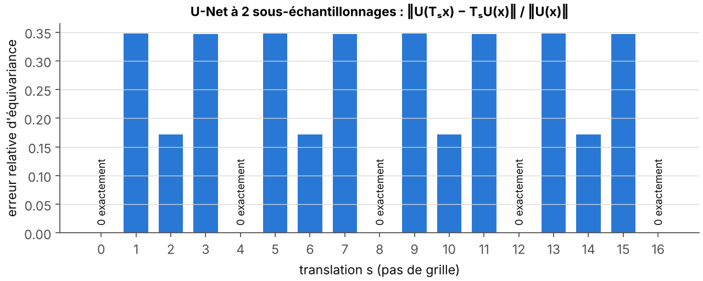
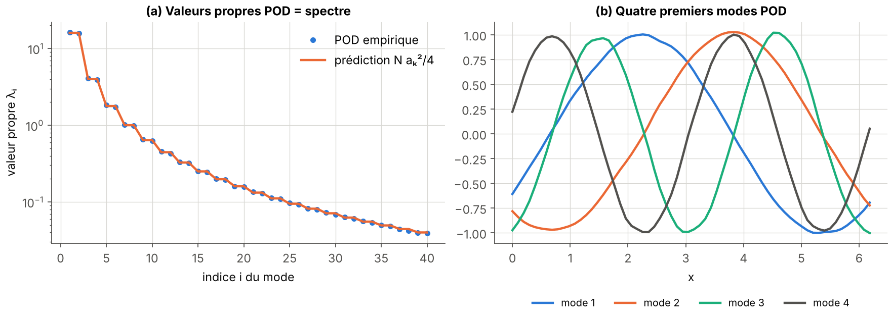
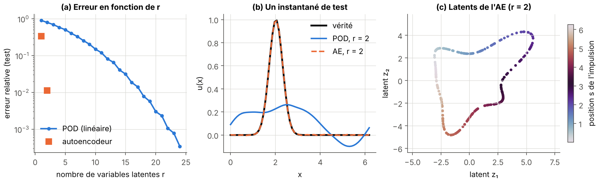

Apprentissage profond pour la physique
Préparation · niveau L3 → M2 · ≈ 30 h
Objectifs
Ce module donne les outils d’apprentissage profond dont se servent les modèles génératifs du stage : les réseaux qui paramètrent un champ de vitesse de flot ou un débruiteur, les représentations réduites dans lesquelles on génère, et les mécanismes qui imposent une symétrie ou une contrainte physique. À la fin des trente heures prévues, vous saurez :
- écrire le risque empirique d’un problème supervisé, démontrer que le prédicteur optimal pour la perte quadratique est l’espérance conditionnelle, et démontrer la convergence linéaire de la descente de gradient pour une fonction fortement convexe et régulière ;
- dériver la rétropropagation à partir de la règle de la chaîne, la programmer à la main pour un petit réseau, et vérifier le résultat avec
torch.autogradet par différences finies, en choisissant le pas et la précision ; - expliquer le rôle de l’initialisation (règle de He), de la normalisation (LayerNorm, GroupNorm), des connexions résiduelles et du conditionnement FiLM, et énoncer le théorème d’approximation universelle en sachant ce qu’il ne dit pas ;
- démontrer qu’une convolution circulaire commute avec les translations, expliquer pourquoi le padding circulaire convient aux domaines périodiques et pourquoi un U-Net n’est équivariant que pour certaines translations ;
- écrire l’attention produit scalaire, démontrer l’équivariance par permutation de l’auto-attention, et construire un décodeur fonctionnel par attention croisée évaluable en des points arbitraires, comme dans FunDiff ;
- calculer une POD par décomposition en valeurs singulières, démontrer le théorème d’Eckart–Young, justifier que la POD d’un champ homogène est la base de Fourier, et comparer POD et autoencodeur sur un écoulement advecté ;
- écrire l’ELBO d’un autoencodeur variationnel et le rôle de \beta, et décrire les autoencodeurs augmentés par une observable (Fukami et Taira, 2023) et le couple β-VAE + transformeur (Solera-Rico et al., 2024) ;
- démontrer qu’une symétrisation sur un groupe fini rend un réseau équivariant, programmer un réseau dont la sortie est le rotationnel d’un potentiel et vérifier numériquement que sa divergence est nulle.
Prérequis
Le module part du niveau de troisième année de licence (L3). Il faut savoir dériver une fonction de plusieurs variables, manipuler des matrices (produit, transposée, valeurs propres d’une matrice symétrique), et connaître les bases des probabilités : espérance, variance, loi gaussienne, indépendance. La décomposition en valeurs singulières est rappelée au chapitre 5.
Deux modules du site sont à lire avant : Calcul vectoriel et analyse de Fourier, pour la transformée de Fourier discrète, la fonction de courant et le potentiel vecteur, et Probabilités, statistiques et transport optimal, pour l’espérance conditionnelle et la divergence de Kullback–Leibler. Le module Mécanique des fluides et turbulence éclaire le chapitre 5 (spectre d’énergie, turbulence homogène) et le module Systèmes dynamiques, bifurcations et mesures invariantes présente le modèle de Gissinger utilisé au chapitre 6. Enfin, le module Électromagnétisme, MHD et effet dynamo explique d’où vient la contrainte \nabla\cdot\mathbf{B} = 0 que le chapitre 6 impose par construction.
Côté programmation, il faut connaître Python et NumPy. PyTorch est introduit progressivement : chaque bloc de code de la page tourne en moins de 30 secondes sur un seul cœur de processeur, sans carte graphique.
Ce module prépare directement Modèles génératifs : diffusion et flow matching et Modèles génératifs sous contraintes physiques.
Plan de travail
Le niveau indique la difficulté : 1 pour les fondations, 2 pour le cœur du module, 3 pour ce qui touche déjà aux questions de recherche du stage. Il ne redescend jamais d’une séance à la suivante.
| Séance | Durée | Niveau | Contenu | Exercices |
|---|---|---|---|---|
| 1 | 3 h | 1 | Chapitre 1, sections 1.1 et 1.2 : apprentissage supervisé, risque empirique, descente de gradient | 1 |
| 2 | 3 h | 1 | Chapitre 1, sections 1.3 et 1.4 : gradient stochastique, momentum, Adam, rétropropagation | 2, 6, 7 |
| 3 | 4 h | 1 | Chapitre 2 : perceptrons multicouches, approximation universelle, initialisation, normalisation | 8 |
| 4 | 4 h | 2 | Chapitre 3 : convolution, équivariance par translation, padding circulaire, U-Net | 3, 9 |
| 5 | 3 h | 2 | Chapitre 4 : attention, transformeurs, attention croisée, ViT, Perceiver | 5, 10 |
| 6 | 4 h | 2 | Chapitre 5, sections 5.1 à 5.4 : POD, Eckart–Young, POD et Fourier, autoencodeurs | 11, 13, 14 |
| 7 | 3 h | 3 | Chapitre 5, sections 5.5 à 5.7 : VAE, β-VAE, autoencodeurs augmentés, β-VAE + transformeur | 4 |
| 8 | 4 h | 3 | Chapitre 6 : PINNs, opérateurs neuronaux, symétrisation, contraintes dures par construction | 12, 15, 16 |
| 9 | 2 h | 3 | Chapitre 7 : pratique de PyTorch sur CPU, vérification des gradients en double précision, reprise de tous les blocs de code | — |
| Total | 30 h | 7 chapitres | 16 exercices |
Chaque séance se termine par les exercices indiqués, à chercher avant de lire leur solution. Les schémas interactifs de la page se manipulent dans le navigateur ; les blocs de code se recopient, s’exécutent, puis se modifient.
1. Apprentissage supervisé et optimisation
Un modèle génératif de champs MHD est, au bout du compte, un réseau de neurones dont on ajuste des millions de paramètres en minimisant une perte moyenne sur des données. Ce chapitre pose ce cadre : ce que l’on minimise (le risque empirique), comment on le minimise (descente de gradient, gradient stochastique, Adam), et comment on calcule efficacement le gradient (rétropropagation).
1.1 Le cadre de l’apprentissage supervisé
Définition 1.1 — Apprentissage supervisé, risque, risque empirique On dispose de n couples (\mathbf{x}_i, \mathbf{y}_i) tirés indépendamment selon une loi inconnue P sur \mathcal{X}\times\mathcal{Y}. Un modèle est une famille de fonctions f_\theta : \mathcal{X} \to \mathcal{Y} indexée par des paramètres \theta \in \mathbb{R}^p. Une perte \ell(\hat{\mathbf{y}}, \mathbf{y}) \geq 0 mesure l’écart entre une prédiction et la cible. Le risque est la perte moyenne sous la vraie loi :
R(\theta) = \mathbb{E}_{(\mathbf{x}, \mathbf{y}) \sim P}\left[\ell(f_\theta(\mathbf{x}), \mathbf{y})\right].
Comme P est inconnue, on minimise le risque empirique, moyenne sur l’échantillon :
\widehat{R}_n(\theta) = \frac{1}{n}\sum_{i=1}^{n} \ell(f_\theta(\mathbf{x}_i), \mathbf{y}_i).
Pour une régression, la perte usuelle est la perte quadratique \ell(\hat{\mathbf{y}}, \mathbf{y}) = |\hat{\mathbf{y}} - \mathbf{y}|^2 ; son risque empirique s’appelle l’erreur quadratique moyenne (MSE). Pour une classification en K classes, le réseau produit des probabilités \hat p_1, \dots, \hat p_K et la perte d’entropie croisée vaut -\log \hat p_{y}.
L’écart R(\theta) - \widehat{R}_n(\theta) s’appelle l’écart de généralisation. Un modèle très riche peut rendre \widehat{R}_n presque nul en apprenant le bruit de l’échantillon : c’est le surapprentissage. On le détecte en réservant une partie des données (ensemble de validation) qui ne sert jamais au calcul du gradient, et sur laquelle on mesure la perte au fil de l’entraînement.
Proposition 1.2 — Prédicteur optimal pour la perte quadratique Si \mathbb{E}|\mathbf{y}|^2 < \infty, la fonction f^\star(\mathbf{x}) = \mathbb{E}[\mathbf{y} \mid \mathbf{x}] minimise le risque quadratique \mathbb{E}|f(\mathbf{x}) - \mathbf{y}|^2 parmi toutes les fonctions mesurables f de carré intégrable, et pour toute telle f :
\mathbb{E}|f(\mathbf{x}) - \mathbf{y}|^2 = \mathbb{E}|\mathbf{y} - f^\star(\mathbf{x})|^2 + \mathbb{E}|f(\mathbf{x}) - f^\star(\mathbf{x})|^2.
Preuve. On écrit f(\mathbf{x}) - \mathbf{y} = (f(\mathbf{x}) - f^\star(\mathbf{x})) + (f^\star(\mathbf{x}) - \mathbf{y}) et on développe le carré. Le terme croisé vaut 2\,\mathbb{E}[(f - f^\star)(\mathbf{x})\cdot(f^\star(\mathbf{x}) - \mathbf{y})]. En conditionnant par \mathbf{x}, le premier facteur est connu et \mathbb{E}[f^\star(\mathbf{x}) - \mathbf{y} \mid \mathbf{x}] = 0 par définition de f^\star ; le terme croisé est donc nul. Le premier terme restant ne dépend pas de f et le second est positif, nul pour f = f^\star. ∎
Remarque 1.3 — Pourquoi ce résultat compte pour le stage Le flow matching (module p7) entraîne un réseau v_\theta(\mathbf{x}, t, \boldsymbol\lambda) par régression quadratique d’une cible aléatoire. La proposition 1.2 dit que l’optimum est l’espérance conditionnelle de cette cible : le champ de vitesse appris est une moyenne, et c’est elle qui transporte le bruit vers les données. Tout le reste de ce module sert à bien paramétrer et bien entraîner ce régresseur.
Exemple 1.4 — Régression linéaire et équations normales Pour un modèle linéaire f_\theta(\mathbf{x}) = \theta^\top\mathbf{x} et une cible scalaire, on range les entrées dans la matrice X \in \mathbb{R}^{n\times p} (une ligne par exemple) et les cibles dans \mathbf{y} \in \mathbb{R}^n. Le risque empirique (avec un facteur \tfrac12 commode) vaut \widehat R_n(\theta) = \frac{1}{2n}|X\theta - \mathbf{y}|^2, de gradient \nabla \widehat R_n(\theta) = \frac1n X^\top(X\theta - \mathbf{y}) et de hessienne H = \frac1n X^\top X. Le minimiseur vérifie les équations normales X^\top X\,\theta = X^\top \mathbf{y}. Avec X = \begin{pmatrix} 1 & 0 \\ 1 & 1 \\ 1 & 2\end{pmatrix} et \mathbf{y} = (1, 2, 2)^\top, on trouve X^\top X = \begin{pmatrix} 3 & 3 \\ 3 & 5\end{pmatrix}, X^\top\mathbf{y} = (5, 6)^\top, donc \theta = (7/6, 1/2) : la droite des moindres carrés est y = 7/6 + x/2.
1.2 Descente de gradient
Définition 1.5 — Descente de gradient, régularité, forte convexité La descente de gradient de pas \eta > 0 part de \theta_0 et itère
\theta_{k+1} = \theta_k - \eta\,\nabla \widehat R_n(\theta_k).
Une fonction F différentiable est L-régulière si son gradient est L-lipschitzien : |\nabla F(\theta) - \nabla F(\theta')| \leq L|\theta - \theta'|. Elle est \mu-fortement convexe (\mu > 0) si F(\theta') \geq F(\theta) + \nabla F(\theta)^\top(\theta' - \theta) + \frac{\mu}{2}|\theta' - \theta|^2 pour tous \theta, \theta'. Le rapport \kappa = L/\mu \geq 1 est le conditionnement. Pour une forme quadratique de hessienne H, L et \mu sont la plus grande et la plus petite valeur propre de H.
Une remarque de notation s’impose ici. En apprentissage, la lettre \eta désigne traditionnellement le pas, et c’est le sens qu’elle a dans tout ce module. Dans le reste du site (voir les notations communes), \eta est la diffusivité magnétique ; elle n’apparaît ici qu’à propos de l’expérience E2, où nous écrivons toujours « diffusivité magnétique \eta » en toutes lettres.
Théorème 1.6 — Convergence linéaire de la descente de gradient Soit F une fonction L-régulière et \mu-fortement convexe, de minimum F^\star. Avec le pas \eta = 1/L, pour tout k \geq 0 :
F(\theta_k) - F^\star \leq \left(1 - \frac{1}{\kappa}\right)^{k}\left(F(\theta_0) - F^\star\right).
Preuve. Lemme de descente. La régularité donne, en intégrant le gradient le long du segment, F(\theta') \leq F(\theta) + \nabla F(\theta)^\top(\theta' - \theta) + \frac{L}{2}|\theta' - \theta|^2. Avec \theta' = \theta - \frac1L\nabla F(\theta), il vient
F(\theta_{k+1}) \leq F(\theta_k) - \frac{1}{2L}|\nabla F(\theta_k)|^2.
Inégalité de Polyak–Łojasiewicz. Le membre de droite de la forte convexité, vu comme fonction de \theta', est minimal en \theta' = \theta - \frac1\mu\nabla F(\theta), où il vaut F(\theta) - \frac{1}{2\mu}|\nabla F(\theta)|^2. Comme F(\theta') \geq F^\star pour tout \theta', on obtient F^\star \geq F(\theta) - \frac{1}{2\mu}|\nabla F(\theta)|^2, soit |\nabla F(\theta)|^2 \geq 2\mu\,(F(\theta) - F^\star).
Conclusion. En combinant les deux inégalités, F(\theta_{k+1}) - F^\star \leq F(\theta_k) - F^\star - \frac{\mu}{L}(F(\theta_k) - F^\star) = (1 - 1/\kappa)(F(\theta_k) - F^\star), et une récurrence termine. ∎
Exemple 1.7 — Ce que coûte un mauvais conditionnement Pour diviser l’excès de risque par 10^6, il faut (1 - 1/\kappa)^k \leq 10^{-6}, soit environ k \geq \kappa \ln(10^6) \approx 13{,}8\,\kappa itérations. Avec \kappa = 100, cela fait environ 1 400 itérations ; avec \kappa = 10^4, environ 140 000. En pratique, les pertes des réseaux profonds sont mal conditionnées, ce qui motive le momentum et Adam. Le bloc de code de la section 1.3 reprend une régression linéaire de conditionnement \kappa \approx 100. Après 300 pas de taille 1/L, le théorème ne garantit qu’une division de l’excès de risque par (1 - 1/\kappa)^{-300} \approx e^{300/\kappa} \approx 18 (avec la valeur mesurée \kappa = 104). On observe beaucoup mieux (l’excès passe de 1,9 à 3{,}3\times 10^{-6}), car l’essentiel de l’excès initial est porté par les directions raides, qui convergent vite. La borne décrit le pire cas, où tout l’excès serait porté par la direction la plus plate ; c’est la composante restante sur cette direction qui limite la précision finale.
1.3 Gradient stochastique, momentum et Adam
Calculer \nabla\widehat R_n exige de parcourir les n exemples. Quand n vaut des centaines de milliers d’instantanés de champs, on estime plutôt le gradient sur un petit lot (mini-batch) tiré au hasard.
Proposition 1.8 — Le gradient stochastique est sans biais Soit B = (i_1, \dots, i_b) un lot de b indices tirés uniformément et indépendamment dans \{1, \dots, n\}, et \mathbf{g} = \frac1b\sum_{j=1}^{b}\nabla \ell_{i_j}(\theta), où \ell_i(\theta) = \ell(f_\theta(\mathbf{x}_i), \mathbf{y}_i). Alors
\mathbb{E}[\mathbf{g}] = \nabla\widehat R_n(\theta), \qquad \mathbb{E}\left|\mathbf{g} - \nabla\widehat R_n(\theta)\right|^2 = \frac{\sigma^2(\theta)}{b},
où \sigma^2(\theta) = \frac1n\sum_{i=1}^n |\nabla\ell_i(\theta) - \nabla\widehat R_n(\theta)|^2 est la dispersion des gradients individuels.
Preuve. Chaque terme \nabla\ell_{i_j} a pour espérance \frac1n\sum_i \nabla\ell_i = \nabla\widehat R_n, d’où la première égalité par linéarité. Les b termes centrés \nabla\ell_{i_j} - \nabla\widehat R_n sont indépendants, de moyenne nulle et de variance \sigma^2 ; la variance d’une moyenne de b tels termes vaut \sigma^2/b. ∎
Le gradient stochastique (SGD) remplace \nabla\widehat R_n par \mathbf{g} dans la définition 1.5. À pas constant, le bruit de variance \sigma^2/b empêche la convergence exacte : les itérés fluctuent dans une zone dont la taille décroît avec \eta. Robbins et Monro (1951) ont montré que des pas décroissants vérifiant \sum_k \eta_k = \infty et \sum_k \eta_k^2 < \infty assurent la convergence sous des hypothèses convenables ; en apprentissage profond, on utilise plutôt un pas qui décroît selon un calendrier (cosinus, paliers).
Définition 1.9 — Momentum et Adam Le momentum (ou boule pesante) accumule une moyenne des gradients passés : \mathbf{m}_{k} = \beta\,\mathbf{m}_{k-1} + \mathbf{g}_k puis \theta_{k} = \theta_{k-1} - \eta\,\mathbf{m}_k, avec typiquement \beta = 0{,}9.
Adam (Kingma et Ba, 2015) tient, composante par composante, une moyenne mobile du gradient et de son carré, puis corrige leur biais initial :
\mathbf{m}_k = \beta_1\mathbf{m}_{k-1} + (1 - \beta_1)\,\mathbf{g}_k, \qquad \mathbf{v}_k = \beta_2\mathbf{v}_{k-1} + (1 - \beta_2)\,\mathbf{g}_k\odot\mathbf{g}_k,
\hat{\mathbf{m}}_k = \frac{\mathbf{m}_k}{1 - \beta_1^k}, \qquad \hat{\mathbf{v}}_k = \frac{\mathbf{v}_k}{1 - \beta_2^k}, \qquad \theta_k = \theta_{k-1} - \eta\,\frac{\hat{\mathbf{m}}_k}{\sqrt{\hat{\mathbf{v}}_k} + \varepsilon},
avec \mathbf{m}_0 = \mathbf{v}_0 = 0, \odot le produit composante par composante et les valeurs par défaut \beta_1 = 0{,}9, \beta_2 = 0{,}999, \varepsilon = 10^{-8}. AdamW (Loshchilov et Hutter, 2019) ajoute une décroissance des poids découplée : \theta_k \leftarrow \theta_k - \eta\,\lambda_{\mathrm{wd}}\,\theta_{k-1}.
Proposition 1.10 — Deux propriétés d’Adam (i) Si le gradient est constant, \mathbf{g}_k = \mathbf{g}, alors \hat{\mathbf{m}}_k = \mathbf{g} et \hat{\mathbf{v}}_k = \mathbf{g}\odot\mathbf{g} pour tout k \geq 1.
- Pour \varepsilon = 0, le pas d’Adam est inchangé si l’on multiplie la j-ième composante de tous les gradients par une constante c_j > 0 : la taille du pas est fixée par \eta, et non par l’échelle du gradient.
Preuve.
Par récurrence, \mathbf{m}_k = (1 - \beta_1)\sum_{j=1}^{k}\beta_1^{k-j}\mathbf{g} = (1 - \beta_1^k)\,\mathbf{g}, et de même \mathbf{v}_k = (1 - \beta_2^k)\,\mathbf{g}\odot\mathbf{g} ; la division par 1 - \beta^k enlève exactement ce facteur. Sans correction, les premiers pas seraient beaucoup trop petits car \mathbf{m}_0 = 0.
Les récurrences sont linéaires : m_{k,j} est multiplié par c_j et v_{k,j} par c_j^2, donc le quotient \hat m_{k,j}/\sqrt{\hat v_{k,j}} est inchangé. ∎
Kingma et Ba (2015, section 2.1) majorent la taille du pas effectif \Delta_k = \eta\,\hat m_k/\sqrt{\hat v_k} (pour \varepsilon = 0) : |\Delta_k| \leq \eta lorsque 1 - \beta_1 \leq \sqrt{1 - \beta_2}, et |\Delta_k| \leq \eta(1 - \beta_1)/\sqrt{1 - \beta_2} sinon. Avec les valeurs par défaut, on est dans le second cas (0{,}1 > \sqrt{0{,}001} \approx 0{,}032, borne \approx 3{,}2\,\eta), mais les auteurs précisent que cette borne n’est approchée que pour des gradients extrêmement creux, nuls à tous les pas sauf au dernier ; dans les cas usuels, |\hat m_k/\sqrt{\hat v_k}| reste de l’ordre de 1 au plus, et le pas de l’ordre de \eta. La propriété (ii) explique en partie la robustesse d’Adam sur des pertes mal conditionnées dont les directions propres sont alignées avec les axes des paramètres : il égalise les échelles composante par composante. Elle n’aide pas quand la vallée est oblique, ce que montre le schéma interactif ci-dessous (case « vallée tournée »).
Le bloc suivant compare ces optimiseurs sur une régression linéaire dont la hessienne a un conditionnement voisin de 100.
import torch
torch.set_num_threads(1)
torch.manual_seed(0)
# Régression linéaire mal conditionnée : colonnes d'écarts-types de 1 à 0,1
n, d = 2000, 20
X = torch.randn(n, d) * torch.logspace(0, -1, d)
y = X @ torch.randn(d) + 0.01 * torch.randn(n)
def risk(theta):
return 0.5 * ((X @ theta - y) ** 2).mean()
R_star = risk(torch.linalg.lstsq(X, y).solution).item() # minimum exact (équations normales)
ev = torch.linalg.eigvalsh(X.T @ X / n) # hessienne du risque empirique
L = ev[-1].item()
print(f"kappa = L/mu = {(ev[-1] / ev[0]).item():.0f}")
def run(label, make_opt, steps=300, batch=None):
torch.manual_seed(1)
theta = torch.zeros(d, requires_grad=True)
opt = make_opt([theta])
for k in range(steps):
idx = torch.randint(0, n, (batch,)) if batch else slice(None)
loss = 0.5 * ((X[idx] @ theta - y[idx]) ** 2).mean()
opt.zero_grad(); loss.backward(); opt.step()
print(f"{label:<26} excès de risque : {risk(theta.detach()).item() - R_star:.1e}")
run("GD, eta = 1/L", lambda p: torch.optim.SGD(p, lr=1 / L))
run("GD + momentum 0.9", lambda p: torch.optim.SGD(p, lr=1 / L, momentum=0.9))
run("Adam, eta = 0.05", lambda p: torch.optim.Adam(p, lr=0.05))
run("SGD lot 32, eta = 1/L", lambda p: torch.optim.SGD(p, lr=1 / L), batch=32)
run("SGD lot 32, eta = 0.1/L", lambda p: torch.optim.SGD(p, lr=0.1 / L), batch=32, steps=3000)
run("Adam lot 32, eta = 0.05", lambda p: torch.optim.Adam(p, lr=0.05), batch=32)
# sortie :
# kappa = L/mu = 104
# GD, eta = 1/L excès de risque : 3.3e-06
# GD + momentum 0.9 excès de risque : 2.9e-11
# Adam, eta = 0.05 excès de risque : 1.8e-11
# SGD lot 32, eta = 1/L excès de risque : 1.9e-05
# SGD lot 32, eta = 0.1/L excès de risque : 3.6e-06
# Adam lot 32, eta = 0.05 excès de risque : 1.7e-06Trois constats se lisent dans cette sortie. La descente de gradient simple est lente, comme le prévoit le théorème 1.6 avec \kappa \approx 100. Le momentum et Adam gagnent cinq ordres de grandeur au même nombre de pas. Avec des lots de 32 exemples, la perte stagne à un plancher fixé par le bruit du gradient : diviser le pas par 10 abaisse ce plancher, au prix de dix fois plus de pas.
1.4 Rétropropagation
Un réseau de neurones est une composition de fonctions simples. Son gradient par rapport à des millions de paramètres se calcule pour un coût comparable à celui d’une seule évaluation du réseau : c’est la rétropropagation, cas particulier de la différentiation automatique en mode inverse (Rumelhart, Hinton et Williams, 1986).
Définition 1.11 — Réseau en couches et adjoints On considère une composition \mathbf{h}_0 = \mathbf{x}, \mathbf{h}_\ell = f_\ell(\mathbf{h}_{\ell-1}; \theta_\ell) pour \ell = 1, \dots, L, suivie d’une perte scalaire J = \varphi(\mathbf{h}_L) (on note \varphi la perte, pour ne pas la confondre avec l’indice de couche \ell). On note A_\ell = \partial f_\ell/\partial\mathbf{h}_{\ell-1} et B_\ell = \partial f_\ell/\partial\theta_\ell les matrices jacobiennes de la couche \ell, évaluées au point courant. L’adjoint de la couche \ell est le vecteur \boldsymbol\delta_\ell = \partial J/\partial\mathbf{h}_\ell, de même taille que \mathbf{h}_\ell.
Théorème 1.12 — Rétropropagation Les adjoints vérifient la récurrence descendante
\boldsymbol\delta_L = \nabla\varphi(\mathbf{h}_L), \qquad \boldsymbol\delta_{\ell-1} = A_\ell^\top\,\boldsymbol\delta_\ell \quad (\ell = L, \dots, 1),
et le gradient par rapport aux paramètres de la couche \ell vaut \nabla_{\theta_\ell} J = B_\ell^\top\,\boldsymbol\delta_\ell. Calculer tous les gradients coûte une passe avant (qui stocke les \mathbf{h}_\ell) et une passe arrière, soit un petit multiple du coût d’une évaluation.
Preuve. Différentions la composition. La règle de la chaîne donne \mathrm{d}J = \nabla\varphi(\mathbf{h}_L)^\top\mathrm{d}\mathbf{h}_L et, pour chaque couche, \mathrm{d}\mathbf{h}_\ell = A_\ell\,\mathrm{d}\mathbf{h}_{\ell-1} + B_\ell\,\mathrm{d}\theta_\ell, avec \mathrm{d}\mathbf{h}_0 = 0 puisque l’entrée est fixée. En déroulant cette récurrence,
\mathrm{d}\mathbf{h}_L = \sum_{\ell=1}^{L} A_L A_{L-1}\cdots A_{\ell+1}\,B_\ell\,\mathrm{d}\theta_\ell,
donc \mathrm{d}J = \sum_\ell \mathbf{g}_\ell^\top B_\ell\,\mathrm{d}\theta_\ell avec \mathbf{g}_\ell^\top = \nabla\varphi(\mathbf{h}_L)^\top A_L\cdots A_{\ell+1}, ce qui donne \partial J/\partial\theta_\ell = B_\ell^\top\mathbf{g}_\ell. Le même déroulement, commencé à la couche \ell, montre qu’une variation de \mathbf{h}_\ell seule produit \mathrm{d}\mathbf{h}_L = A_L\cdots A_{\ell+1}\,\mathrm{d}\mathbf{h}_\ell, donc \mathrm{d}J = \mathbf{g}_\ell^\top\mathrm{d}\mathbf{h}_\ell : le vecteur \mathbf{g}_\ell est exactement l’adjoint \boldsymbol\delta_\ell = \partial J/\partial\mathbf{h}_\ell. Enfin, \mathbf{g}_L = \nabla\varphi(\mathbf{h}_L) et \mathbf{g}_{\ell-1}^\top = \mathbf{g}_\ell^\top A_\ell, ce qui est la récurrence annoncée.
Pour le coût, on évalue le produit \nabla\varphi^\top A_L\cdots A_{\ell+1} de la gauche vers la droite : chaque étape est un produit vecteur–matrice, aussi cher que l’application de la couche. Le mode direct, qui propagerait \partial\mathbf{h}_\ell/\partial\theta de la droite vers la gauche, demanderait une passe par paramètre. ∎
Proposition 1.13 — Formules pour une couche dense Pour la couche \mathbf{a}_\ell = W_\ell\mathbf{h}_{\ell-1} + \mathbf{b}_\ell, \mathbf{h}_\ell = \sigma(\mathbf{a}_\ell) avec \sigma appliquée composante par composante, on pose \boldsymbol\delta^{a}_\ell = \sigma'(\mathbf{a}_\ell)\odot\boldsymbol\delta_\ell. Alors
\nabla_{W_\ell}J = \boldsymbol\delta^{a}_\ell\,\mathbf{h}_{\ell-1}^\top, \qquad \nabla_{\mathbf{b}_\ell}J = \boldsymbol\delta^{a}_\ell, \qquad \boldsymbol\delta_{\ell-1} = W_\ell^\top\boldsymbol\delta^{a}_\ell.
Preuve. On applique le théorème 1.12 à la couche coupée en deux : l’activation a pour jacobienne \mathrm{diag}(\sigma'(\mathbf{a}_\ell)), d’où \boldsymbol\delta^a_\ell. Pour la partie affine, \partial a_i/\partial W_{ij} = h_j et \partial a_i/\partial b_i = 1, donc \partial J/\partial W_{ij} = \delta^a_i h_j et \partial J/\partial b_i = \delta^a_i ; enfin \partial\mathbf{a}_\ell/\partial\mathbf{h}_{\ell-1} = W_\ell donne la dernière formule. ∎
Exemple 1.14 — Rétropropagation à la main Prenons x = 1, h = \tanh(w_1 x), \hat y = w_2 h, J = \frac12(\hat y - y)^2 avec w_1 = 0{,}5, w_2 = -1, y = 0. Passe avant : h = \tanh(0{,}5) = 0{,}46212, \hat y = -0{,}46212, J = 0{,}10678. Passe arrière : \delta_{\hat y} = \hat y - y = -0{,}46212, donc \partial J/\partial w_2 = \delta_{\hat y}\,h = -0{,}21355 ; puis \delta_h = w_2\,\delta_{\hat y} = 0{,}46212 et \delta_a = (1 - h^2)\,\delta_h = 0{,}78644 \times 0{,}46212 = 0{,}36343, donc \partial J/\partial w_1 = \delta_a\,x = 0{,}36343.
Le code suivant programme la rétropropagation d’un réseau à une couche cachée, puis la vérifie de deux façons : avec la différentiation automatique de PyTorch, et par différences finies centrées.
import numpy as np
import torch
torch.set_num_threads(1)
rng = np.random.default_rng(0)
# Réseau à une couche cachée : a = W1 x + b1, h = tanh(a), y_hat = W2 h + b2, J = 1/2 |y_hat - y|^2
d, n, m = 3, 5, 2
W1, b1 = rng.normal(size=(n, d)), rng.normal(size=n)
W2, b2 = rng.normal(size=(m, n)), rng.normal(size=m)
x, y = rng.normal(size=d), rng.normal(size=m)
# Passe avant (on garde les intermédiaires)
a = W1 @ x + b1
h = np.tanh(a)
y_hat = W2 @ h + b2
J = 0.5 * np.sum((y_hat - y) ** 2)
# Passe arrière (rétropropagation écrite à la main)
delta_y = y_hat - y # dJ/dy_hat
gW2 = np.outer(delta_y, h) # dJ/dW2
gb2 = delta_y
delta_h = W2.T @ delta_y # dJ/dh
delta_a = (1 - h ** 2) * delta_h # tanh'(a) = 1 - tanh(a)^2
gW1 = np.outer(delta_a, x)
gb1 = delta_a
# Vérification 1 : différentiation automatique de PyTorch
T = lambda A: torch.tensor(A, dtype=torch.float64, requires_grad=True)
tW1, tb1, tW2, tb2 = T(W1), T(b1), T(W2), T(b2)
tJ = 0.5 * ((tW2 @ torch.tanh(tW1 @ torch.tensor(x) + tb1) + tb2 - torch.tensor(y)) ** 2).sum()
tJ.backward()
print("écart main/autograd :", max(np.abs(gW1 - tW1.grad.numpy()).max(), np.abs(gW2 - tW2.grad.numpy()).max()))
# Vérification 2 : différences finies centrées sur un coefficient de W1
def loss(W1_):
return 0.5 * np.sum((W2 @ np.tanh(W1_ @ x + b1) + b2 - y) ** 2)
eps, E = 1e-6, np.zeros_like(W1); E[1, 2] = 1.0
fd = (loss(W1 + eps * E) - loss(W1 - eps * E)) / (2 * eps)
print(f"dJ/dW1[1,2] : rétropropagation {gW1[1, 2]:.8f}, différences finies {fd:.8f}")
# Exemple scalaire du cours : x = 1, w1 = 0.5, w2 = -1, y = 0
w1 = torch.tensor(0.5, requires_grad=True); w2 = torch.tensor(-1.0, requires_grad=True)
Js = 0.5 * (w2 * torch.tanh(w1 * 1.0) - 0.0) ** 2
Js.backward()
print(f"J = {Js.item():.5f}, dJ/dw1 = {w1.grad.item():.5f}, dJ/dw2 = {w2.grad.item():.5f}")
# sortie :
# écart main/autograd : 3.3306690738754696e-16
# dJ/dW1[1,2] : rétropropagation -0.31433281, différences finies -0.31433281
# J = 0.10678, dJ/dw1 = 0.36343, dJ/dw2 = -0.21355Ce qu’il faut retenir — chapitre 1
- On minimise le risque empirique \widehat R_n(\theta) = \frac1n\sum_i \ell(f_\theta(\mathbf{x}_i), \mathbf{y}_i) et l’on surveille une perte de validation pour détecter le surapprentissage.
- Pour la perte quadratique, l’optimum est l’espérance conditionnelle \mathbb{E}[\mathbf{y}\mid\mathbf{x}] ; le flow matching exploite exactement ce fait.
- La descente de gradient converge comme (1 - 1/\kappa)^k : le conditionnement \kappa fixe la vitesse. Le momentum et Adam atténuent ce problème ; le gradient stochastique est sans biais, de variance \sigma^2/b.
- La rétropropagation est la règle de la chaîne évaluée de la sortie vers l’entrée : \boldsymbol\delta_{\ell-1} = A_\ell^\top\boldsymbol\delta_\ell, \nabla_{\theta_\ell}J = B_\ell^\top\boldsymbol\delta_\ell, pour le coût d’environ deux évaluations du réseau.
- Toujours vérifier un gradient écrit à la main par différences finies centrées (en double précision).
2. Perceptrons multicouches
Le perceptron multicouche (MLP) est la brique de base : c’est lui qui, dans les expériences E1 et E2 de ce dépôt, paramètre le champ de vitesse du flow matching. Ce chapitre précise ce qu’un MLP sait représenter, puis les détails pratiques sans lesquels il ne s’entraîne pas : initialisation, normalisation, connexions résiduelles, conditionnement par un paramètre physique.
2.1 Définition
Définition 2.1 — Perceptron multicouche Un MLP à L couches de largeurs n_0, n_1, \dots, n_L est la fonction
f_\theta(\mathbf{x}) = W_L\,\sigma\big(W_{L-1}\,\sigma(\cdots\sigma(W_1\mathbf{x} + \mathbf{b}_1)\cdots) + \mathbf{b}_{L-1}\big) + \mathbf{b}_L,
où W_\ell \in \mathbb{R}^{n_\ell\times n_{\ell-1}}, \mathbf{b}_\ell \in \mathbb{R}^{n_\ell} et \sigma est une activation appliquée composante par composante. Les activations courantes sont \mathrm{ReLU}(z) = \max(z, 0), \tanh, \mathrm{SiLU}(z) = z/(1 + e^{-z}) et \mathrm{GELU}(z) = z\,\Phi(z), où \Phi est la fonction de répartition de la loi normale. Le nombre de paramètres est \sum_{\ell=1}^{L}(n_{\ell-1} + 1)\,n_\ell.
Exemple 2.2 — Taille d’un MLP Le MLP des expériences du dépôt (MLPField dans experiences/common.py) prend l’état, un plongement sinusoïdal du temps et du paramètre, et comporte quatre couches cachées, de largeur 256 dans l’expérience E1 (1 024 dans E2). Pour un état de dimension 3 (modèle de Gissinger) et des plongements de taille 2 \times 33 = 66, l’entrée a 69 composantes ; le nombre de paramètres vaut (69 + 1)\times 256 + 3\times(256 + 1)\times 256 + (256 + 1)\times 3 = 17\,920 + 197\,376 + 771 = 216\,067.
2.2 Approximation universelle
Théorème 2.3 — Approximation universelle (Cybenko, 1989 ; Hornik, 1991 ; Leshno et al., 1993) Soit \sigma : \mathbb{R}\to\mathbb{R} continue et non polynomiale, K \subset \mathbb{R}^d un compact et f : K \to \mathbb{R} continue. Pour tout \varepsilon > 0, il existe N et des coefficients a_j, b_j \in \mathbb{R}, \mathbf{w}_j \in \mathbb{R}^d tels que
\sup_{\mathbf{x}\in K}\left|f(\mathbf{x}) - \sum_{j=1}^{N} a_j\,\sigma(\mathbf{w}_j^\top\mathbf{x} + b_j)\right| < \varepsilon.
Preuve. Démonstration dans le cas d = 1, \sigma = \mathrm{ReLU}, K = [a, b]. Découpons [a, b] en N intervalles de longueur h = (b - a)/N aux nœuds x_j = a + jh, et soit p l’interpolant affine par morceaux de f aux nœuds, de pente s_j sur [x_j, x_{j+1}]. Sur [a, b], on a x - a = \mathrm{ReLU}(x - x_0) et
p(x) = f(x_0) + s_0\,\mathrm{ReLU}(x - x_0) + \sum_{j=1}^{N-1}(s_j - s_{j-1})\,\mathrm{ReLU}(x - x_j),
car chaque terme \mathrm{ReLU}(x - x_j) change la pente de s_j - s_{j-1} exactement au nœud x_j. La constante f(x_0) s’écrit elle-même f(x_0)\,\mathrm{ReLU}(0\cdot x + 1) : p est donc un réseau à une couche cachée de N + 1 neurones. Soit \omega(h) = \sup_{|x - x'|\leq h}|f(x) - f(x')| le module de continuité de f. Pour x \in [x_j, x_{j+1}], p(x) est compris entre f(x_j) et f(x_{j+1}), donc |f(x) - p(x)| \leq |f(x) - f(x_j)| + |f(x_j) - p(x)| \leq 2\,\omega(h). Comme f est uniformément continue sur le compact, \omega(h) \to 0 quand N \to \infty. Le cas général (d quelconque, \sigma non polynomiale) est démontré par Leshno et al. (1993) et n’est pas reproduit ici. ∎
Remarque 2.4 — Ce que le théorème ne dit pas Le théorème garantit l’existence d’un réseau, sans borne raisonnable sur son nombre de neurones (qui peut croître exponentiellement avec d), sans dire si la descente de gradient le trouvera, ni s’il généralisera. En pratique, les réseaux apprennent d’abord les basses fréquences de la cible : c’est le biais spectral (Rahaman et al., 2019). Pour représenter des champs turbulents riches en petites échelles, on plonge les coordonnées dans des caractéristiques de Fourier (Tancik et al., 2020).
Définition 2.5 — Caractéristiques de Fourier Pour une coordonnée \mathbf{x}\in\mathbb{R}^d et une matrice de fréquences \mathbf{B} \in \mathbb{R}^{m\times d}, le plongement de Fourier est
\gamma(\mathbf{x}) = \big(\cos(2\pi\mathbf{B}\mathbf{x}),\ \sin(2\pi\mathbf{B}\mathbf{x})\big) \in \mathbb{R}^{2m}.
Les fréquences sont tirées au hasard (B_{ij}\sim\mathcal{N}(0, s^2), Tancik et al., 2020) ou choisies entières pour un domaine périodique.
Proposition 2.6 — Périodicité imposée par construction Sur le domaine [0, 2\pi)^2, soit \gamma(x, y) = (\cos x, \sin x, \cos y, \sin y). Pour tout réseau g, la fonction f = g\circ\gamma est 2\pi-périodique en x et en y, ainsi que toutes ses dérivées.
Preuve. On a \gamma(x + 2\pi, y) = \gamma(x, y), donc f(x + 2\pi, y) = f(x, y) ; de même en y. Les dérivées d’une fonction périodique dérivable sont périodiques. ∎
C’est le plongement utilisé par FunDiff (Wang et al., 2026) pour imposer la périodicité de l’écoulement de Kolmogorov : une contrainte « dure », satisfaite exactement quels que soient les poids. Le bloc suivant illustre le biais spectral sur la cible \sin(2\pi x) + \frac12\sin(16\pi x) : sans plongement, la composante de fréquence 8 n’est presque pas apprise après 300 pas.
import math
import torch
torch.set_num_threads(1)
torch.manual_seed(0)
x = (torch.arange(256) / 256)[:, None] # grille périodique de [0, 1)
f = torch.sin(2 * math.pi * x) + 0.5 * torch.sin(2 * math.pi * 8 * x) # basse + haute fréquence
def mlp(d_in):
return torch.nn.Sequential(torch.nn.Linear(d_in, 64), torch.nn.Tanh(),
torch.nn.Linear(64, 64), torch.nn.Tanh(), torch.nn.Linear(64, 1))
B = 6.0 * torch.randn(1, 32) # fréquences aléatoires (Tancik et al. 2020)
embeddings = {"x brut": lambda x: x,
"Fourier features": lambda x: torch.cat([torch.cos(2 * math.pi * x @ B), torch.sin(2 * math.pi * x @ B)], 1)}
for name, emb in embeddings.items():
net = mlp(emb(x).shape[1])
opt = torch.optim.Adam(net.parameters(), lr=1e-3)
for step in range(1, 3001):
loss = ((net(emb(x)) - f) ** 2).mean()
opt.zero_grad(); loss.backward(); opt.step()
if step in (300, 3000):
r = (net(emb(x)) - f).detach().squeeze()
c = torch.fft.rfft(r) / 128 # amplitude de l'erreur par fréquence
print(f"{name:<17} pas {step:>4} : erreur rel. {r.norm() / f.norm():.1e}, "
f"|erreur| en k=1 : {c[1].abs():.1e}, en k=8 : {c[8].abs():.1e}")
# sortie :
# x brut pas 300 : erreur rel. 5.8e-01, |erreur| en k=1 : 2.4e-01, en k=8 : 4.3e-01
# x brut pas 3000 : erreur rel. 8.7e-02, |erreur| en k=1 : 1.2e-03, en k=8 : 2.3e-02
# Fourier features pas 300 : erreur rel. 3.4e-03, |erreur| en k=1 : 1.6e-05, en k=8 : 8.5e-06
# Fourier features pas 3000 : erreur rel. 4.1e-04, |erreur| en k=1 : 3.5e-07, en k=8 : 4.2e-07À 300 pas, le réseau sans plongement a déjà réduit l’erreur sur la fréquence 1 (amplitude 1) à 0,24, mais l’erreur sur la fréquence 8 vaut encore 0,43 pour une amplitude de 0,5 : cette composante n’est presque pas apprise.
2.3 Initialisation
Si les poids initiaux sont trop petits, le signal s’éteint de couche en couche ; trop grands, il explose. La bonne échelle se calcule.
Proposition 2.7 — Propagation de la variance et règle de He Considérons la couche \mathbf{a}^{(\ell)} = W^{(\ell)}\mathbf{h}^{(\ell-1)} avec \mathbf{h}^{(\ell-1)} = \mathrm{ReLU}(\mathbf{a}^{(\ell-1)}), des poids W^{(\ell)}_{ij} indépendants, centrés, de variance s^2, indépendants de \mathbf{h}^{(\ell-1)}, et des pré-activations a^{(\ell-1)}_j de loi symétrique (donc centrées) et de même variance pour tout j. Alors
\mathrm{Var}\big(a^{(\ell)}_i\big) = \frac{n_{\ell-1}\,s^2}{2}\,\mathrm{Var}\big(a^{(\ell-1)}_j\big).
La variance est donc conservée de couche en couche si et seulement si s^2 = 2/n_{\ell-1} (He et al., 2015). Pour une activation linéaire ou \tanh près de 0, le même calcul sans le facteur \frac12 donne s^2 = 1/n_{\ell-1} ; Glorot et Bengio (2010) proposent le compromis s^2 = 2/(n_{\ell-1} + n_\ell) entre passe avant et passe arrière.
Preuve. a^{(\ell)}_i = \sum_j W_{ij}h_j est une somme de n_{\ell-1} termes centrés (car \mathbb{E}W_{ij} = 0 et W est indépendant de \mathbf{h}), non corrélés deux à deux, de variance \mathbb{E}[W_{ij}^2]\,\mathbb{E}[h_j^2] = s^2\,\mathbb{E}[h_j^2]. Si a = a^{(\ell-1)}_j est symétrique, \mathbb{E}[\mathrm{ReLU}(a)^2] = \mathbb{E}[a^2\mathbf{1}_{a>0}] = \frac12\mathbb{E}[a^2] = \frac12\mathrm{Var}(a). En sommant, \mathrm{Var}(a^{(\ell)}_i) = n_{\ell-1}s^2\cdot\frac12\mathrm{Var}(a). ∎
Exemple 2.8 — Vingt couches Avec s^2 = 1/n et des ReLU, la variance est divisée par 2 à chaque couche : après 20 couches, l’écart-type est multiplié par 2^{-19/2} \approx 1{,}4\times 10^{-3} par rapport à la première couche. Le bloc ci-dessous le mesure (1{,}22\times 10^{-3}) et montre qu’avec s^2 = 2/n l’écart-type reste d’ordre 1, tandis qu’avec s^2 = 3/n il est multiplié par 1{,}5^{1/2} à chaque couche et dépasse 100 à la vingtième.
import torch
torch.set_num_threads(1)
torch.manual_seed(0)
n, depth = 256, 20
x = torch.randn(1000, n) # 1000 entrées, composantes de variance 1
def forward_std(var_w):
"""Écart-type des pré-activations couche par couche, poids N(0, var_w / n)."""
h, out = x, []
for _ in range(depth):
W = torch.randn(n, n) * (var_w / n) ** 0.5
a = h @ W.T
out.append(a.std().item())
h = torch.relu(a)
return out
for name, v in [("s^2 = 1/n", 1.0), ("He : s^2 = 2/n", 2.0), ("s^2 = 3/n", 3.0)]:
s = forward_std(v)
print(f"{name:<15} écart-type couche 1 : {s[0]:.2f}, couche 10 : {s[9]:.2e}, couche 20 : {s[19]:.2e}")
# Invariance de LayerNorm (sans paramètres) par h -> 3 h + 5
ln = torch.nn.LayerNorm(n, elementwise_affine=False, eps=0.0)
h = torch.randn(4, n)
print("écart LN(3h+5) - LN(h) :", (ln(3 * h + 5) - ln(h)).abs().max().item())
# sortie :
# s^2 = 1/n écart-type couche 1 : 1.00, couche 10 : 3.87e-02, couche 20 : 1.22e-03
# He : s^2 = 2/n écart-type couche 1 : 1.42, couche 10 : 1.29e+00, couche 20 : 1.70e+00
# s^2 = 3/n écart-type couche 1 : 1.72, couche 10 : 1.22e+01, couche 20 : 1.13e+02
# écart LN(3h+5) - LN(h) : 4.76837158203125e-072.4 Normalisation, connexions résiduelles et conditionnement
Définition 2.9 — Normalisations Une couche de normalisation recentre et réduit des activations, puis applique une transformation affine apprise (\boldsymbol\gamma, \boldsymbol\beta) :
\mathrm{Norm}(\mathbf{h}) = \boldsymbol\gamma\odot\frac{\mathbf{h} - m}{\sqrt{v + \varepsilon}} + \boldsymbol\beta.
Elles diffèrent par l’ensemble sur lequel on calcule la moyenne m et la variance v. La BatchNorm (Ioffe et Szegedy, 2015) moyenne chaque canal sur le lot ; la LayerNorm (Ba et al., 2016) moyenne sur les composantes d’un même exemple ; la GroupNorm (Wu et He, 2018) moyenne, pour chaque exemple, sur des groupes de canaux et sur l’espace.
Proposition 2.10 — Invariance de la LayerNorm Pour \varepsilon = 0, a > 0 et c \in \mathbb{R}, on a \mathrm{LN}(a\mathbf{h} + c\mathbf{1}) = \mathrm{LN}(\mathbf{h}).
Preuve. La moyenne de a\mathbf{h} + c\mathbf{1} vaut a\,m + c et sa variance a^2 v ; le quotient (a\mathbf{h} + c - a\,m - c)/\sqrt{a^2 v} vaut (\mathbf{h} - m)/\sqrt{v}. ∎
La BatchNorm fait dépendre la sortie d’un exemple des autres exemples du lot, ce qui pose problème avec de petits lots et en génération. Les modèles de diffusion et de flow matching utilisent plutôt la GroupNorm (dans les U-Net) ou la LayerNorm (dans les transformeurs).
Définition 2.11 — Connexion résiduelle et conditionnement FiLM Un bloc résiduel calcule \mathbf{h} \mapsto \mathbf{h} + F(\mathbf{h}) (He et al., 2016) : à l’initialisation, si F est petit, le bloc est proche de l’identité, et le gradient traverse les couches sans s’atténuer. Le conditionnement FiLM (Perez et al., 2018) injecte une information extérieure \mathbf{c} (temps du flot, paramètre physique \boldsymbol\lambda) par une modulation affine des canaux :
\mathbf{h} \mapsto \big(1 + \mathbf{s}(\mathbf{c})\big)\odot\mathbf{h} + \mathbf{t}(\mathbf{c}),
où \mathbf{s} et \mathbf{t} sont de petits réseaux.
Remarque 2.12 — Dans le dépôt Le petit U-Net de experiences/unet.py combine ces trois ingrédients : blocs résiduels, GroupNorm à 8 groupes, et modulation FiLM par un plongement sinusoïdal du temps t et du paramètre physique. C’est la forme standard d’un réseau conditionnel pour la génération de champs paramétriques. Précisons ce qui est mesuré dans le dépôt : ce U-Net y est fourni, mais les résultats rapportés des expériences E1 et E2 utilisent le MLP MLPField, car E2 génère des coefficients de Fourier et non des champs sur grille (section 5.2).
Ce qu’il faut retenir — chapitre 2
- Un MLP alterne couches affines et activations ; il approche toute fonction continue sur un compact, mais le théorème ne dit rien de la taille nécessaire, de l’entraînement ni de la généralisation.
- Les réseaux apprennent d’abord les basses fréquences ; les caractéristiques de Fourier corrigent ce biais et imposent la périodicité par construction.
- Initialisation de He : poids de variance 2/n_{\mathrm{entrée}} pour des ReLU, pour que la variance du signal ne s’éteigne ni n’explose.
- LayerNorm et GroupNorm normalisent chaque exemple séparément ; les blocs résiduels et FiLM permettent des réseaux profonds conditionnés par t et \boldsymbol\lambda.
3. Réseaux convolutifs
Un champ de vitesse sur une grille 64\times 64 a 8 192 composantes. Un MLP qui le traite comme un vecteur ignore que la physique est la même en tout point de la boîte : une structure tourbillonnaire translatée doit être traitée de la même façon. Les convolutions incorporent cette symétrie par construction et réduisent le nombre de paramètres de plusieurs ordres de grandeur.
3.1 Convolution discrète
Définition 3.1 — Convolution circulaire, translation Sur une grille périodique à N points (indices modulo N), la translation de s pas est (T_s x)[i] = x[i - s]. Une couche convolutive à C canaux d’entrée et C' canaux de sortie, de noyau de rayon r, calcule
y_{c'}[i] = b_{c'} + \sum_{c=1}^{C}\sum_{j=-r}^{r} K[c', c, j]\;x_c[i + j],
les indices étant pris modulo N (padding circulaire). En apprentissage profond, cette opération (une corrélation croisée) est appelée convolution par abus de langage. Le nombre de paramètres, C'C(2r + 1) + C', ne dépend pas de N. En 2D, le noyau est un carré (2r+1)\times(2r+1) et les indices sont des couples.
Exemple 3.2 — Le laplacien discret est une convolution Avec un canal, r = 1 et le noyau K = (1, -2, 1)/h^2, la couche calcule (x[i-1] - 2x[i] + x[i+1])/h^2 : c’est le laplacien par différences finies centrées sur une grille périodique de pas h. Pour un champ 64\times 64 à 2 composantes, une couche dense qui renvoie un champ de même taille compte 8\,192^2 + 8\,192 \approx 6{,}7\times 10^7 paramètres ; une convolution 3\times 3 de 2 vers 2 canaux en compte 2\times 2\times 9 + 2 = 38.
3.2 Équivariance par translation
Définition 3.3 — Équivariance, invariance Une application \Phi est équivariante par translation si \Phi(T_s x) = T_s\,\Phi(x) pour tout s et tout x : translater l’entrée translate la sortie. Elle est invariante si \Phi(T_s x) = \Phi(x).
Théorème 3.4 — Les convolutions circulaires sont équivariantes Une couche convolutive à padding circulaire commute avec toutes les translations. Il en est de même de toute composition de telles couches et d’activations appliquées point par point. Une moyenne spatiale finale rend la composition invariante.
Preuve. Pour une couche, en posant k = i - s,
\big(K\star T_s x\big)_{c'}[i] = b_{c'} + \sum_{c, j}K[c', c, j]\,x_c[i + j - s] = \big(K\star x\big)_{c'}[i - s] = \big(T_s(K\star x)\big)_{c'}[i].
Une activation point par point vérifie \sigma(T_s x)[i] = \sigma(x[i - s]) = (T_s\sigma(x))[i]. Si \Phi_1 et \Phi_2 commutent avec T_s, alors \Phi_2(\Phi_1(T_s x)) = \Phi_2(T_s\Phi_1(x)) = T_s\Phi_2(\Phi_1(x)). Enfin, la moyenne \frac1N\sum_i y[i - s] ne dépend pas de s. ∎
Proposition 3.5 — Réciproque : les applications linéaires équivariantes sont des convolutions Toute application linéaire \Phi : \mathbb{R}^N\to\mathbb{R}^N qui commute avec toutes les translations circulaires est une convolution circulaire (sa matrice est circulante). Elle est donc diagonale dans la base de Fourier discrète.
Preuve. Soit \mathbf{e}_0 le vecteur de base en 0 et \mathbf{k} = \Phi(\mathbf{e}_0). Comme \mathbf{e}_s = T_s\mathbf{e}_0, on a \Phi(\mathbf{e}_s) = T_s\Phi(\mathbf{e}_0) = T_s\mathbf{k}. Pour x = \sum_s x[s]\,\mathbf{e}_s, la linéarité donne \Phi(x)[i] = \sum_s x[s]\,k[i - s] : c’est la convolution circulaire de x par \mathbf{k}. Le théorème de convolution (module p1) dit qu’elle devient une multiplication terme à terme après transformée de Fourier discrète. ∎
Cette proposition explique pourquoi les opérateurs neuronaux de Fourier (chapitre 6) sont naturels : une couche linéaire équivariante sur une grille périodique est exactement une multiplication dans l’espace de Fourier.
3.3 Padding et bords
Proposition 3.6 — Le padding par zéros brise l’équivariance Avec un padding par zéros (valeurs hors de la grille remplacées par 0), une convolution n’est en général pas équivariante par translation circulaire. L’égalité \Phi(T_s x)[i] = (T_s\Phi(x))[i] n’est violée qu’aux points dont le voisinage du noyau touche le bord de la grille, avant ou après translation.
Preuve. Contre-exemple : N = 4, x = (1, 0, 0, 0), noyau (1, 0, 0) sur les indices j = -1, 0, 1, soit y[i] = x[i - 1] avec x[-1] = 0. On obtient \Phi(x) = (0, 1, 0, 0). Pour T_3 x = (0, 0, 0, 1), on trouve \Phi(T_3 x) = (0, 0, 0, 0), alors que T_3\Phi(x) = (1, 0, 0, 0). Loin des bords, les deux calculs n’utilisent que des valeurs intérieures et coïncident, comme dans la démonstration du théorème 3.4. ∎
Remarque 3.7 — Choisir le padding selon les conditions aux limites Dans une boîte périodique (MHD 2D forcée de l’expérience E2, dynamo ABC de l’expérience E3), le padding circulaire est le bon choix : il réalise exactement la topologie du tore. Avec des parois (cylindre de VKS ou de DRESDYN), aucun padding n’est « exact » : on ajoute en entrée un masque ou une distance à la paroi, et les conditions aux limites doivent être imposées autrement, ce qui est un des enjeux du module p8.
3.4 Sous-échantillonnage et U-Net
Pour voir de grandes structures avec de petits noyaux, on réduit la résolution au fil des couches. Cela a un prix pour l’équivariance.
Proposition 3.8 — Le sous-échantillonnage ne commute qu’avec les translations paires Soit D le sous-échantillonnage par 2 sur une grille de taille N paire, (Dx)[i] = x[2i], ou la moyenne par paires (Dx)[i] = \frac12(x[2i] + x[2i+1]). Alors D\,T_{2s} = T_s\,D. Par conséquent, un réseau formé de convolutions circulaires, d’activations et de L sous-échantillonnages (suivis éventuellement de suréchantillonnages) est équivariant pour les translations multiples de 2^L, mais pas, en général, pour les autres.
Preuve. (D\,T_{2s}x)[i] = x[2i - 2s] = x[2(i - s)] = (Dx)[i - s] = (T_s Dx)[i], et de même pour la moyenne par paires. Pour une translation impaire, D\,T_1 x échantillonne les indices impairs de x, qui ne sont l’image par aucune translation de Dx (les indices pairs) en général. Pour le réseau, on fait passer T_{2^L s} à travers chaque étage : chaque convolution le laisse passer (théorème 3.4), chaque sous-échantillonnage divise l’amplitude de la translation par 2, et le suréchantillonnage par répétition vérifie U\,T_s = T_{2s}\,U. ∎
Définition 3.9 — U-Net Un U-Net (Ronneberger et al., 2015) est formé d’un encodeur (blocs convolutifs puis sous-échantillonnages successifs), d’un goulot à basse résolution, et d’un décodeur symétrique (suréchantillonnages puis blocs convolutifs). Des connexions de saut concatènent, à chaque résolution, les caractéristiques de l’encodeur à celles du décodeur, ce qui préserve les petites échelles. Le U-Net est le réseau standard des modèles de diffusion d’images et de champs sur grille.
Exemple 3.10 — Champ récepteur Le champ récepteur d’un pixel est l’ensemble des pixels d’entrée dont il dépend. Une convolution 3\times 3 l’élargit de 2j pixels de la grille fine, où j est le pas de la grille courante mesuré en pixels fins ; une moyenne 2\times 2 l’élargit de j puis double j. Dans le U-Net du schéma 3.1, la largeur du champ récepteur passe successivement par 1 \to 3 \to 5 (deux convolutions à 32^2, j = 1), 6 (moyenne), 10 \to 14 (deux convolutions à 16^2, j = 2), 16 (moyenne), puis 24 \to 32 (deux convolutions à 8^2, j = 4). Un pixel du goulot voit donc une fenêtre de 32\times 32 pixels : tout le domaine périodique, ce qui est nécessaire pour représenter les grandes structures d’un écoulement.
Le bloc de code vérifie d’abord le théorème 3.4 et la proposition 3.6 avec torch.roll, puis la proposition 3.8 sur un petit U-Net périodique initialisé selon la règle de He.
import torch
import torch.nn as nn
torch.set_num_threads(1)
torch.manual_seed(0)
x = torch.randn(1, 1, 32, 32) # un champ scalaire sur une grille 32 x 32
shift = lambda z, s: torch.roll(z, shifts=(s, s), dims=(-2, -1)) # translation périodique T_s
for mode in ("circular", "zeros"):
conv = nn.Conv2d(1, 4, kernel_size=3, padding=1, padding_mode=mode)
err = (conv(shift(x, 5)) - shift(conv(x), 5)).abs()
print(f"padding {mode:<8} : erreur max {err.max():.1e}, "
f"pixels faux {(err[0, 0] > 1e-6).sum().item()} sur {32 * 32}")
# Un petit U-Net périodique (2 niveaux de sous-échantillonnage par moyenne 2 x 2)
def block(ci, co):
convs = [nn.Conv2d(a, co, 3, padding=1, padding_mode="circular", bias=False) for a in (ci, co)]
for c in convs:
nn.init.kaiming_normal_(c.weight) # initialisation de He (chapitre 2)
return nn.Sequential(convs[0], nn.ReLU(), convs[1], nn.ReLU())
class UNet(nn.Module):
def __init__(self, c=8):
super().__init__()
self.e1, self.e2, self.mid = block(1, c), block(c, 2 * c), block(2 * c, 4 * c)
self.d2, self.d1 = block(4 * c + 2 * c, 2 * c), block(2 * c + c, c)
self.out = nn.Conv2d(c, 1, 1)
self.down, self.up = nn.AvgPool2d(2), nn.Upsample(scale_factor=2, mode="nearest")
def forward(self, x, bottleneck=False):
h1 = self.e1(x) # 32 x 32
h2 = self.e2(self.down(h1)) # 16 x 16
m = self.mid(self.down(h2)) # 8 x 8
if bottleneck:
return m
u2 = self.d2(torch.cat([self.up(m), h2], 1)) # connexion de saut
u1 = self.d1(torch.cat([self.up(u2), h1], 1))
return self.out(u1)
net = UNet()
with torch.no_grad():
y = net(x)
m = net(x, bottleneck=True)
for s in (1, 2, 4, 8):
e = (net(shift(x, s)) - shift(y, s)).abs().max() / y.abs().max()
# au goulot (grille 8 x 8), on cherche la meilleure translation entière t
eb = min(((net(shift(x, s), bottleneck=True) - shift(m, t)).abs().max() / m.abs().max()).item()
for t in range(8))
print(f"translation {s} : sortie {e:.1e}, goulot (meilleure translation) {eb:.1e}")
# sortie :
# padding circular : erreur max 0.0e+00, pixels faux 0 sur 1024
# padding zeros : erreur max 1.4e+00, pixels faux 240 sur 1024
# translation 1 : sortie 3.7e-01, goulot (meilleure translation) 1.7e-01
# translation 2 : sortie 1.8e-01, goulot (meilleure translation) 2.0e-01
# translation 4 : sortie 0.0e+00, goulot (meilleure translation) 0.0e+00
# translation 8 : sortie 0.0e+00, goulot (meilleure translation) 0.0e+00
figures_p6.py du module, avec les mêmes réglages que le bloc de code.En pratique, on récupère une équivariance approchée par augmentation de données (translations aléatoires des exemples d’entraînement), ou exacte en symétrisant le réseau sur les translations (chapitre 6), au prix de 2^{2L} évaluations en 2D.
Ce qu’il faut retenir — chapitre 3
- Une convolution réutilise le même petit noyau en tout point : peu de paramètres, et équivariance par translation exacte avec un padding circulaire (théorème 3.4).
- Réciproquement, toute application linéaire équivariante sur une grille périodique est une convolution, diagonale en Fourier.
- Le padding par zéros brise l’équivariance près des bords ; le padding circulaire est le bon choix pour un domaine périodique.
- Un U-Net à L sous-échantillonnages n’est équivariant que pour les translations multiples de 2^L ; ses connexions de saut préservent les petites échelles.
4. Attention et transformeurs
Les convolutions ne voient qu’un voisinage et supposent une grille. L’attention lève ces deux limites : chaque élément peut interagir directement avec tous les autres, et les éléments n’ont pas besoin d’être rangés sur une grille. C’est le mécanisme qui permet à FunDiff de décoder un champ en des points arbitraires du domaine.
4.1 Attention produit scalaire
Définition 4.1 — Attention produit scalaire On se donne m requêtes rangées dans Q \in \mathbb{R}^{m\times d_k}, n clés K \in \mathbb{R}^{n\times d_k} et n valeurs V \in \mathbb{R}^{n\times d_v}. L’attention produit scalaire (Vaswani et al., 2017) est
\mathrm{Attn}(Q, K, V) = \mathrm{softmax}\!\left(\frac{QK^\top}{\sqrt{d_k}}\right)V,
où le softmax agit sur chaque ligne : \mathrm{softmax}(\mathbf{s})_j = e^{s_j}/\sum_{l}e^{s_l}. La matrice A = \mathrm{softmax}(QK^\top/\sqrt{d_k}) \in \mathbb{R}^{m\times n} est la matrice des poids d’attention.
Proposition 4.2 — Moyenne pondérée et facteur 1/\sqrt{d_k} (i) Chaque ligne de A est une loi de probabilité sur les n clés : la sortie associée à la requête \mathbf{q}_i est une combinaison convexe des valeurs, \sum_j A_{ij}\mathbf{v}_j.
- Si les 2d_k composantes de \mathbf{q} et de \mathbf{k} sont indépendantes, centrées et de variance 1, alors \mathrm{Var}(\mathbf{q}^\top\mathbf{k}) = d_k. La division par \sqrt{d_k} ramène donc les scores à une variance 1, quelle que soit la dimension.
Preuve.
- Les coefficients A_{ij} = e^{s_{ij}}/\sum_l e^{s_{il}} sont positifs et de somme 1 sur j.
- \mathbf{q}^\top\mathbf{k} = \sum_{a=1}^{d_k}q_a k_a est une somme de d_k termes indépendants, centrés, de variance \mathbb{E}[q_a^2]\,\mathbb{E}[k_a^2] = 1. Sans ce facteur, pour d_k grand, les scores seraient très dispersés, le softmax presque toujours saturé (un poids proche de 1, les autres proches de 0) et ses gradients presque nuls. ∎
4.2 Auto-attention et transformeur
Définition 4.3 — Auto-attention, attention multi-têtes, bloc transformeur Pour n jetons rangés dans X \in \mathbb{R}^{n\times d}, l’auto-attention calcule requêtes, clés et valeurs à partir des mêmes jetons : \mathrm{SA}(X) = \mathrm{Attn}(XW_Q, XW_K, XW_V). L’attention multi-têtes effectue h auto-attentions en parallèle avec des matrices de projection différentes, concatène les sorties et les projette par W_O. Un bloc transformeur (version « pré-normalisation ») enchaîne
X \leftarrow X + \mathrm{MHA}(\mathrm{LN}(X)), \qquad X \leftarrow X + \mathrm{MLP}(\mathrm{LN}(X)),
où le MLP agit sur chaque jeton séparément. Le coût de l’auto-attention est en O(n^2 d).
Proposition 4.4 — L’auto-attention est équivariante par permutation Pour toute matrice de permutation P \in \mathbb{R}^{n\times n}, \mathrm{SA}(PX) = P\,\mathrm{SA}(X). Il en est de même d’un bloc transformeur.
Preuve. \mathrm{SA}(PX) = \mathrm{softmax}(PXW_QW_K^\top X^\top P^\top/\sqrt{d_k})\,PXW_V. Permuter les lignes et les colonnes d’une matrice de scores permute de la même façon les lignes et les colonnes du softmax ligne à ligne : \mathrm{softmax}(PSP^\top) = P\,\mathrm{softmax}(S)\,P^\top. Comme P^\top P = I, il reste P\,\mathrm{softmax}(S)\,XW_V = P\,\mathrm{SA}(X). La LayerNorm et le MLP agissent jeton par jeton et commutent avec P, de même que les connexions résiduelles. ∎
Un transformeur ignore donc l’ordre de ses jetons. Pour des champs, la position spatiale de chaque jeton est une information essentielle : on l’ajoute par un plongement positionnel, appris ou sinusoïdal (définition 2.5), avant le premier bloc.
Exemple 4.5 — Pourquoi découper en patchs Un champ 64\times 64 dont chaque pixel serait un jeton donne n = 4\,096 jetons et une matrice d’attention de 4\,096^2 \approx 1{,}7\times 10^7 coefficients par tête et par couche. En découpant le champ en patchs 8\times 8, on obtient n = 64 jetons et une matrice de 64^2 = 4\,096 coefficients, soit 4 096 fois moins.
4.3 Attention croisée et décodeur fonctionnel
Définition 4.6 — Attention croisée Dans l’attention croisée, les requêtes viennent d’un ensemble et les clés et valeurs d’un autre : \mathrm{CA}(Y, Z) = \mathrm{Attn}(YW_Q, ZW_K, ZW_V), avec Y \in \mathbb{R}^{m\times d_y} et Z \in \mathbb{R}^{n\times d_z}. Le coût est en O(mnd). Un décodeur fonctionnel prend pour clés et valeurs n jetons latents Z (la représentation compressée d’un champ) et pour requêtes les plongements \gamma(\mathbf{x}) de points \mathbf{x} du domaine ; un MLP final transforme la sortie en la valeur du champ au point \mathbf{x} :
\hat u(\mathbf{x}) = \mathrm{MLP}\Big(\mathrm{Attn}\big(\gamma(\mathbf{x})W_Q,\ ZW_K,\ ZW_V\big)\Big).
Proposition 4.7 — Un décodeur par attention croisée se décode point par point La valeur \hat u(\mathbf{x}) ne dépend que de \mathbf{x} et des jetons latents Z, et non des autres points de requête. Par conséquent : le même réseau se décode sur n’importe quelle grille, de n’importe quelle résolution, ou en des points dispersés ; et \hat u est une fonction dérivable de \mathbf{x} dès que \gamma et le MLP le sont, de sorte que \nabla\hat u(\mathbf{x}) s’obtient par différentiation automatique.
Preuve. La i-ième ligne de \mathrm{softmax}(QK^\top/\sqrt d)V ne fait intervenir que la i-ième ligne de Q (le softmax agit ligne par ligne), c’est-à-dire \gamma(\mathbf{x}_i)W_Q, ainsi que K et V, qui ne dépendent que de Z. Le MLP final agit ligne par ligne. La dérivabilité résulte de la composition de fonctions dérivables (exponentielle, produits, quotient de dénominateur strictement positif). ∎
C’est exactement la structure du décodeur de FunDiff (Wang et al., 2026), qualifié de « type CViT » : les coordonnées de requête, encodées par des caractéristiques de Fourier, passent par plusieurs blocs d’attention croisée dont les clés et valeurs sont les jetons latents, puis par un MLP de sortie, ce qui donne une fonction évaluable en tout point. Comme la sortie est dérivable en \mathbf{x}, FunDiff peut faire produire au décodeur une fonction de courant \psi et en déduire une vitesse à divergence nulle (chapitre 6).
Le schéma interactif suivant réduit ce mécanisme à une dimension. Dix jetons sont placés aux points p_j de [0, 1) avec des valeurs v_j (points noirs) ; la requête au point q a pour score s_j = \beta\sum_{k=1}^{K}\cos(2\pi k(q - p_j)), qui est le produit scalaire des plongements de Fourier de q et p_j, multiplié par une « netteté » \beta. La courbe bleue est la sortie \hat u(q) = \sum_j \mathrm{softmax}(\mathbf{s})_j\,v_j pour tous les q : une interpolation à noyau apprise, définie en tout point.
Le bloc de code programme l’attention, vérifie l’équivariance par permutation (proposition 4.4), puis construit un décodeur fonctionnel par attention croisée et vérifie la proposition 4.7 : décoder les points ensemble ou un par un donne le même résultat, la même fonction se décode sur des grilles différentes, la périodicité est exacte, et le gradient spatial s’obtient par différentiation automatique.
import math
import torch
import torch.nn as nn
torch.set_num_threads(1)
torch.manual_seed(0)
def attention(Q, K, V):
"""Attention produit scalaire : softmax(Q K^T / sqrt(d_k)) V, ligne par ligne."""
A = torch.softmax(Q @ K.transpose(-2, -1) / math.sqrt(Q.shape[-1]), dim=-1)
return A @ V, A
# 1) Auto-attention : équivariance par permutation des jetons
n, d = 6, 16
X = torch.randn(n, d)
Wq, Wk, Wv = (torch.randn(d, d) / d ** 0.5 for _ in range(3))
SA = lambda X: attention(X @ Wq, X @ Wk, X @ Wv)[0]
P = torch.eye(n)[torch.randperm(n)]
print("auto-attention, |SA(PX) - P SA(X)| max :", (SA(P @ X) - P @ SA(X)).abs().max().item())
_, A = attention(X @ Wq, X @ Wk, X @ Wv)
print("somme de chaque ligne de A :", A.sum(1).round(decimals=6).tolist())
# 2) Décodeur fonctionnel par attention croisée (esprit FunDiff / Perceiver)
class CrossAttnDecoder(nn.Module):
def __init__(self, d=32, n_freq=8, heads=4):
super().__init__()
self.register_buffer("k", torch.arange(1, n_freq + 1).float())
self.q = nn.Linear(4 * n_freq, d)
self.attn = nn.MultiheadAttention(d, heads, batch_first=True)
self.mlp = nn.Sequential(nn.Linear(d, 64), nn.GELU(), nn.Linear(64, 1))
def embed(self, xy): # plongement périodique de (x, y) dans [0, 2 pi)^2
a = xy[..., :1] * self.k, xy[..., 1:] * self.k
return torch.cat([torch.cos(a[0]), torch.sin(a[0]), torch.cos(a[1]), torch.sin(a[1])], -1)
def forward(self, z, xy): # z : (lot, n_latents, d), xy : (lot, m, 2)
h, _ = self.attn(self.q(self.embed(xy)), z, z)
return self.mlp(h).squeeze(-1) # une valeur par point de requête
dec = CrossAttnDecoder()
z = torch.randn(1, 16, 32) # 16 jetons latents (sortie d'un encodeur)
pts = 2 * math.pi * torch.rand(1, 100, 2)
with torch.no_grad():
u_all = dec(z, pts)
u_one = torch.cat([dec(z, pts[:, i:i + 1]) for i in range(100)], 1)
print("requêtes ensemble ou une par une, écart max :", (u_all - u_one).abs().max().item())
for N in (32, 50): # n'importe quelle grille, mêmes poids
g = torch.arange(N) * 2 * math.pi / N
xy = torch.stack(torch.meshgrid(g, g, indexing="ij"), -1).reshape(1, -1, 2)
print(f"grille {N} x {N} : {dec(z, xy).shape[1]} valeurs")
print("périodicité u(x + 2 pi, y) - u(x, y) :",
(dec(z, pts + torch.tensor([2 * math.pi, 0.0])) - u_all).abs().max().item())
# 3) Dérivées par rapport aux coordonnées (différentiation automatique)
xy = pts.clone().requires_grad_(True)
u = dec(z, xy)
grad = torch.autograd.grad(u.sum(), xy)[0] # (du/dx, du/dy) en chaque point
print("gradient spatial :", tuple(grad.shape))
# sortie :
# auto-attention, |SA(PX) - P SA(X)| max : 3.5762786865234375e-07
# somme de chaque ligne de A : [1.0, 1.0, 1.0, 1.0, 1.0, 1.0]
# requêtes ensemble ou une par une, écart max : 9.313225746154785e-09
# grille 32 x 32 : 1024 valeurs
# grille 50 x 50 : 2500 valeurs
# périodicité u(x + 2 pi, y) - u(x, y) : 1.5832483768463135e-08
# gradient spatial : (1, 100, 2)4.4 ViT et Perceiver
Définition 4.8 — Transformeur de vision (ViT) Le ViT (Dosovitskiy et al., 2021) découpe un champ de taille H\times W à C canaux en patchs p\times p disjoints, aplatit chaque patch en un vecteur de p^2C composantes, le projette linéairement en un jeton de dimension d, ajoute un plongement positionnel, puis applique une pile de blocs transformeurs. Le nombre de jetons est HW/p^2.
Définition 4.9 — Perceiver Le Perceiver (Jaegle et al., 2021) introduit un petit tableau de m latents appris qui servent de requêtes dans une attention croisée vers les n jetons d’entrée (coût O(mn)), puis applique des blocs d’auto-attention entre latents seulement (coût O(m^2)). Avec m \ll n, le coût ne croît plus que linéairement avec la taille de l’entrée, et la sortie a une taille fixe m\times d quelle que soit la discrétisation de l’entrée.
Remarque 4.10 — L’architecture de FunDiff et le lien avec l’équipe L’autoencodeur fonctionnel de FunDiff (Wang et al., 2026) assemble ces pièces. L’encodeur découpe le champ en patchs comme un ViT, avec des plongements positionnels appris et interpolés pour accepter plusieurs discrétisations, puis applique une attention croisée de type Perceiver avec N requêtes latentes apprises, suivie de blocs transformeurs ; le décodeur est le décodeur par attention croisée de la section 4.3. La diffusion (un transformeur de diffusion entraîné par rectified flow) a lieu ensuite dans l’espace des jetons latents. Du côté des encadrants, Zhuang, Cheng et Duraisamy (2025) utilisent l’attention croisée pour conditionner un modèle de diffusion par des observations éparses issues de capteurs placés de façon arbitraire.
Ce qu’il faut retenir — chapitre 4
- \mathrm{Attn}(Q, K, V) = \mathrm{softmax}(QK^\top/\sqrt{d_k})V : chaque sortie est une moyenne pondérée des valeurs ; le facteur 1/\sqrt{d_k} garde des scores de variance 1.
- L’auto-attention est équivariante par permutation : il faut injecter la position par un plongement.
- L’attention croisée avec des coordonnées pour requêtes donne un décodeur fonctionnel : évaluable en tout point, sur toute grille, et dérivable en \mathbf{x} (base du décodeur de FunDiff).
- Le ViT réduit le nombre de jetons par des patchs ; le Perceiver compresse une entrée de taille quelconque en m latents par attention croisée.
5. Réduction de dimension
Un champ MHD 3D (\mathbf{u}, \mathbf{B}) sur une grille 128^3 compte 6\times 128^3 \approx 1{,}3\times 10^7 composantes, mais les états effectivement visités par une dynamo occupent une région de bien plus petite dimension. Générer dans une représentation réduite coûte moins cher et peut rendre le modèle plus interprétable ; c’est aussi l’objet des travaux de l’équipe MilaDy sur la POD et les autoencodeurs. Ce chapitre va de la réduction linéaire optimale (POD) aux autoencodeurs non linéaires et variationnels.
5.1 ACP et POD
Définition 5.1 — Décomposition orthogonale aux valeurs propres (POD) On dispose de M instantanés \mathbf{x}_1, \dots, \mathbf{x}_M \in \mathbb{R}^D (champs discrétisés), de moyenne \bar{\mathbf{x}}. On range les instantanés centrés dans les colonnes de X = [\mathbf{x}_1 - \bar{\mathbf{x}}, \dots, \mathbf{x}_M - \bar{\mathbf{x}}] \in \mathbb{R}^{D\times M} et l’on note C = XX^\top/M la covariance empirique. La POD de rang r (appelée ACP, analyse en composantes principales, en statistique) cherche une base orthonormée \Phi = [\boldsymbol\varphi_1, \dots, \boldsymbol\varphi_r] \in \mathbb{R}^{D\times r} qui minimise l’erreur moyenne de reconstruction
\mathcal{E}(\Phi) = \frac{1}{M}\sum_{m=1}^{M}\left|\mathbf{x}_m - \bar{\mathbf{x}} - \Phi\Phi^\top(\mathbf{x}_m - \bar{\mathbf{x}})\right|^2.
Les coefficients temporels sont a_i(m) = \boldsymbol\varphi_i^\top(\mathbf{x}_m - \bar{\mathbf{x}}). La fraction d’énergie captée par r modes est E_r = \sum_{i\leq r}\lambda_i/\sum_i\lambda_i, où \lambda_1 \geq \lambda_2 \geq \cdots sont les valeurs propres de C.
Théorème 5.2 — Optimalité de la POD Les r vecteurs propres de C associés aux r plus grandes valeurs propres (c’est-à-dire les r premiers vecteurs singuliers à gauche de X) minimisent \mathcal{E}, et le minimum vaut \sum_{i>r}\lambda_i.
Preuve. Pour \Phi orthonormée, \Phi\Phi^\top est un projecteur orthogonal et |\mathbf{y} - \Phi\Phi^\top\mathbf{y}|^2 = |\mathbf{y}|^2 - |\Phi^\top\mathbf{y}|^2 (Pythagore). En moyennant, \mathcal{E}(\Phi) = \mathrm{tr}(C) - \mathrm{tr}(\Phi^\top C\Phi) : il faut maximiser \mathrm{tr}(\Phi^\top C\Phi) sous la contrainte \Phi^\top\Phi = I_r.
Diagonalisons C = U\Lambda U^\top et posons P = U^\top\Phi, qui a aussi des colonnes orthonormées. Alors \mathrm{tr}(\Phi^\top C\Phi) = \mathrm{tr}(P^\top\Lambda P) = \sum_{i=1}^{D}\lambda_i\,p_i avec p_i = \sum_{j}P_{ij}^2. Ces poids vérifient \sum_i p_i = \mathrm{tr}(P^\top P) = r et 0 \leq p_i \leq 1, car p_i = \mathbf{e}_i^\top PP^\top\mathbf{e}_i = |P^\top\mathbf{e}_i|^2 \leq |\mathbf{e}_i|^2 = 1 (PP^\top est un projecteur orthogonal). Les \lambda_i étant rangées par ordre décroissant,
\sum_i\lambda_i p_i - \sum_{i\leq r}\lambda_i = \sum_{i\leq r}\lambda_i(p_i - 1) + \sum_{i>r}\lambda_i p_i \leq \lambda_r\sum_{i\leq r}(p_i - 1) + \lambda_r\sum_{i>r}p_i = \lambda_r\Big(\sum_i p_i - r\Big) = 0.
Le maximum \sum_{i\leq r}\lambda_i est atteint pour P = [\mathbf{e}_1, \dots, \mathbf{e}_r], c’est-à-dire \Phi = [\mathbf{u}_1, \dots, \mathbf{u}_r], et le minimum de \mathcal{E} vaut \mathrm{tr}(C) - \sum_{i\leq r}\lambda_i = \sum_{i>r}\lambda_i. Enfin, XX^\top\mathbf{u}_i = \sigma_i^2\mathbf{u}_i : les vecteurs propres de C sont les vecteurs singuliers à gauche de X, avec \lambda_i = \sigma_i^2/M. ∎
Théorème 5.3 — Eckart–Young (1936) Soit X = \sum_i\sigma_i\mathbf{u}_i\mathbf{v}_i^\top une décomposition en valeurs singulières, \sigma_1 \geq \sigma_2 \geq \cdots \geq 0, et X_r = \sum_{i\leq r}\sigma_i\mathbf{u}_i\mathbf{v}_i^\top. Pour toute matrice Y de rang au plus r,
\|X - Y\|_F^2 \geq \|X - X_r\|_F^2 = \sum_{i>r}\sigma_i^2.
Preuve. Les colonnes de Y appartiennent à un sous-espace de dimension r (on complète si le rang est plus petit), dont on choisit une base orthonormée \Phi. Pour chaque colonne, le point du sous-espace le plus proche de \mathbf{x}_m est sa projection orthogonale, donc |\mathbf{x}_m - \mathbf{y}_m| \geq |\mathbf{x}_m - \Phi\Phi^\top\mathbf{x}_m|. En sommant sur les colonnes, \|X - Y\|_F^2 \geq \|X - \Phi\Phi^\top X\|_F^2 = \mathrm{tr}(XX^\top) - \mathrm{tr}(\Phi^\top XX^\top\Phi). La démonstration du théorème 5.2, appliquée à la matrice XX^\top de valeurs propres \sigma_i^2, montre que ce dernier terme est au moins \sum_{i>r}\sigma_i^2. Enfin, X_r = U_rU_r^\top X réalise l’égalité. ∎
Remarque 5.4 — Méthode des instantanés et produit scalaire Quand D \gg M (un champ 3D, quelques milliers d’instantanés), on diagonalise plutôt la petite matrice X^\top X \in \mathbb{R}^{M\times M} : si X^\top X\mathbf{v}_i = \sigma_i^2\mathbf{v}_i, alors \mathbf{u}_i = X\mathbf{v}_i/\sigma_i (méthode des instantanés de Sirovich, 1987). Sur une grille non uniforme ou pour plusieurs champs, on remplace le produit scalaire euclidien par \langle\mathbf{f}, \mathbf{g}\rangle_W = \mathbf{f}^\top W\mathbf{g}, avec W diagonale des poids de quadrature, et l’on décompose W^{1/2}X. Pour la MHD, avec \mathbf{B} en unités d’Alfvén, la norme naturelle est celle de l’énergie totale \frac12\langle|\mathbf{u}|^2 + |\mathbf{B}|^2\rangle. Bousquet et al. (2026) appliquent la POD à 2 000 instantanés de vitesse et de champ magnétique de simulations de l’expérience VKS : quatre modes axisymétriques dominent, dont un dipôle et un quadrupôle.
Le bloc suivant vérifie le théorème d’Eckart–Young sur une matrice aléatoire et compare la troncature de la SVD à une projection sur un sous-espace quelconque de même dimension.
import numpy as np
rng = np.random.default_rng(0)
# Matrice 200 x 50 de valeurs singulières décroissantes ; X_r = troncature de la SVD au rang r
X = rng.normal(size=(200, 50)) @ np.diag(0.8 ** np.arange(50)) @ rng.normal(size=(50, 50))
U, s, Vt = np.linalg.svd(X, full_matrices=False)
for r in (1, 5, 10):
Xr = U[:, :r] * s[:r] @ Vt[:r]
print(f"r = {r:>2} : ||X - X_r||_F = {np.linalg.norm(X - Xr):.4f}, "
f"sqrt(somme des sigma_i^2, i > r) = {np.sqrt((s[r:] ** 2).sum()):.4f}")
# Une autre matrice de rang 5 fait-elle mieux ? (projection sur un sous-espace aléatoire)
Q = np.linalg.qr(rng.normal(size=(200, 5)))[0]
print(f"rang 5 aléatoire : ||X - Q Q^T X||_F = {np.linalg.norm(X - Q @ Q.T @ X):.4f}")
# sortie :
# r = 1 : ||X - X_r||_F = 131.9641, sqrt(somme des sigma_i^2, i > r) = 131.9641
# r = 5 : ||X - X_r||_F = 51.7900, sqrt(somme des sigma_i^2, i > r) = 51.7900
# r = 10 : ||X - X_r||_F = 14.0956, sqrt(somme des sigma_i^2, i > r) = 14.0956
# rang 5 aléatoire : ||X - Q Q^T X||_F = 164.99155.2 La POD d’un champ homogène est la base de Fourier
En turbulence homogène dans une boîte périodique, la POD ne fait que retrouver les modes de Fourier. L’argument est court et éclaire le choix de représentation de l’expérience E2.
Définition 5.5 — Champ aléatoire homogène Un champ aléatoire centré u(\mathbf{x}) sur la boîte périodique [0, 2\pi)^d est statistiquement homogène si sa corrélation à deux points ne dépend que de l’écart : R(\mathbf{x}, \mathbf{x}') = \mathbb{E}[u(\mathbf{x})u(\mathbf{x}')] = r(\mathbf{x} - \mathbf{x}'). La POD continue cherche les fonctions propres de l’opérateur de corrélation : \int R(\mathbf{x}, \mathbf{x}')\varphi(\mathbf{x}')\,\mathrm{d}\mathbf{x}' = \lambda\,\varphi(\mathbf{x}).
Proposition 5.6 — POD en turbulence homogène = modes de Fourier Pour un champ homogène, chaque mode de Fourier e_{\mathbf{k}}(\mathbf{x}) = e^{i\mathbf{k}\cdot\mathbf{x}}, \mathbf{k}\in\mathbb{Z}^d, est fonction propre de l’opérateur de corrélation, de valeur propre
\lambda_{\mathbf{k}} = \int_{[0, 2\pi)^d} r(\mathbf{s})\,e^{-i\mathbf{k}\cdot\mathbf{s}}\,\mathrm{d}\mathbf{s} = \hat r(\mathbf{k}),
qui est le spectre de puissance du champ (théorème de Wiener–Khinchine). Comme les modes de Fourier forment une base orthogonale complète, la base de Fourier est une base POD, et les valeurs propres POD sont les valeurs du spectre rangées par ordre décroissant.
Preuve. Par le changement de variable \mathbf{s} = \mathbf{x} - \mathbf{x}', licite sur le tore puisque r est périodique,
\int r(\mathbf{x} - \mathbf{x}')\,e^{i\mathbf{k}\cdot\mathbf{x}'}\,\mathrm{d}\mathbf{x}' = e^{i\mathbf{k}\cdot\mathbf{x}}\int r(\mathbf{s})\,e^{-i\mathbf{k}\cdot\mathbf{s}}\,\mathrm{d}\mathbf{s} = \hat r(\mathbf{k})\,e_{\mathbf{k}}(\mathbf{x}).
Les modes de Fourier forment une base orthogonale complète de fonctions propres : l’opérateur de corrélation est diagonal dans cette base, et la POD, qui retient les fonctions propres de plus grandes valeurs propres, choisit les nombres d’onde de plus grand spectre. Ce spectre est réel et positif : en développant le carré, \mathbb{E}\big|\int u(\mathbf{x})e^{-i\mathbf{k}\cdot\mathbf{x}}\mathrm{d}\mathbf{x}\big|^2 = \iint r(\mathbf{x} - \mathbf{x}')e^{-i\mathbf{k}\cdot(\mathbf{x} - \mathbf{x}')}\mathrm{d}\mathbf{x}\,\mathrm{d}\mathbf{x}' = (2\pi)^d\,\hat r(\mathbf{k}). ∎
Remarque 5.7 — Trois précisions (i) Les valeurs propres sont dégénérées : \mathbf{k} et -\mathbf{k} ont la même valeur propre (modes réels \cos et \sin), et pour un champ isotrope tous les \mathbf{k} d’une même coquille |\mathbf{k}| aussi. Dans un espace propre, toute base orthonormée convient : une SVD numérique renvoie une combinaison arbitraire, par exemple \cos(x + \phi) et \sin(x + \phi) avec une phase \phi quelconque. (ii) Avec un nombre fini d’instantanés, la covariance empirique n’est qu’approximativement circulante, et les modes POD empiriques ne sont qu’approximativement des sinusoïdes ; ajouter aux instantanés toutes leurs translations rend la covariance exactement circulante. (iii) Pour un champ homogène, la POD n’apporte donc rien de plus que Fourier, et la décroissance de ses valeurs propres est celle du spectre, lente en turbulence. C’est pourquoi l’expérience E2 du dépôt (voir le rapport) prend directement les coefficients de Fourier de bas nombre d’onde comme espace latent linéaire. La POD devient informative dans les directions inhomogènes (Holmes et al., 2012), par exemple près des parois ou dans la géométrie cylindrique de VKS.
import numpy as np
rng = np.random.default_rng(0)
# Champ aléatoire homogène sur [0, 2 pi) : u(x) = sum_k a_k cos(k x + phase_k), phases uniformes
N, M = 64, 4000
k = np.fft.rfftfreq(N, 1 / N)
amp = np.where((k >= 1) & (k <= 20), 1 / np.maximum(k, 1), 0.0) # a_k ~ 1/k, spectre E(k) ~ k^-2
phases = rng.uniform(0, 2 * np.pi, size=(M, k.size))
snap = np.fft.irfft(amp * np.exp(1j * phases) * N / 2, n=N) # M instantanés
C = snap.T @ snap / M # covariance empirique (N x N)
lam, phi = np.linalg.eigh(C)
lam, phi = lam[::-1], phi[:, ::-1] # valeurs propres décroissantes
print(f"écart de C à une matrice circulante (relatif) : {np.abs(C - np.roll(C, (1, 1), (0, 1))).max() / np.abs(C).max():.3f}")
for i in range(6):
spec = np.abs(np.fft.rfft(phi[:, i])) ** 2
print(f"mode POD {i + 1} : lambda = {lam[i]:.4f}, fraction d'énergie sur |k| = {spec.argmax()} : "
f"{spec.max() / spec.sum():.3f}")
print("prédiction homogène N a_k^2 / 4 (double : cos et sin) pour k = 1, 2, 3 :", (N * amp[1:4] ** 2 / 4).round(3))
# sortie :
# écart de C à une matrice circulante (relatif) : 0.027
# mode POD 1 : lambda = 16.3582, fraction d'énergie sur |k| = 1 : 1.000
# mode POD 2 : lambda = 15.6547, fraction d'énergie sur |k| = 1 : 0.999
# mode POD 3 : lambda = 4.0931, fraction d'énergie sur |k| = 2 : 0.998
# mode POD 4 : lambda = 3.9044, fraction d'énergie sur |k| = 2 : 0.998
# mode POD 5 : lambda = 1.8213, fraction d'énergie sur |k| = 3 : 0.997
# mode POD 6 : lambda = 1.7361, fraction d'énergie sur |k| = 3 : 0.997
# prédiction homogène N a_k^2 / 4 (double : cos et sin) pour k = 1, 2, 3 : [16. 4. 1.778]La prédiction N a_k^2/4 vient du calcul suivant : \mathbb{E}[u(x)u(x')] = \sum_k \frac{a_k^2}{2}\cos(k(x - x')), et le vecteur discret (\cos kx_j)_j a pour norme au carré N/2 ; la valeur propre de la matrice de covariance est donc \frac{a_k^2}{2}\cdot\frac{N}{2}. Les valeurs mesurées s’en écartent d’environ 2 à 2,5 %, à cause du nombre fini d’instantanés.

figures_p6.py.5.3 L’autoencodeur linéaire retrouve l’ACP
Un autoencodeur compresse \mathbf{x} en un latent \mathbf{z} = E(\mathbf{x}) \in \mathbb{R}^r par un encodeur, puis reconstruit \hat{\mathbf{x}} = G(\mathbf{z}) par un décodeur, en minimisant l’erreur de reconstruction. Dans le cas linéaire, on retombe sur la POD.
Théorème 5.8 — Autoencodeur linéaire et ACP (Baldi et Hornik, 1989) Soit des données centrées dont la covariance C a des valeurs propres \lambda_1 \geq \cdots \geq \lambda_r > \lambda_{r+1} \geq \cdots \geq \lambda_D et vérifie \lambda_D > 0. On considère un encodeur E \in \mathbb{R}^{r\times D}, un décodeur G \in \mathbb{R}^{D\times r}, et la perte \mathcal{L}(E, G) = \frac1M\sum_m|\mathbf{x}_m - GE\mathbf{x}_m|^2. Alors :
le minimum de \mathcal{L} vaut \sum_{i>r}\lambda_i et il est atteint exactement quand GE = U_rU_r^\top, c’est-à-dire G = U_rA et E = A^{-1}U_r^\top pour une matrice inversible A \in \mathbb{R}^{r\times r} ;
si de plus les valeurs propres de C sont toutes distinctes (hypothèse de Baldi et Hornik), tous les autres points critiques de \mathcal{L} sont des points selles : la perte n’a pas de minimum local parasite.
Preuve. Esquisse. (i) La matrice GEX est de rang au plus r, donc, par le théorème 5.3, M\mathcal{L} = \|X - GEX\|_F^2 \geq \sum_{i>r}\sigma_i^2, et \sum_{i>r}\sigma_i^2/M = \sum_{i>r}\lambda_i. L’égalité impose GEX = X_r = U_rU_r^\top X, unique car \sigma_r > \sigma_{r+1} ; comme \lambda_D > 0, X est de rang D et l’on peut simplifier : GE = U_rU_r^\top. L’image de G est alors l’espace engendré par U_r, donc G = U_rA avec A inversible (rang r), et U_rAE = U_rU_r^\top donne E = A^{-1}U_r^\top. (ii) L’analyse des points critiques, plus longue, est faite par Baldi et Hornik (1989) ; nous l’admettons. ∎
L’autoencodeur linéaire trouve donc le sous-espace principal, mais pas la base POD elle-même : G n’a pas de raison d’avoir des colonnes orthonormées ni rangées par énergie. L’exercice 14 le vérifie numériquement.
5.4 Autoencodeurs non linéaires
Définition 5.9 — Autoencodeur Un autoencodeur de dimension latente r est un couple de réseaux E_\phi : \mathbb{R}^D \to \mathbb{R}^r et G_\psi : \mathbb{R}^r \to \mathbb{R}^D entraînés à minimiser \frac1M\sum_m|\mathbf{x}_m - G_\psi(E_\phi(\mathbf{x}_m))|^2. L’ensemble \{G_\psi(\mathbf{z}) : \mathbf{z}\in\mathbb{R}^r\} est une variété (courbe) de dimension au plus r dans \mathbb{R}^D, alors que la POD se limite à un sous-espace affine.
Exemple 5.10 — Une impulsion advectée : POD contre autoencodeur Considérons les instantanés u(x; s) = g(x - s) d’une impulsion gaussienne étroite g (largeur w = 0{,}3) transportée sur [0, 2\pi) périodique, la position s étant uniforme. L’ensemble des instantanés est invariant par translation : par la proposition 5.6, ses modes POD sont des modes de Fourier, et ses valeurs propres sont |\hat g(k)|^2 \propto e^{-k^2w^2}, qui décroissent lentement quand w est petit. Il faut donc beaucoup de modes POD (plus de 15 ici) pour reconstruire une impulsion.
Pourtant, l’ensemble des instantanés n’est qu’une courbe fermée paramétrée par s : une variété de dimension 1, homéomorphe à un cercle. Un autoencodeur avec r = 2 peut la représenter exactement, avec par exemple le latent (\cos s, \sin s). Avec r = 1, c’est impossible de façon continue : une application continue et injective du cercle dans \mathbb{R} n’existe pas (son image serait un intervalle compact, que l’on déconnecte en retirant un point intérieur, alors que le cercle privé d’un point reste connexe). L’encodeur doit « couper » le cercle, et l’erreur se concentre près de la coupure.
Le bloc suivant compare, sur cet exemple, la POD calculée par SVD et un petit autoencodeur PyTorch. L’encodeur est la projection sur les r premiers modes POD, à laquelle s’ajoute une correction non linéaire apprise ; le décodeur est un MLP. Cette initialisation « par la POD » rend l’entraînement fiable : avec un encodeur entièrement aléatoire, nous avons observé, en relançant avec plusieurs graines, que l’entraînement reste parfois bloqué dans un minimum local d’erreur relative 0,1 à 0,2, où le latent ne fait pas le tour du cercle.
import numpy as np
import torch
import torch.nn as nn
torch.set_num_threads(1)
torch.manual_seed(0)
rng = np.random.default_rng(0)
# Écoulement jouet : une impulsion advectée sur [0, 2 pi) périodique, u(x, t) = g(x - c t)
N, w = 64, 0.3
x = np.arange(N) * 2 * np.pi / N
def pulse(s): # positions s (M,) -> instantanés (M, N)
dist = np.angle(np.exp(1j * (x[None, :] - s[:, None]))) # distance périodique
return np.exp(-dist ** 2 / (2 * w ** 2))
X_train = pulse(rng.uniform(0, 2 * np.pi, 256))
X_test = pulse(rng.uniform(0, 2 * np.pi, 256))
mean = X_train.mean(0)
# 1) POD par SVD des instantanés centrés
U, s, Vt = np.linalg.svd(X_train - mean, full_matrices=False)
energy = np.cumsum(s ** 2) / np.sum(s ** 2)
def pod_err(r, X):
A = (X - mean) @ Vt[:r].T # coefficients temporels a_i = <u - moyenne, phi_i>
return np.linalg.norm(X - mean - A @ Vt[:r]) / np.linalg.norm(X - mean)
print("énergie captée :", {r: round(float(energy[r - 1]), 3) for r in (1, 2, 4, 8, 16)})
# 2) Autoencodeur à r variables latentes ; encodeur = projection POD + correction non linéaire
class AE(nn.Module):
def __init__(self, r, h=64):
super().__init__()
self.register_buffer("P", torch.tensor(Vt[:r].T * 16 / s[0], dtype=torch.float32))
self.enc = nn.Sequential(nn.Linear(N, h), nn.GELU(), nn.Linear(h, r))
self.dec = nn.Sequential(nn.Linear(r, h), nn.GELU(), nn.Linear(h, h), nn.GELU(), nn.Linear(h, N))
def encode(self, u):
return u @ self.P + self.enc(u)
def forward(self, u):
return self.dec(self.encode(u))
Xt = torch.tensor(X_train - mean, dtype=torch.float32)
Xs = torch.tensor(X_test - mean, dtype=torch.float32)
for r in (1, 2):
ae = AE(r)
opt = torch.optim.Adam(ae.parameters(), lr=2e-3)
sched = torch.optim.lr_scheduler.CosineAnnealingLR(opt, T_max=2000)
for step in range(2000):
loss = ((ae(Xt) - Xt) ** 2).mean()
opt.zero_grad(); loss.backward(); opt.step(); sched.step()
with torch.no_grad():
e = ((ae(Xs) - Xs).norm() / Xs.norm()).item()
r_pod = next(q for q in range(1, N) if pod_err(q, X_test) < e)
print(f"r = {r} : erreur relative (test) POD {pod_err(r, X_test):.3f}, AE {e:.3f} "
f"-> il faut {r_pod} modes POD pour égaler l'AE")
# sortie :
# énergie captée : {1: 0.208, 2: 0.383, 4: 0.663, 8: 0.936, 16: 1.0}
# r = 1 : erreur relative (test) POD 0.902, AE 0.337 -> il faut 7 modes POD pour égaler l'AE
# r = 2 : erreur relative (test) POD 0.796, AE 0.011 -> il faut 18 modes POD pour égaler l'AEAvec deux variables latentes, l’autoencodeur reconstruit l’impulsion à 1 % près, alors que deux modes POD laissent 80 % d’erreur et qu’il en faut 18 pour faire aussi bien. Avec une seule variable latente, l’autoencodeur reste médiocre, comme le prévoit l’argument topologique de l’exemple 5.10. Les énergies captées par 1 et 2 modes (0,208 et 0,383) confirment que les modes POD vont par paires (cosinus et sinus).

figures_p6.py.5.5 Autoencodeurs variationnels et β-VAE
Un autoencodeur ordinaire n’est pas un modèle génératif : rien ne dit quels latents produisent des champs plausibles. L’autoencodeur variationnel (VAE) impose une loi aux latents.
Définition 5.11 — Autoencodeur variationnel Un VAE (Kingma et Welling, 2014) se compose d’une loi a priori p(\mathbf{z}) = \mathcal{N}(0, I_r) sur les latents, d’un décodeur probabiliste p_\theta(\mathbf{x}\mid\mathbf{z}) = \mathcal{N}(G_\theta(\mathbf{z}), s^2 I_D) et d’un encodeur approché q_\phi(\mathbf{z}\mid\mathbf{x}) = \mathcal{N}(\boldsymbol\mu_\phi(\mathbf{x}), \mathrm{diag}(\boldsymbol\sigma_\phi^2(\mathbf{x}))). La vraisemblance p_\theta(\mathbf{x}) = \int p_\theta(\mathbf{x}\mid\mathbf{z})\,p(\mathbf{z})\,\mathrm{d}\mathbf{z} est incalculable ; on maximise une borne inférieure.
Théorème 5.12 — Borne inférieure de l’évidence (ELBO) Pour tout \mathbf{x},
\log p_\theta(\mathbf{x}) = \underbrace{\mathbb{E}_{q_\phi(\mathbf{z}\mid\mathbf{x})}\left[\log p_\theta(\mathbf{x}\mid\mathbf{z})\right] - \mathrm{KL}\left(q_\phi(\mathbf{z}\mid\mathbf{x})\,\|\,p(\mathbf{z})\right)}_{\mathrm{ELBO}(\mathbf{x})} + \mathrm{KL}\left(q_\phi(\mathbf{z}\mid\mathbf{x})\,\|\,p_\theta(\mathbf{z}\mid\mathbf{x})\right),
donc \log p_\theta(\mathbf{x}) \geq \mathrm{ELBO}(\mathbf{x}), avec égalité si et seulement si l’encodeur est la vraie loi a posteriori.
Preuve. La formule de Bayes donne, pour tout \mathbf{z}, \log p_\theta(\mathbf{x}) = \log p_\theta(\mathbf{x}\mid\mathbf{z}) + \log p(\mathbf{z}) - \log p_\theta(\mathbf{z}\mid\mathbf{x}). On ajoute et retranche \log q_\phi(\mathbf{z}\mid\mathbf{x}), puis on prend l’espérance sous q_\phi(\cdot\mid\mathbf{x}) ; le membre de gauche ne dépend pas de \mathbf{z} :
\log p_\theta(\mathbf{x}) = \mathbb{E}_q[\log p_\theta(\mathbf{x}\mid\mathbf{z})] - \mathbb{E}_q\left[\log\frac{q_\phi(\mathbf{z}\mid\mathbf{x})}{p(\mathbf{z})}\right] + \mathbb{E}_q\left[\log\frac{q_\phi(\mathbf{z}\mid\mathbf{x})}{p_\theta(\mathbf{z}\mid\mathbf{x})}\right].
Les deux dernières espérances sont les divergences de Kullback–Leibler annoncées. La dernière est positive, nulle si et seulement si les deux lois coïncident (module p5). ∎
Proposition 5.13 — Terme KL gaussien et reparamétrisation Pour q = \mathcal{N}(\boldsymbol\mu, \mathrm{diag}(\boldsymbol\sigma^2)) et p = \mathcal{N}(0, I_r),
\mathrm{KL}(q\,\|\,p) = \frac12\sum_{j=1}^{r}\left(\mu_j^2 + \sigma_j^2 - 1 - \log\sigma_j^2\right).
Par ailleurs, en écrivant \mathbf{z} = \boldsymbol\mu_\phi(\mathbf{x}) + \boldsymbol\sigma_\phi(\mathbf{x})\odot\boldsymbol\varepsilon avec \boldsymbol\varepsilon\sim\mathcal{N}(0, I_r) (reparamétrisation), l’espérance \mathbb{E}_q[\log p_\theta(\mathbf{x}\mid\mathbf{z})] devient une espérance sous une loi fixe, dont on obtient un estimateur sans biais du gradient en \phi par rétropropagation à travers le tirage.
Preuve. Les deux lois sont des produits de lois sur chaque coordonnée, donc la KL est une somme. Pour une coordonnée, \log q(z) - \log p(z) = -\frac{(z - \mu)^2}{2\sigma^2} - \log\sigma + \frac{z^2}{2}. Sous q, \mathbb{E}[(z - \mu)^2] = \sigma^2 et \mathbb{E}[z^2] = \sigma^2 + \mu^2, d’où -\frac12 - \frac12\log\sigma^2 + \frac12(\sigma^2 + \mu^2). Pour la reparamétrisation, \nabla_\phi\mathbb{E}_{\boldsymbol\varepsilon}[F(\boldsymbol\mu_\phi + \boldsymbol\sigma_\phi\odot\boldsymbol\varepsilon)] = \mathbb{E}_{\boldsymbol\varepsilon}[\nabla_\phi F(\boldsymbol\mu_\phi + \boldsymbol\sigma_\phi\odot\boldsymbol\varepsilon)], la loi de \boldsymbol\varepsilon ne dépendant pas de \phi. ∎
Définition 5.14 — β-VAE Le β-VAE (Higgins et al., 2017) pondère le terme de régularisation : on maximise \mathbb{E}_q[\log p_\theta(\mathbf{x}\mid\mathbf{z})] - \beta\,\mathrm{KL}(q_\phi(\mathbf{z}\mid\mathbf{x})\,\|\,p(\mathbf{z})). Un \beta plus grand rapproche chaque loi a posteriori de la loi a priori factorisée, ce qui pousse vers des latents indépendants (« démêlés ») au prix d’une moins bonne reconstruction.
Remarque 5.15 — Le nombre β n’a pas de sens absolu Avec un décodeur gaussien de variance s^2, on a -\mathrm{ELBO} = \frac{1}{2s^2}\mathbb{E}_q|\mathbf{x} - G(\mathbf{z})|^2 + \mathrm{KL} + \mathrm{cte}. Multiplier par 2s^2 montre que minimiser « erreur quadratique +\ \beta\,\mathrm{KL} » revient à maximiser l’ELBO avec s^2 = \beta/2. La valeur de \beta dépend donc de la normalisation des données et de la façon de moyenner l’erreur (somme ou moyenne sur les composantes) : le \beta = 0{,}05 de Solera-Rico et al. (2024) ne se compare pas directement aux \beta > 1 de Higgins et al. (2017). Sur des écoulements forcés périodiquement, Bousquet, Nore et Lucor (2025) observent qu’augmenter la régularisation d’un VAE dégrade la reconstruction, ce qu’ils interprètent comme une limite de la loi a priori gaussienne.
5.6 Autoencodeur augmenté par une observable
Définition 5.16 — Autoencodeur augmenté par une observable On dispose, pour chaque instantané \mathbf{x}_m, d’une observable physique c_m (un coefficient de portance, une énergie, un paramètre de contrôle). On ajoute à l’autoencodeur un petit réseau h qui prédit c à partir du latent, et l’on minimise
\mathcal{L} = \frac1M\sum_{m=1}^{M}\left|\mathbf{x}_m - G(E(\mathbf{x}_m))\right|^2 + \beta\,\frac1M\sum_{m=1}^{M}\left|c_m - h(E(\mathbf{x}_m))\right|^2.
Le second terme oblige le latent à s’organiser de sorte que l’observable en soit une fonction régulière.
Fukami et Taira (2023) appliquent cette idée à des interactions extrêmes entre une rafale tourbillonnaire et un profil NACA 0012 à Re = 100. Un encodeur convolutif compresse le champ de l’écoulement en trois variables latentes, un décodeur symétrique le reconstruit, et un MLP prédit le coefficient de portance à partir du latent. Leur perte additionne les normes des deux erreurs, \|\mathbf{q} - \hat{\mathbf{q}}\|_2 + \beta\,\|C_L - \hat C_L\|_2, sans les élever au carré comme dans la définition 5.16, et le poids \beta = 0{,}05 est choisi par une courbe en L. Les auteurs rapportent que l’ACP ne parvient pas à capter la signature du tourbillon, que l’autoencodeur sans augmentation reconstruit bien mais organise moins bien son latent, et qu’avec l’augmentation l’une des variables latentes s’interprète comme un angle d’attaque effectif. Aucune équation aux dérivées partielles n’est imposée : la physique entre par l’observable.
5.7 β-VAE et transformeur pour un modèle réduit
Solera-Rico et al. (2024) construisent un modèle d’ordre réduit en deux étages : un β-VAE compresse les instantanés d’un écoulement 2D autour de deux plaques planes colinéaires, puis un transformeur prédit l’évolution temporelle des latents à partir d’une fenêtre de 64 pas passés. D’après la version publiée (chiffres identiques dans la prépublication arXiv:2304.03571v2), dans le cas chaotique à Re = 100, avec \beta = 0{,}05 et 20 variables latentes, le β-VAE reconstruit 89,8 % de l’énergie sur les données d’entraînement et 80,1 % sur les données de test, contre 64,4 % pour 20 modes POD ; il faut 69 modes POD pour égaler le β-VAE. Le modèle complet (β-VAE + transformeur) reproduit 78,1 % de l’énergie un temps convectif après le dernier instantané connu et 64,6 % dix temps convectifs après, sur des données non vues. La régularisation \beta rend les latents presque décorrélés, ce qui en facilite l’interprétation.
Exemple 5.17 — Lire ces chiffres L’énergie reconstruite E joue le rôle de E_r pour la POD : 1 - E est l’erreur quadratique relative moyenne. Avec 20 latents, le β-VAE laisse 1 - 0{,}898 = 10{,}2 % d’erreur en entraînement, la POD 1 - 0{,}644 = 35{,}6 %, soit trois fois et demie plus. C’est, sur un écoulement réel, le même phénomène que pour l’impulsion advectée de l’exemple 5.10 : à dimension latente égale, une représentation non linéaire capte bien plus d’énergie qu’un sous-espace. L’écart entre entraînement (89,8 %) et test (80,1 %) rappelle en revanche le prix de cette souplesse : un réseau de nombreux paramètres peut surapprendre, et c’est sur les données de test qu’il faut le comparer à la POD.
Remarque 5.18 — Les travaux de l’équipe MilaDy Bousquet, Nore et Lucor (2025) comparent autoencodeurs et VAE sur des champs de vitesse de Navier–Stokes (cylindre oscillant en étude paramétrique, écoulement de von Kármán). Ils relient l’organisation de l’espace latent aux modes POD et étudient les relations de symétrie et d’équivariance entre latent et physique, qu’ils trouvent mieux préservées par les VAE. Ce travail figure dans les références de l’offre de stage 2026 et de l’offre de post-doctorat du projet, qui mentionnent aussi la « régression latente » sur les paramètres physiques, c’est-à-dire la définition 5.16 avec c = \boldsymbol\lambda.
Ce qu’il faut retenir — chapitre 5
- La POD de rang r est donnée par les r premiers vecteurs singuliers des instantanés centrés ; son erreur est \sum_{i>r}\lambda_i, optimale parmi toutes les approximations de rang r (Eckart–Young).
- Pour un champ homogène sur un domaine périodique, les modes POD sont les modes de Fourier et les valeurs propres sont le spectre : la POD n’apporte rien de plus que Fourier.
- Un autoencodeur linéaire retrouve le sous-espace principal (pas la base) ; un autoencodeur non linéaire représente des variétés courbes, comme la courbe fermée d’une impulsion advectée, que la POD ne capture qu’avec beaucoup de modes.
- Le VAE maximise l’ELBO = \mathbb{E}_q[\log p(\mathbf{x}\mid\mathbf{z})] - \mathrm{KL}(q\,\|\,p) ; le β-VAE repondère le KL, mais \beta dépend de la normalisation.
- Augmenter l’autoencodeur par une observable (Fukami et Taira) ou le coupler à un transformeur (Solera-Rico et al.) donne des latents interprétables et des modèles réduits dynamiques.
6. Apprentissage scientifique : physique dans la perte et dans l’architecture
Un réseau générique ne sait rien des équations de la physique. Il y a trois façons de les lui apprendre : les mettre dans la perte (PINNs), apprendre directement l’opérateur solution (DeepONet, FNO), ou les mettre dans l’architecture pour qu’elles soient satisfaites quels que soient les poids (symétrisation, sortie dérivée d’un potentiel). Le stage compare précisément ces options pour des modèles génératifs ; ce chapitre en donne les briques sur des réseaux déterministes.
6.1 Réseaux informés par la physique (PINNs)
Définition 6.1 — PINN On cherche u solution de \mathcal{N}[u] = 0 dans \Omega\times(0, T), avec une condition aux limites \mathcal{B}[u] = g sur \partial\Omega et éventuellement des observations u(\mathbf{x}_j, t_j) \approx u^{\mathrm{obs}}_j. Un PINN (Raissi et al., 2019) représente u par un réseau u_\theta(\mathbf{x}, t) et minimise
\mathcal{L}(\theta) = \frac{1}{N_r}\sum_{i=1}^{N_r}\left|\mathcal{N}[u_\theta](\mathbf{x}_i, t_i)\right|^2 + \frac{\lambda_b}{N_b}\sum_{i=1}^{N_b}\left|\mathcal{B}[u_\theta](\mathbf{x}^b_i) - g(\mathbf{x}^b_i)\right|^2 + \frac{\lambda_d}{N_d}\sum_{j=1}^{N_d}\left|u_\theta(\mathbf{x}_j, t_j) - u^{\mathrm{obs}}_j\right|^2,
où les dérivées qui apparaissent dans \mathcal{N}[u_\theta] sont calculées par différentiation automatique aux points de collocation (\mathbf{x}_i, t_i). La contrainte physique est douce : le résidu est rendu petit, pas nul.
Remarque 6.2 — Difficultés connues Les termes de la perte ont des échelles et des raideurs très différentes ; le choix des poids \lambda_b, \lambda_d est délicat et peut bloquer l’entraînement (Wang, Teng et Perdikaris, 2021). Krishnapriyan et al. (2021) décrivent des échecs systématiques sur des problèmes de convection ou de réaction pourtant simples. Lucor, Agrawal et Sergent (2022), parmi les encadrants, appliquent les PINNs à la convection naturelle turbulente de Rayleigh–Bénard à partir de données de température issues de simulations directes ; ils proposent des stratégies simples de répartition des points de collocation et montrent qu’assouplir la contrainte d’incompressibilité facilite l’optimisation. Dans les modèles génératifs, une perte résiduelle du même type apparaît chez Bastek et al. (2025) et dans FunDiff ; on y revient dans le module p8.
Le bloc suivant résout par PINN le problème -u'' = \pi^2\sin(\pi x) sur (0, 1), u(0) = u(1) = 0, dont la solution exacte est \sin(\pi x).
import math
import torch
torch.set_num_threads(1)
torch.manual_seed(0)
# Problème : -u''(x) = pi^2 sin(pi x) sur (0, 1), u(0) = u(1) = 0 ; solution exacte u = sin(pi x)
net = torch.nn.Sequential(torch.nn.Linear(1, 32), torch.nn.Tanh(),
torch.nn.Linear(32, 32), torch.nn.Tanh(), torch.nn.Linear(32, 1))
x_r = torch.linspace(0, 1, 64)[1:-1, None].requires_grad_(True) # points de collocation
x_b = torch.tensor([[0.0], [1.0]]) # bord
def residual(x):
u = net(x)
du = torch.autograd.grad(u.sum(), x, create_graph=True)[0]
d2u = torch.autograd.grad(du.sum(), x, create_graph=True)[0]
return -d2u - math.pi ** 2 * torch.sin(math.pi * x)
opt = torch.optim.Adam(net.parameters(), lr=3e-3)
for step in range(1, 3001):
loss_r = (residual(x_r) ** 2).mean()
loss_b = (net(x_b) ** 2).mean()
loss = loss_r + 100.0 * loss_b # poids du bord : un hyperparamètre
opt.zero_grad(); loss.backward(); opt.step()
if step in (500, 3000):
x_t = torch.linspace(0, 1, 201)[:, None]
err = (net(x_t) - torch.sin(math.pi * x_t)).abs().max().item()
print(f"pas {step:>4} : perte résiduelle {loss_r.item():.1e}, bord {loss_b.item():.1e}, "
f"erreur max {err:.1e}")
# sortie :
# pas 500 : perte résiduelle 2.5e-03, bord 7.6e-07, erreur max 1.1e-03
# pas 3000 : perte résiduelle 1.6e-04, bord 4.9e-12, erreur max 4.5e-056.2 Opérateurs neuronaux
Un PINN résout une instance du problème. Pour un modèle paramétrique, on veut plutôt l’application qui associe à une donnée (paramètre, forçage, condition initiale) la solution correspondante, c’est-à-dire un opérateur entre espaces de fonctions.
Définition 6.3 — Apprentissage d’opérateur, DeepONet On apprend \mathcal{G} : a \mapsto u à partir de couples (a_m, u_m), où a et u sont des fonctions. Un DeepONet (Lu et al., 2021) écrit
\mathcal{G}_\theta(a)(\mathbf{y}) = \sum_{k=1}^{p} b_k\big(a(\mathbf{x}_1), \dots, a(\mathbf{x}_q)\big)\,t_k(\mathbf{y}) + b_0,
avec un réseau branche b qui lit a en q capteurs fixes et un réseau tronc t qui prend le point d’évaluation \mathbf{y}. Il repose sur un théorème d’approximation universelle des opérateurs (Chen et Chen, 1995). Comme le décodeur par attention croisée du chapitre 4, le tronc s’évalue en tout point.
Définition 6.4 — Couche de Fourier (FNO) Un opérateur neuronal de Fourier (Li et al., 2021) relève l’entrée dans c canaux, applique plusieurs couches
v \mapsto \sigma\Big(Wv + \mathcal{F}^{-1}\big(R\cdot(\mathcal{F}v)\big)\Big),
puis projette vers la sortie. Ici \mathcal{F} est la transformée de Fourier (calculée par FFT sur la grille), R(\mathbf{k}) \in \mathbb{C}^{c\times c} est une matrice apprise pour chaque mode |\mathbf{k}| \leq k_{\max} (les autres modes sont mis à zéro), et W est une matrice c\times c appliquée en chaque point. Les paramètres ne dépendent pas de la grille. Kovachki et al. (2023) placent DeepONet et FNO dans un cadre commun d’opérateurs neuronaux.
Proposition 6.5 — Équivariance et cohérence entre grilles d’une couche de Fourier (i) Sur une grille périodique, la partie spectrale v \mapsto \mathcal{F}^{-1}(R\cdot\mathcal{F}v) commute avec les translations de la grille, et la couche entière aussi.
- Si les coefficients de Fourier sont normalisés par le nombre de points et si l’entrée de la partie spectrale ne contient que des modes |k| < N/2, la partie spectrale donne la même fonction (un polynôme trigonométrique de degré au plus k_{\max}) sur une grille de N ou de N' > N points ; ses valeurs aux points communs coïncident.
Preuve.
- Une translation de s pas multiplie le coefficient \hat v_k par e^{-2i\pi ks/N}, qui commute avec la multiplication par R(k) ; c’est la proposition 3.5 vue du côté de Fourier. Le terme Wv et l’activation agissent point par point et commutent aussi avec les translations.
- Pour un polynôme trigonométrique de degré < N/2, la transformée discrète normalisée par 1/N redonne exactement ses coefficients, quelle que soit la grille assez fine ; la sortie est le polynôme de coefficients R(k)\hat v_k, évalué aux points de la grille. ∎
Après une activation, le signal contient des harmoniques supérieures, que la grille la plus grossière replie (repliement de spectre, module p1) : la cohérence entre grilles n’est alors qu’approchée, avec une erreur d’autant plus petite que les fonctions sont régulières et bien résolues. Le bloc suivant le vérifie sur des fonctions lisses.
import math
import torch
import torch.nn as nn
torch.set_num_threads(1)
torch.manual_seed(0)
class SpectralConv1d(nn.Module):
"""Couche de Fourier (FNO) : v -> F^{-1}( R(k) . F(v) ), R agit sur les k_max premiers modes."""
def __init__(self, c_in, c_out, k_max):
super().__init__()
self.k_max = k_max
self.R = nn.Parameter(torch.randn(c_in, c_out, k_max, dtype=torch.cfloat) / c_in)
def forward(self, v): # v : (lot, canaux, N)
N = v.shape[-1]
v_hat = torch.fft.rfft(v, norm="forward") # coefficients indépendants de N
out = torch.zeros(v.shape[0], self.R.shape[1], N // 2 + 1, dtype=torch.cfloat)
out[..., :self.k_max] = torch.einsum("bik,iok->bok", v_hat[..., :self.k_max], self.R)
return torch.fft.irfft(out, n=N, norm="forward")
class FNOLayer(nn.Module):
def __init__(self, c, k_max):
super().__init__()
self.spec, self.w = SpectralConv1d(c, c, k_max), nn.Conv1d(c, c, 1)
def forward(self, v):
return torch.nn.functional.gelu(self.spec(v) + self.w(v))
net = nn.Sequential(nn.Conv1d(1, 8, 1), FNOLayer(8, 6), FNOLayer(8, 6), nn.Conv1d(8, 1, 1))
a = lambda x: torch.sin(x) + 0.5 * torch.cos(3 * x) # entrée à bande limitée
with torch.no_grad():
outs = {}
for N in (32, 64, 128):
x = torch.arange(N) * 2 * math.pi / N
outs[N] = net(a(x)[None, None])[0, 0]
print("écart sur les points communs, N = 32 vs 64 :", (outs[64][::2] - outs[32]).abs().max().item())
print("écart sur les points communs, N = 32 vs 128 :", (outs[128][::4] - outs[32]).abs().max().item())
# équivariance par translation de 5 pas de grille, N = 64
v = torch.randn(1, 1, 64)
print("équivariance par translation :", (net(torch.roll(v, 5, -1)) - torch.roll(net(v), 5, -1)).abs().max().item())
# sortie :
# écart sur les points communs, N = 32 vs 64 : 2.2351741790771484e-08
# écart sur les points communs, N = 32 vs 128 : 2.2351741790771484e-08
# équivariance par translation : 1.4901161193847656e-08Remarque 6.6 — Ce que disent les bancs d’essai La cohérence entre grilles ne garantit pas la précision. Sur le jeu de données MHD 3D de The Well (Ohana et al., 2024), pour la prédiction à un pas du jeu MHD_64, les auteurs rapportent une erreur VRMSE de 0,36 pour le FNO contre 0,18 pour un U-Net et 0,16 pour un U-Net de type ConvNeXt (leur tableau 2). Le choix d’architecture pour des champs MHD reste donc une question expérimentale.
6.3 Équivariance par symétrisation sur un groupe
De nombreux systèmes physiques ont des symétries discrètes : le modèle de renversements de Gissinger (2012) est invariant par (Q, D, V) \mapsto (-Q, -D, V), qui renverse le champ magnétique ; un écoulement dans une boîte carrée peut l’être par les rotations d’un quart de tour. On veut que le réseau respecte ces symétries exactement.
Définition 6.7 — Action de groupe, équivariance Soit G un groupe fini qui agit linéairement sur l’espace d’entrée par des matrices \rho_{\mathrm{in}}(g) et sur l’espace de sortie par \rho_{\mathrm{out}}(g), avec \rho(gh) = \rho(g)\rho(h). Une fonction f est G-équivariante si f(\rho_{\mathrm{in}}(g)\mathbf{x}) = \rho_{\mathrm{out}}(g)f(\mathbf{x}) pour tous g\in G et \mathbf{x}. Pour alléger, on écrit g\mathbf{x} et g\,f(\mathbf{x}).
Théorème 6.8 — Symétrisation Pour toute fonction f (par exemple un réseau quelconque), la fonction
f_{\mathrm{sym}}(\mathbf{x}) = \frac{1}{|G|}\sum_{g\in G}g^{-1}f(g\mathbf{x})
est G-équivariante. Si f est déjà équivariante, f_{\mathrm{sym}} = f ; la symétrisation est donc une projection ((f_{\mathrm{sym}})_{\mathrm{sym}} = f_{\mathrm{sym}}) sur les fonctions équivariantes.
Preuve. Soit h\in G. Alors
f_{\mathrm{sym}}(h\mathbf{x}) = \frac{1}{|G|}\sum_{g\in G}g^{-1}f(gh\mathbf{x}).
Posons g' = gh. Quand g parcourt G, g' parcourt G une fois et une seule (la multiplication à droite par h est une bijection de G), et g^{-1} = (g'h^{-1})^{-1} = h\,g'^{-1}. Donc
f_{\mathrm{sym}}(h\mathbf{x}) = \frac{1}{|G|}\sum_{g'\in G}h\,g'^{-1}f(g'\mathbf{x}) = h\,f_{\mathrm{sym}}(\mathbf{x}),
par linéarité de l’action de h. Si f est équivariante, chaque terme vaut g^{-1}g\,f(\mathbf{x}) = f(\mathbf{x}) et la moyenne aussi ; en l’appliquant à f_{\mathrm{sym}}, qui est équivariante, on obtient l’idempotence. ∎
Exemple 6.9 — Trois symétrisations (i) Pour le modèle de Gissinger, G = \{I, S\} avec S = \mathrm{diag}(-1, -1, 1) agissant sur l’état (Q, D, V) et de la même façon sur le champ de vitesse du flot ; comme S^{-1} = S, on obtient f_{\mathrm{sym}}(\mathbf{x}) = \frac12\big(f(\mathbf{x}) + Sf(S\mathbf{x})\big). C’est exactement la classe SymmetrizedField de experiences/common.py, utilisée dans l’expérience E1 (voir le rapport). (ii) Pour les rotations d’un quart de tour d’un champ scalaire sur une grille carrée, G = C_4 et f_{\mathrm{sym}}(\mathbf{x}) = \frac14\sum_{k=0}^{3}\mathrm{rot}_{-k}f(\mathrm{rot}_k\mathbf{x}). Pour un champ de vecteurs, l’action tourne aussi les composantes ; pour la vorticité 2D, pseudo-scalaire, une réflexion change son signe. (iii) FunDiff (Wang et al., 2026) impose des symétries de réflexion en sommant les évaluations du décodeur aux points (x, y), (1 - x, y), (x, 1 - y) et (1 - x, 1 - y) : c’est une symétrisation pour une sortie invariante (\rho_{\mathrm{out}} = I), au facteur 1/4 près, pour le prix de quatre évaluations.
Proposition 6.10 — Champ de vitesse équivariant et loi générée invariante Soit v(\mathbf{x}, t) un champ de vitesse régulier, G-équivariant en \mathbf{x} pour une action par matrices orthogonales, et \mathbf{x}_0\sim\mathcal{N}(0, I). Alors la loi de \mathbf{x}_1, solution au temps 1 de \dot{\mathbf{x}} = v(\mathbf{x}, t), est G-invariante : g\mathbf{x}_1 a même loi que \mathbf{x}_1.
Preuve. Notons \Psi_t le flot de l’équation. La courbe t\mapsto g\Psi_t(\mathbf{x}_0) vérifie \frac{\mathrm{d}}{\mathrm{d}t}g\Psi_t(\mathbf{x}_0) = g\,v(\Psi_t(\mathbf{x}_0), t) = v(g\Psi_t(\mathbf{x}_0), t) et part de g\mathbf{x}_0 ; par unicité des solutions, g\Psi_1(\mathbf{x}_0) = \Psi_1(g\mathbf{x}_0). La loi gaussienne standard est invariante par toute matrice orthogonale, donc g\mathbf{x}_0 a même loi que \mathbf{x}_0, et g\mathbf{x}_1 = \Psi_1(g\mathbf{x}_0) a même loi que \Psi_1(\mathbf{x}_0) = \mathbf{x}_1. ∎
Cette proposition est la raison d’être de la symétrisation dans le stage : un générateur dont le champ de vitesse est symétrisé produit une loi qui respecte exactement la symétrie de renversement du champ magnétique, même si les données d’entraînement sont déséquilibrées. Le module p7 reprend ce résultat. Le bloc suivant vérifie le théorème 6.8 pour les deux groupes de l’exemple 6.9.
import torch
import torch.nn as nn
torch.set_num_threads(1)
torch.manual_seed(0)
# 1) Groupe Z2 de Gissinger : S (Q, D, V) = (-Q, -D, V), agissant de la même façon en sortie
S = torch.tensor([-1.0, -1.0, 1.0])
f = nn.Sequential(nn.Linear(3, 64), nn.SiLU(), nn.Linear(64, 64), nn.SiLU(), nn.Linear(64, 3))
def f_sym(x): # (1/|G|) sum_g g^{-1} f(g x), avec G = {I, S} et S^{-1} = S
return 0.5 * (f(x) + S * f(S * x))
x = torch.randn(1000, 3)
with torch.no_grad():
print("Z2, f brut : |f(Sx) - S f(x)| max =", (f(S * x) - S * f(x)).abs().max().item())
print("Z2, f_sym : |f_sym(Sx) - S f_sym(x)| max =", (f_sym(S * x) - S * f_sym(x)).abs().max().item())
print("projection : |(f_sym)_sym - f_sym| max =",
(0.5 * (f_sym(x) + S * f_sym(S * x)) - f_sym(x)).abs().max().item())
# 2) Groupe C4 des rotations d'un quart de tour, agissant sur des champs scalaires 32 x 32
cnn = nn.Sequential(nn.Conv2d(1, 16, 3, padding=1, padding_mode="circular"), nn.GELU(),
nn.Conv2d(16, 1, 3, padding=1, padding_mode="circular"))
rot = lambda z, k: torch.rot90(z, k, dims=(-2, -1)) # action de g = rotation de k quarts de tour
def cnn_sym(z): # (1/4) sum_k rot^{-k} cnn(rot^k z)
return sum(rot(cnn(rot(z, k)), -k) for k in range(4)) / 4
z = torch.randn(2, 1, 32, 32)
with torch.no_grad():
for name, g in (("CNN brut", cnn), ("CNN symétrisé", cnn_sym)):
err = max((g(rot(z, k)) - rot(g(z), k)).abs().max().item() for k in range(1, 4))
print(f"C4, {name:<14}: erreur d'équivariance max {err:.1e}")
# sortie :
# Z2, f brut : |f(Sx) - S f(x)| max = 0.7231773138046265
# Z2, f_sym : |f_sym(Sx) - S f_sym(x)| max = 0.0
# projection : |(f_sym)_sym - f_sym| max = 0.0
# C4, CNN brut : erreur d'équivariance max 1.1e+00
# C4, CNN symétrisé : erreur d'équivariance max 6.0e-08Pour \mathbb{Z}_2, l’erreur est exactement nulle : la multiplication par \pm 1 est exacte en virgule flottante, et l’addition de deux nombres flottants est commutative. Pour C_4, les quatre termes sont additionnés dans un ordre différent de part et d’autre, et l’addition flottante n’est pas associative : il reste l’erreur d’arrondi de la simple précision. Une autre voie consiste à construire des couches équivariantes par conception, comme les convolutions de groupe (Cohen et Welling, 2016) : elles évitent le facteur |G| sur le coût, mais demandent une architecture dédiée.
6.4 Contraintes dures par construction : la sortie est un rotationnel
La contrainte centrale du stage est \nabla\cdot\mathbf{B} = 0 (et \nabla\cdot\mathbf{u} = 0 pour un fluide incompressible). La façon la plus directe de la garantir est de faire produire au réseau un potentiel, et de prendre son rotationnel.
Proposition 6.11 — Divergence d’un rotationnel, continue et discrète (i) En 2D, pour toute fonction \psi de classe C^2, \mathbf{u} = \nabla^\perp\psi = (\partial_y\psi, -\partial_x\psi) vérifie \nabla\cdot\mathbf{u} = 0. En 3D, pour tout champ \mathbf{A} de classe C^2, \nabla\cdot(\nabla\times\mathbf{A}) = 0.
- Sur une grille, soit D_x, D_y, D_z trois opérateurs linéaires de dérivation discrète qui commutent deux à deux, et \mathrm{rot}_h, \mathrm{div}_h les opérateurs obtenus en remplaçant \partial_x, \partial_y, \partial_z par D_x, D_y, D_z. Alors \mathrm{div}_h(\mathrm{rot}_h\mathbf{A}) = 0 exactement. C’est le cas des dérivées spectrales sur une grille périodique, et des différences centrées sur une grille périodique, à condition d’utiliser les mêmes opérateurs pour le rotationnel et pour la divergence.
Preuve.
- \nabla\cdot\nabla^\perp\psi = \partial_x\partial_y\psi - \partial_y\partial_x\psi = 0 par le théorème de Schwarz ; en 3D,
\nabla\cdot(\nabla\times\mathbf{A}) = \partial_x(\partial_yA_z - \partial_zA_y) + \partial_y(\partial_zA_x - \partial_xA_z) + \partial_z(\partial_xA_y - \partial_yA_x),
et les six termes s’annulent deux à deux par Schwarz. (ii) Le même développement avec D_x, D_y, D_z donne (D_xD_y - D_yD_x)A_z + (D_yD_z - D_zD_y)A_x + (D_zD_x - D_xD_z)A_y = 0 si les opérateurs commutent. Les dérivées spectrales sont des multiplications par ik_x, ik_y, ik_z dans la base de Fourier, et les différences centrées périodiques par i\sin(k_xh)/h, etc. : ce sont des opérateurs diagonaux dans la même base, qui commutent. ∎
Proposition 6.12 — Tout champ périodique à divergence nulle est un rotationnel plus une constante Sur la boîte périodique [0, 2\pi)^3, tout champ \mathbf{B} régulier tel que \nabla\cdot\mathbf{B} = 0 s’écrit \mathbf{B} = \bar{\mathbf{B}} + \nabla\times\mathbf{A}, où \bar{\mathbf{B}} = \langle\mathbf{B}\rangle est la moyenne spatiale et \mathbf{A} un potentiel vecteur qu’on peut choisir en jauge de Coulomb (\nabla\cdot\mathbf{A} = 0). En 2D, \mathbf{u} = \bar{\mathbf{u}} + \nabla^\perp\psi avec -\Delta\psi = \omega.
Preuve. En Fourier, \nabla\cdot\mathbf{B} = 0 s’écrit \mathbf{k}\cdot\hat{\mathbf{B}}_{\mathbf{k}} = 0. Pour \mathbf{k}\neq 0, posons \hat{\mathbf{A}}_{\mathbf{k}} = i\,\mathbf{k}\times\hat{\mathbf{B}}_{\mathbf{k}}/|\mathbf{k}|^2 et \hat{\mathbf{A}}_0 = 0. Le rotationnel s’écrit i\mathbf{k}\times\hat{\mathbf{A}}_{\mathbf{k}}, et avec \mathbf{a}\times(\mathbf{b}\times\mathbf{c}) = \mathbf{b}(\mathbf{a}\cdot\mathbf{c}) - \mathbf{c}(\mathbf{a}\cdot\mathbf{b}),
i\mathbf{k}\times\hat{\mathbf{A}}_{\mathbf{k}} = -\frac{\mathbf{k}\times(\mathbf{k}\times\hat{\mathbf{B}}_{\mathbf{k}})}{|\mathbf{k}|^2} = -\frac{\mathbf{k}(\mathbf{k}\cdot\hat{\mathbf{B}}_{\mathbf{k}}) - \hat{\mathbf{B}}_{\mathbf{k}}|\mathbf{k}|^2}{|\mathbf{k}|^2} = \hat{\mathbf{B}}_{\mathbf{k}}.
Le mode \mathbf{k} = 0, c’est-à-dire la moyenne, n’est pas un rotationnel : il faut l’ajouter à part. Enfin \mathbf{k}\cdot\hat{\mathbf{A}}_{\mathbf{k}} = 0 car \mathbf{k}\times\hat{\mathbf{B}}_{\mathbf{k}} est orthogonal à \mathbf{k}. Le cas 2D est analogue, avec \hat\psi_{\mathbf{k}} = \hat\omega_{\mathbf{k}}/|\mathbf{k}|^2. ∎
Un réseau qui produit \mathbf{A} (et un vecteur constant \bar{\mathbf{B}} appris) peut donc représenter tous les champs périodiques à divergence nulle, et seulement eux : la contrainte est dure sans perte d’expressivité. Richter-Powell, Lipman et Chen (2022) généralisent cette construction avec les formes différentielles et démontrent son universalité.
Remarque 6.13 — Le prix de la construction (i) Le potentiel n’est pas unique : \mathbf{A} et \mathbf{A} + \nabla\chi donnent le même \mathbf{B} (liberté de jauge). Ce n’est pas gênant pour produire \mathbf{B}, mais un modèle génératif qui travaille sur \mathbf{A} doit soit fixer la jauge, soit en tolérer l’ambiguïté. (ii) Les conditions aux limites portent sur \mathbf{B} ; les traduire en conditions sur \mathbf{A} est simple dans une boîte périodique, plus délicat avec des parois isolantes ou des sauts de perméabilité. (iii) La dérivation amplifie les petites échelles : une erreur sur \mathbf{A} au nombre d’onde k devient une erreur d’amplitude k fois plus grande sur \mathbf{B}. (iv) La divergence « mesurée » dépend de l’opérateur discret employé : la proposition 6.11 (ii) n’annule la divergence que si on la calcule avec les mêmes opérateurs que le rotationnel, ce que montrent les deux dernières lignes de sortie du bloc de code ci-dessous. Dans l’expérience E2 du dépôt, la variante « potentiels » génère (\hat\psi, \hat a) puis \mathbf{u} = \nabla^\perp\psi, \mathbf{B} = \nabla^\perp a en Fourier, ce qui garantit une divergence nulle par construction ; la comparaison avec la pénalité et la projection est dans le rapport.
Le bloc suivant construit trois réseaux à divergence nulle : un réseau de coordonnées 2D qui produit une fonction de courant périodique (comme le décodeur de FunDiff), un réseau 3D qui produit un potentiel vecteur, et un CNN qui produit un potentiel sur une grille périodique, dérivé spectralement. La divergence est calculée par différentiation automatique dans les deux premiers cas et par des opérateurs discrets dans le troisième.
import torch
import torch.nn as nn
torch.set_num_threads(1)
torch.manual_seed(0)
torch.set_default_dtype(torch.float64) # double précision pour lire les zéros
grad = lambda out, x: torch.autograd.grad(out.sum(), x, create_graph=True)[0]
# 1) 2D, réseau de coordonnées : u = grad_perp psi = (d_y psi, -d_x psi)
psi = nn.Sequential(nn.Linear(4, 64), nn.Tanh(), nn.Linear(64, 64), nn.Tanh(), nn.Linear(64, 1))
def velocity(xy):
feats = torch.cat([torch.cos(xy), torch.sin(xy)], 1) # (cos x, cos y, sin x, sin y) : 2 pi-périodique
g = grad(psi(feats), xy) # (d_x psi, d_y psi)
return torch.stack([g[:, 1], -g[:, 0]], 1)
xy = (6.283 * torch.rand(500, 2)).requires_grad_(True)
u = velocity(xy)
div = grad(u[:, 0], xy)[:, 0] + grad(u[:, 1], xy)[:, 1]
print(f"2D : |u| moyen {u.norm(dim=1).mean():.2e}, |div u| max {div.abs().max():.1e}")
# 2) 3D : B = rot A, A donné par un réseau R^3 -> R^3
A = nn.Sequential(nn.Linear(3, 64), nn.Tanh(), nn.Linear(64, 64), nn.Tanh(), nn.Linear(64, 3))
X = torch.randn(500, 3, requires_grad=True)
a = A(X)
J = torch.stack([grad(a[:, i], X) for i in range(3)], 1) # J[:, i, j] = d_j A_i
B = torch.stack([J[:, 2, 1] - J[:, 1, 2], J[:, 0, 2] - J[:, 2, 0], J[:, 1, 0] - J[:, 0, 1]], 1)
divB = sum(grad(B[:, i], X)[:, i] for i in range(3))
print(f"3D : |B| moyen {B.norm(dim=1).mean():.2e}, |div B| max {divB.abs().max():.1e}")
# 3) Sur grille périodique : un CNN produit le potentiel a, puis B = grad_perp a
N = 32
cnn = nn.Sequential(nn.Conv2d(1, 8, 3, padding=1, padding_mode="circular"), nn.GELU(),
nn.Conv2d(8, 1, 3, padding=1, padding_mode="circular"))
with torch.no_grad():
a_grid = cnn(torch.randn(1, 1, N, N))[0, 0]
k = torch.fft.fftfreq(N, 1 / N)
KX, KY = torch.meshgrid(k, k, indexing="ij") # axe 0 = x, axe 1 = y, pas h = 2 pi / N
dx_s = lambda f: torch.fft.ifft2(1j * KX * torch.fft.fft2(f)).real # dérivées spectrales
dy_s = lambda f: torch.fft.ifft2(1j * KY * torch.fft.fft2(f)).real
h = 2 * torch.pi / N
dx_c = lambda f: (torch.roll(f, -1, 0) - torch.roll(f, 1, 0)) / (2 * h) # différences centrées
dy_c = lambda f: (torch.roll(f, -1, 1) - torch.roll(f, 1, 1)) / (2 * h)
Bx, By = dy_s(a_grid), -dx_s(a_grid)
print(f"grille : |B| max {torch.max(Bx.abs().max(), By.abs().max()):.1e}")
print(f"grille : div spectrale de B spectral {(dx_s(Bx) + dy_s(By)).abs().max():.1e}")
print(f"grille : div centrée de B spectral {(dx_c(Bx) + dy_c(By)).abs().max():.1e} (opérateurs incompatibles)")
Bx_c, By_c = dy_c(a_grid), -dx_c(a_grid)
print(f"grille : div centrée de B centré {(dx_c(Bx_c) + dy_c(By_c)).abs().max():.1e}")
# sortie :
# 2D : |u| moyen 4.78e-02, |div u| max 3.5e-17
# 3D : |B| moyen 1.50e-01, |div B| max 5.6e-17
# grille : |B| max 5.7e+00
# grille : div spectrale de B spectral 1.8e-14
# grille : div centrée de B spectral 1.7e+01 (opérateurs incompatibles)
# grille : div centrée de B centré 1.8e-15L’avant-dernière ligne est la plus instructive : le champ produit par dérivation spectrale est à divergence nulle au sens spectral, mais sa divergence calculée par différences centrées dépasse |\mathbf{B}| lui-même, car le potentiel produit par un CNN aléatoire contient beaucoup de petites échelles, où les deux dérivations diffèrent le plus. Une métrique de « contrôle de la divergence » doit donc préciser l’opérateur discret utilisé, et être cohérente avec celui du solveur qui a produit les données.
Ce qu’il faut retenir — chapitre 6
- Un PINN met le résidu de l’EDP dans la perte (contrainte douce) ; les poids des termes et la raideur du problème rendent l’entraînement délicat.
- DeepONet et FNO apprennent un opérateur entre fonctions ; une couche de Fourier est équivariante par translation et cohérente entre grilles, à l’erreur de repliement près.
- La symétrisation f_{\mathrm{sym}} = \frac{1}{|G|}\sum_g g^{-1}f(g\,\cdot) rend n’importe quel réseau exactement équivariant, pour un coût multiplié par |G| ; un champ de vitesse équivariant transporte un bruit gaussien vers une loi invariante.
- Produire un potentiel et en prendre le rotationnel donne une divergence nulle par construction, sans perte d’expressivité sur un domaine périodique (à la moyenne près) ; au niveau discret, il faut des opérateurs qui commutent et la même discrétisation pour mesurer la divergence.
7. Pratique de PyTorch sur CPU
Les expériences de ce dépôt tournent sur un processeur ordinaire. Ce dernier chapitre rassemble les gestes qui font gagner du temps et évitent les erreurs silencieuses, autour d’une boucle d’entraînement complète.
7.1 Les quatre objets de base
Un tenseur (torch.Tensor) est un tableau multidimensionnel muni d’un type (float32 par défaut, float64 pour les vérifications) et d’un périphérique (cpu ici). Un tenseur créé avec requires_grad=True enregistre les opérations qui l’utilisent : loss.backward() remplit ensuite le champ .grad des feuilles du graphe, et torch.autograd.grad(y, x, create_graph=True) renvoie le gradient comme un tenseur lui-même dérivable, ce qu’exigent les résidus d’EDP (section 6.1) et les champs obtenus comme rotationnels (section 6.4).
Un module (nn.Module) regroupe des paramètres (nn.Parameter, mis à jour par l’optimiseur) et des tampons (register_buffer, constants mais sauvegardés avec le modèle, comme la matrice de symétrie de SymmetrizedField ou la projection POD de la section 5.4). Un optimiseur (torch.optim.Adam, AdamW) met à jour les paramètres à partir de leurs gradients, et un calendrier (lr_scheduler) fait varier le pas au fil des itérations.
7.2 Une boucle d’entraînement complète
Le bloc suivant entraîne un MLP conditionné par un paramètre physique \lambda à reproduire la famille u(x; \lambda) = \sin(\lambda x)\,e^{-x/2}. Il réunit les bonnes pratiques : normalisation des entrées avec des statistiques calculées sur l’entraînement seulement, AdamW avec calendrier cosinus, écrêtage du gradient, évaluation en mode eval sans gradient, et deux validations distinctes, l’une en interpolation (paramètres non vus mais dans l’intervalle d’entraînement), l’autre en extrapolation.
import math
import time
import torch
import torch.nn as nn
torch.set_num_threads(1) # un seul fil : résultats reproductibles, machine partagée
torch.manual_seed(0)
# Données paramétriques : u(x; lam) = sin(lam x) exp(-x/2) sur [0, 3], lam = paramètre physique
def make(lams, n_x=64):
x = torch.linspace(0, 3, n_x)
L, X = torch.meshgrid(lams, x, indexing="ij")
inp = torch.stack([X.flatten(), L.flatten()], 1)
return inp, (torch.sin(L * X) * torch.exp(-X / 2)).flatten()[:, None]
train = make(torch.linspace(1.0, 3.0, 21)) # paramètres vus
val_in = make(torch.tensor([1.55, 2.45])) # interpolation (paramètres non vus)
val_out = make(torch.tensor([3.5, 4.0])) # extrapolation (hors de l'intervalle)
# Normalisation des entrées, statistiques calculées sur l'entraînement seulement
mu, sd = train[0].mean(0), train[0].std(0)
norm = lambda z: (z - mu) / sd
model = nn.Sequential(nn.Linear(2, 64), nn.SiLU(), nn.Linear(64, 64), nn.SiLU(), nn.Linear(64, 1))
opt = torch.optim.AdamW(model.parameters(), lr=3e-3, weight_decay=1e-4)
n_steps, batch = 3000, 256
sched = torch.optim.lr_scheduler.CosineAnnealingLR(opt, T_max=n_steps)
def rel_err(data):
model.eval()
with torch.no_grad():
inp, out = data
return ((model(norm(inp)) - out).norm() / out.norm()).item()
t0 = time.time()
for step in range(1, n_steps + 1):
model.train()
idx = torch.randint(0, train[0].shape[0], (batch,))
loss = ((model(norm(train[0][idx])) - train[1][idx]) ** 2).mean()
opt.zero_grad(set_to_none=True)
loss.backward()
torch.nn.utils.clip_grad_norm_(model.parameters(), 1.0) # garde-fou contre les pics de gradient
opt.step(); sched.step()
if step % 1000 == 0:
print(f"pas {step} : entraînement {rel_err(train):.3f}, "
f"interpolation {rel_err(val_in):.3f}, extrapolation {rel_err(val_out):.3f}")
print(f"durée : {time.time() - t0:.1f} s")
torch.save(model.state_dict(), "modele_p6.pt") # sauvegarde des poids
# Vérifier un gradient à la main : gradcheck compare autograd et différences finies (float64)
f = lambda w: (torch.tanh(w @ w.T)).sum()
print("gradcheck :", torch.autograd.gradcheck(f, (torch.randn(3, 4, dtype=torch.float64, requires_grad=True),)))
# sortie (la durée dépend de la machine) :
# pas 1000 : entraînement 0.028, interpolation 0.026, extrapolation 0.672
# pas 2000 : entraînement 0.015, interpolation 0.013, extrapolation 0.740
# pas 3000 : entraînement 0.013, interpolation 0.011, extrapolation 0.736
# durée : 4.1 s
# gradcheck : TrueLe réseau interpole très bien (1 % d’erreur pour des paramètres non vus dans l’intervalle) mais extrapole très mal (74 %) : rien ne lui apprend la forme de la famille hors de l’intervalle d’entraînement. C’est un point central pour un générateur paramétrique : la qualité aux paramètres non vus doit être mesurée séparément en interpolation et en extrapolation, et une contrainte physique imposée à tout \boldsymbol\lambda, y compris sans données, est l’un des rares leviers pour l’extrapolation. C’est l’idée de la contrainte « en loi » du bilan d’énergie dans l’expérience E2 : la perte de stationnarité y est imposée à toutes les valeurs de la diffusivité magnétique \eta, y compris celles sans données (voir le rapport pour les résultats).
7.3 Spécificités du calcul sur CPU
| Question | Réglage conseillé | Raison |
|---|---|---|
| Nombre de fils | torch.set_num_threads(1) sur une machine partagée ; quelques fils pour de grosses multiplications de matrices |
Les petits réseaux ne gagnent rien au parallélisme, et plusieurs processus multi-fils se gênent. |
| Précision | float32 pour entraîner ; float64 pour vérifier une identité (\nabla\cdot\mathbf{B} = 0, gradcheck) |
En simple précision, l’arrondi est de l’ordre de 10^{-7} et masque les erreurs plus petites. |
| Taille de lot | Lot entier ou gros lots pour les petits jeux de données | Pour un petit réseau, le coût d’un pas est dominé par le surcoût de Python (de l’ordre de la milliseconde). |
| Reproductibilité | torch.manual_seed, np.random.default_rng(seed), un seul fil |
Les résultats deviennent identiques d’une exécution à l’autre sur la même machine. |
| Mesure du temps | time.time() autour de la boucle, sans les impressions |
Les impressions et les évaluations peuvent coûter autant que l’entraînement. |
7.4 Vérifier un gradient : différences finies et précision
Les chapitres 1 et 6 recommandent de vérifier toute dérivée écrite à la main par différences finies, en double précision. Cette section justifie ce réglage par un calcul d’erreur élémentaire, qui sert aussi à choisir le pas.
Définition 7.1 — Précision machine La précision machine \varepsilon_{\mathrm{mach}} d’un format flottant est l’écart entre 1 et le plus petit flottant strictement supérieur à 1 : 2^{-23} \approx 1{,}19\times 10^{-7} en simple précision (float32) et 2^{-52} \approx 2{,}22\times 10^{-16} en double précision (float64). Une opération élémentaire correctement arrondie commet une erreur relative d’au plus \varepsilon_{\mathrm{mach}}/2 ; une fonction usuelle comme \sin ou \tanh est évaluée avec une erreur relative de quelques \varepsilon_{\mathrm{mach}}.
Proposition 7.2 — Pas optimal des différences finies centrées Soit f de classe C^3 au voisinage de x, et \tilde f sa version calculée, avec |\tilde f(y) - f(y)| \leq \varepsilon F pour |y - x| \leq h, où F = \sup|f| sur cet intervalle. Notons M_3 = \sup|f'''| sur le même intervalle et D_h = \big(\tilde f(x + h) - \tilde f(x - h)\big)/(2h). Alors
\left|D_h - f'(x)\right| \leq \frac{M_3\,h^2}{6} + \frac{\varepsilon F}{h}.
Ce majorant est minimal pour h^\star = (3\varepsilon F/M_3)^{1/3}, où il vaut \frac{3}{2}\,\varepsilon F/h^\star, c’est-à-dire une quantité d’ordre \varepsilon^{2/3}.
Preuve. Troncature. La formule de Taylor avec reste de Lagrange donne f(x \pm h) = f(x) \pm hf'(x) + \frac{h^2}{2}f''(x) \pm \frac{h^3}{6}f'''(\xi_\pm) avec \xi_\pm entre x et x \pm h. En soustrayant et en divisant par 2h, les termes pairs disparaissent : \frac{f(x + h) - f(x - h)}{2h} - f'(x) = \frac{h^2}{12}\big(f'''(\xi_+) + f'''(\xi_-)\big), de valeur absolue au plus M_3h^2/6.
Arrondi. La différence entre D_h et le quotient exact vaut \big[(\tilde f - f)(x + h) - (\tilde f - f)(x - h)\big]/(2h), de valeur absolue au plus 2\varepsilon F/(2h) = \varepsilon F/h. L’inégalité triangulaire donne le majorant.
Optimisation. La fonction g(h) = ah^2 + b/h, avec a = M_3/6 et b = \varepsilon F, a pour dérivée 2ah - b/h^2, nulle en h^{\star 3} = b/(2a) = 3\varepsilon F/M_3. En ce point, ah^{\star 2} = b/(2h^\star), donc g(h^\star) = \frac{3}{2}\,b/h^\star. ∎
Exemple 7.3 — Simple contre double précision Pour f = \sin en x = 1, on a F \leq 1 et M_3 \leq 1. En simple précision, avec \varepsilon \approx \varepsilon_{\mathrm{mach}} = 1{,}19\times 10^{-7}, le pas optimal vaut h^\star \approx (3{,}6\times 10^{-7})^{1/3} \approx 7\times 10^{-3} et l’erreur minimale est de l’ordre de \frac32\times 1{,}19\times 10^{-7}/(7\times 10^{-3}) \approx 2{,}5\times 10^{-5}. En double précision, h^\star \approx 9\times 10^{-6} et l’erreur minimale tombe à environ 4\times 10^{-11}. Une erreur de programmation qui fausse un gradient de 10^{-6} en valeur relative est donc invisible en simple précision et évidente en double précision. Le pas h = 10^{-6}, raisonnable en double précision, peut donner en simple précision une erreur allant jusqu’à 10^{-1} d’après le majorant (4\times 10^{-3} dans le bloc ci-dessous).
import math
import torch
torch.set_num_threads(1)
# Dérivée de sin en x = 1 par différences finies centrées, en simple et en double précision
steps = (1e-1, 1e-2, 1e-3, 1e-4, 1e-5, 1e-6, 1e-8)
print("pas h " + "".join(f"{h:>8.0e}" for h in steps) + " h* prédit")
for dtype in (torch.float32, torch.float64):
x = torch.tensor(1.0, dtype=dtype)
errs = [abs(((torch.sin(x + h) - torch.sin(x - h)) / (2 * h)).item() - math.cos(1.0)) for h in steps]
h_star = (3 * torch.finfo(dtype).eps) ** (1 / 3) # proposition 7.2 avec F = M3 = 1
print(f"{str(dtype)[6:]:<9}" + "".join(f"{e:>8.0e}" for e in errs) + f" {h_star:.0e}")
# sortie :
# pas h 1e-01 1e-02 1e-03 1e-04 1e-05 1e-06 1e-08 h* prédit
# float32 9e-04 7e-06 1e-05 1e-05 9e-04 4e-03 5e-01 7e-03
# float64 9e-04 9e-06 9e-08 9e-10 1e-11 3e-11 3e-09 9e-06Les deux lignes ont la forme en V prévue par la proposition 7.2 : à gauche, l’erreur de troncature décroît comme h^2 (elle est la même dans les deux formats tant que l’arrondi reste négligeable) ; à droite, l’erreur d’arrondi croît comme 1/h. Le minimum se trouve bien près du pas h^\star prédit, avec une erreur d’environ 10^{-5} en simple précision et 10^{-11} en double précision. C’est la raison pour laquelle torch.autograd.gradcheck exige des tenseurs float64, et pour laquelle le bloc de rétropropagation du chapitre 1 utilise h = 10^{-6} en double précision.
7.5 Déboguer un entraînement
À retenir — liste de vérification 1. Vérifier la perte à l’initialisation : pour une régression sur des cibles normalisées, elle doit valoir environ 1. 2. Surapprendre un seul lot : si la perte ne tend pas vers 0 sur 32 exemples, le problème est dans le code, pas dans les données. 3. Normaliser entrées et sorties ; calculer les statistiques sur l’entraînement seulement. 4. Comparer toute dérivée écrite à la main à torch.autograd.gradcheck en float64. 5. Surveiller une perte de validation, et la séparer en interpolation et extrapolation pour un modèle paramétrique. 6. Vérifier les invariants physiques (divergence, symétrie, énergie) sur les sorties, avec le même opérateur discret que les données. 7. Relancer avec deux ou trois graines avant de conclure : un minimum local (section 5.4) ou une instabilité peuvent dépendre de l’initialisation.
Ce qu’il faut retenir — chapitre 7
- Tenseurs,
autograd, modules et optimiseurs suffisent à tout ce module ;create_graph=Truepermet de dériver un gradient (résidus d’EDP, rotationnels). - Une boucle d’entraînement sérieuse normalise, écrête, programme le pas, évalue sans gradient et distingue interpolation et extrapolation en paramètre.
- Sur CPU : un fil sur machine partagée,
float64pour les vérifications, gros lots pour amortir le surcoût de Python. - Une différence finie centrée a une erreur M_3h^2/6 + \varepsilon F/h, minimale pour h^\star \sim \varepsilon^{1/3} : environ 10^{-5} d’erreur au mieux en
float32, 10^{-11} enfloat64. On vérifie donc les gradients en double précision.
Exercices
Les exercices sont rangés par difficulté : ★ pour une application directe du cours, ★★ pour un raisonnement en plusieurs étapes, ★★★ pour une question proche de la recherche. Cherchez chaque exercice avant de lire la solution.
Niveau ★
★ Régression linéaire et conditionnement. Pour le modèle f_\theta(\mathbf{x}) = \theta^\top\mathbf{x} et le risque \widehat R_n(\theta) = \frac{1}{2n}|X\theta - \mathbf{y}|^2 (exemple 1.4), calculez le gradient et la hessienne ; montrez que \widehat R_n est convexe, et fortement convexe si et seulement si X est de rang p ; exprimez L, \mu et \kappa en fonction des valeurs singulières de X.
Solution : en développant |X\theta - \mathbf{y}|^2 = \theta^\top X^\top X\theta - 2\mathbf{y}^\top X\theta + |\mathbf{y}|^2, on obtient \nabla\widehat R_n(\theta) = \frac1n X^\top(X\theta - \mathbf{y}) et la hessienne constante H = \frac1n X^\top X. Pour tout \mathbf{v}, \mathbf{v}^\top H\mathbf{v} = \frac1n|X\mathbf{v}|^2 \geq 0 : H est semi-définie positive et \widehat R_n est convexe. Elle est fortement convexe si et seulement si H est définie positive, c’est-à-dire si X\mathbf{v} \neq 0 pour tout \mathbf{v}\neq 0, autrement dit si X est de rang p. Les valeurs propres de X^\top X sont les carrés des valeurs singulières de X, donc L = \sigma_{\max}^2/n, \mu = \sigma_{\min}^2/n et \kappa = (\sigma_{\max}/\sigma_{\min})^2. Des colonnes d’échelles très différentes donnent un grand \kappa : c’est pourquoi on normalise les entrées (chapitre 7).
★ Rétropropagation à la main. Soit a = w_1x + b_1, h = \mathrm{ReLU}(a), \hat y = w_2h + b_2 et J = \frac12(\hat y - y)^2, avec x = 2, w_1 = 1, b_1 = -1, w_2 = 3, b_2 = 0, y = 1. Calculez J et les quatre dérivées partielles par rétropropagation, puis vérifiez \partial J/\partial w_1 en développant J au voisinage de w_1 = 1.
Solution : passe avant : a = 1, h = 1, \hat y = 3, J = \frac12\times 2^2 = 2. Passe arrière : \delta_{\hat y} = \hat y - y = 2, d’où \partial J/\partial w_2 = \delta_{\hat y}h = 2 et \partial J/\partial b_2 = 2 ; \delta_h = w_2\delta_{\hat y} = 6 ; comme a > 0, \mathrm{ReLU}'(a) = 1 et \delta_a = 6, d’où \partial J/\partial w_1 = \delta_a x = 12 et \partial J/\partial b_1 = 6. Vérification : pour w_1 = 1 + \varepsilon petit, a = 1 + 2\varepsilon > 0, \hat y = 3 + 6\varepsilon et J = \frac12(2 + 6\varepsilon)^2 = 2 + 12\varepsilon + 18\varepsilon^2, de dérivée 12 en \varepsilon = 0.
★ Compter les paramètres. Un réseau prend un champ de vitesse 2D sur une grille 64\times 64 (deux composantes) et renvoie un champ de même taille. Comptez les paramètres (a) d’une couche dense, (b) d’un MLP à une couche cachée de largeur 512, (c) de deux convolutions 3\times 3 de 2 vers 64 puis de 64 vers 2 canaux. (d) Que deviennent ces nombres sur une grille 128\times 128 ?
Solution : la dimension est D = 2\times 64^2 = 8\,192. (a) D^2 + D = 67\,117\,056. (b) (D + 1)\times 512 + (512 + 1)\times D = 4\,194\,816 + 4\,202\,496 = 8\,397\,312. (c) (2\times 64\times 9 + 64) + (64\times 2\times 9 + 2) = 1\,216 + 1\,154 = 2\,370. (d) D est multiplié par 4 : la couche dense par environ 16 (\approx 1{,}07\times 10^9), le MLP par environ 4, les convolutions pas du tout. C’est la propriété « indépendante de la grille » du partage de poids (définition 3.1).
★ Terme KL d’un VAE. (a) Montrez que \mathrm{KL}(\mathcal{N}(\mu, \sigma^2)\,\|\,\mathcal{N}(0, 1)) \geq 0 avec égalité si et seulement si \mu = 0 et \sigma = 1, à partir de la formule de la proposition 5.13. (b) Calculez sa valeur pour \mu = 0{,}7, \sigma = 0{,}4 et vérifiez-la par Monte-Carlo.
Solution : (a) La formule donne \frac12\big(\mu^2 + (\sigma^2 - 1 - \log\sigma^2)\big). Le premier terme est positif, nul si et seulement si \mu = 0. Pour le second, \log t \leq t - 1 pour tout t > 0, avec égalité si et seulement si t = 1 (concavité du logarithme, tangente en 1) ; avec t = \sigma^2, le second terme est positif, nul si et seulement si \sigma = 1. (b) \frac12(0{,}49 + 0{,}16 - 1 - \log 0{,}16) = \frac12(-0{,}35 + 1{,}8326) = 0{,}7413. Le code suivant estime \mathbb{E}_q[\log q(z) - \log p(z)] avec un million de tirages :
import torch torch.manual_seed(0) mu, sigma = 0.7, 0.4 z = mu + sigma * torch.randn(1_000_000) # z ~ q = N(mu, sigma^2) log_q = -0.5 * ((z - mu) / sigma) ** 2 - torch.log(torch.tensor(sigma)) - 0.5 * torch.log(torch.tensor(2 * torch.pi)) log_p = -0.5 * z ** 2 - 0.5 * torch.log(torch.tensor(2 * torch.pi)) print(f"Monte-Carlo : {(log_q - log_p).mean():.4f}") print(f"formule : {0.5 * (mu ** 2 + sigma ** 2 - 1 - torch.log(torch.tensor(sigma ** 2))).item():.4f}") # sortie : # Monte-Carlo : 0.7409 # formule : 0.7413L’écart de 4\times 10^{-4} est de l’ordre de l’erreur statistique de Monte-Carlo, en 1/\sqrt{10^6} fois l’écart-type de \log q - \log p.
★ Attention à la main. Une requête \mathbf{q} = (1, 0) interroge trois clés \mathbf{k}_1 = (1, 0), \mathbf{k}_2 = (0, 1), \mathbf{k}_3 = (-1, 0) de valeurs scalaires v = (1, 2, 3), avec d_k = 2. Calculez les poids d’attention et la sortie. Que se passe-t-il si l’on multiplie \mathbf{q} par 10 ?
Solution : les scores \mathbf{q}^\top\mathbf{k}_j/\sqrt 2 valent (0{,}7071 ; 0 ; -0{,}7071). Leurs exponentielles valent (2{,}0281 ; 1 ; 0{,}4931), de somme 3{,}5212, d’où les poids (0{,}576 ; 0{,}284 ; 0{,}140) et la sortie 0{,}576\times 1 + 0{,}284\times 2 + 0{,}140\times 3 = 1{,}564. Avec 10\,\mathbf{q}, les scores deviennent (7{,}07 ; 0 ; -7{,}07), les poids (0{,}9992 ; 0{,}0008 ; 7\times 10^{-7}) et la sortie 1{,}0009 : l’attention ne regarde presque plus que la clé la plus alignée. La norme des requêtes joue le rôle d’une inverse de température.
Niveau ★★
★★ Lots tirés sans remise. On tire un lot B de b indices distincts uniformément parmi \{1, \dots, n\} (sans remise) et l’on pose \mathbf{g} = \frac1b\sum_{i\in B}\nabla\ell_i. Montrez que \mathbf{g} est sans biais et que \mathbb{E}|\mathbf{g} - \nabla\widehat R_n|^2 = \frac{\sigma^2}{b}\cdot\frac{n - b}{n - 1}, avec les notations de la proposition 1.8. Commentez le cas b = n.
Solution : posons \mathbf{c}_i = \nabla\ell_i - \nabla\widehat R_n, de sorte que \sum_i\mathbf{c}_i = 0 et \sum_i|\mathbf{c}_i|^2 = n\sigma^2. Chaque indice appartient à B avec probabilité b/n, donc \mathbb{E}[\mathbf{g}] - \nabla\widehat R_n = \frac1b\sum_i\frac bn\mathbf{c}_i = 0. Ensuite,
\mathbb{E}\Big|\frac1b\sum_{i\in B}\mathbf{c}_i\Big|^2 = \frac{1}{b^2}\Big(\sum_i\mathbb{P}(i\in B)|\mathbf{c}_i|^2 + \sum_{i\neq j}\mathbb{P}(i, j\in B)\,\mathbf{c}_i\cdot\mathbf{c}_j\Big),
avec \mathbb{P}(i, j\in B) = \frac{b(b-1)}{n(n-1)} pour i\neq j, et \sum_{i\neq j}\mathbf{c}_i\cdot\mathbf{c}_j = |\sum_i\mathbf{c}_i|^2 - \sum_i|\mathbf{c}_i|^2 = -n\sigma^2. On obtient \frac{1}{b^2}\big(b\sigma^2 - \frac{b(b-1)}{n-1}\sigma^2\big) = \frac{\sigma^2}{b}\big(1 - \frac{b-1}{n-1}\big) = \frac{\sigma^2}{b}\cdot\frac{n-b}{n-1}. Pour b = n, la variance est nulle : le lot est tout l’échantillon et l’on retrouve la descente de gradient. Pour b \ll n, le facteur \frac{n-b}{n-1} vaut presque 1 et l’on retrouve le tirage avec remise.
★★ Adam ne ralentit pas tout seul. On applique Adam (définition 1.9, \varepsilon = 0) à F(\theta) = \frac c2\theta^2 en dimension 1, avec c > 0 et \theta_0 > 0. (a) Montrez que le premier pas vaut exactement -\eta, quel que soit c. (b) Expliquez, à l’aide de la proposition 1.10 (ii), pourquoi Adam à pas \eta constant ne converge pas vers 0 mais oscille dans une zone de taille de l’ordre de \eta, et ce qu’il faut faire.
Solution : (a) Au premier pas, g_1 = c\,\theta_0, m_1 = (1-\beta_1)g_1, v_1 = (1-\beta_2)g_1^2, donc \hat m_1 = g_1, \hat v_1 = g_1^2 et le pas vaut -\eta\,g_1/|g_1| = -\eta. (b) Le rapport \hat m_k/\sqrt{\hat v_k} est invariant par changement d’échelle du gradient : quand \theta devient petit, les gradients le deviennent aussi, mais le pas ne diminue pas pour autant. Près du minimum, les gradients changent de signe d’un pas à l’autre ; \hat m_k devient alors petit devant \sqrt{\hat v_k}, ce qui réduit le pas sans l’annuler, et les itérés oscillent autour de 0 avec une amplitude qui dépend de \eta, mais non de c. Pour converger, il faut faire décroître \eta (calendrier cosinus ou paliers), ce que font les boucles d’entraînement des chapitres 5 et 7.
★★ Initialisation, passe avant et passe arrière. (a) Pour z\sim\mathcal{N}(0, \sigma^2), calculez \mathbb{E}[\mathrm{ReLU}(z)^2]. (b) Dans la passe arrière d’un MLP ReLU, \boldsymbol\delta_{\ell-1} = W_\ell^\top(\mathbf{1}_{\mathbf{a}_\ell > 0}\odot\boldsymbol\delta_\ell). Sous les hypothèses d’indépendance de la proposition 2.7, montrez que la variance des adjoints est multipliée par n_\ell s^2/2 à chaque couche. (c) Concluez sur le compromis de Glorot et Bengio.
Solution : (a) Par symétrie de la loi, \mathbb{E}[z^2\mathbf{1}_{z>0}] = \frac12\mathbb{E}[z^2] = \sigma^2/2. (b) La composante j de \boldsymbol\delta_{\ell-1} est \sum_{i=1}^{n_\ell}W_{ij}\,\mathbf{1}_{a_i>0}\,\delta_i, somme de n_\ell termes centrés non corrélés, de variance s^2\cdot\mathbb{P}(a_i > 0)\cdot\mathbb{E}[\delta_i^2] = s^2\cdot\frac12\cdot\mathrm{Var}(\delta_i) si l’on suppose l’indicatrice indépendante de \delta_i et a_i symétrique. La variance est donc multipliée par n_\ell s^2/2. (c) La passe avant demande s^2 = 2/n_{\ell-1}, la passe arrière s^2 = 2/n_\ell. Les deux ne coïncident que si les largeurs sont égales ; Glorot et Bengio (2010) prennent la moyenne harmonique des deux conditions, soit s^2 = 2/(n_{\ell-1} + n_\ell) pour une activation linéaire (sans le facteur 2 de la ReLU).
★★ Le padding par zéros est une condition de Dirichlet. Sur N = 6 points, on applique le noyau laplacien (1, -2, 1) avec un padding par zéros. (a) Calculez \Phi(\mathbf{e}_0), \Phi(T_1\mathbf{e}_0) et T_1\Phi(\mathbf{e}_0), et identifiez les indices où l’équivariance est violée. (b) Montrez que \Phi est le laplacien discret avec la condition u_{-1} = u_N = 0, et donnez ses vecteurs propres.
Solution : (a) \Phi(\mathbf{e}_0) = (-2, 1, 0, 0, 0, 0) : la valeur « fantôme » x[-1] vaut 0 au lieu de x[5]. Avec T_1\mathbf{e}_0 = \mathbf{e}_1, on trouve \Phi(\mathbf{e}_1) = (1, -2, 1, 0, 0, 0), alors que T_1\Phi(\mathbf{e}_0) = (0, -2, 1, 0, 0, 0) : seul l’indice 0, au bord, diffère. Avec un padding circulaire, \Phi(\mathbf{e}_0) = (-2, 1, 0, 0, 0, 1) et l’équivariance est exacte. (b) Le padding par zéros revient à calculer u_{i-1} - 2u_i + u_{i+1} en posant u_{-1} = u_N = 0 : c’est le laplacien discret avec conditions de Dirichlet homogènes juste à l’extérieur de la grille. Sa matrice est tridiagonale symétrique de Toeplitz, non circulante ; ses vecteurs propres sont les sinus discrets \big(\sin\frac{\pi m(j+1)}{N+1}\big)_{j=0,\dots,N-1}, m = 1, \dots, N, de valeurs propres -4\sin^2\frac{\pi m}{2(N+1)}, et non les modes de Fourier. Le choix du padding fixe donc implicitement une condition aux limites.
★★ Saturation du softmax. (a) Montrez que \partial\,\mathrm{softmax}(\mathbf{s})_j/\partial s_l = a_j(\delta_{jl} - a_l), où \mathbf{a} = \mathrm{softmax}(\mathbf{s}). (b) Que deviennent les poids quand on remplace \mathbf{s} par \beta\mathbf{s} avec \beta\to 0 et \beta\to\infty (scores distincts) ? (c) En déduire pourquoi des scores de grande variance (sans le facteur 1/\sqrt{d_k}) gênent l’apprentissage.
Solution : (a) a_j = e^{s_j}/Z avec Z = \sum_l e^{s_l} ; \partial a_j/\partial s_l = \delta_{jl}e^{s_j}/Z - e^{s_j}e^{s_l}/Z^2 = a_j(\delta_{jl} - a_l). (b) Pour \beta\to 0, tous les e^{\beta s_j}\to 1 et \mathbf{a} tend vers la loi uniforme : la sortie est la moyenne des valeurs. Pour \beta\to\infty, en divisant par e^{\beta\max_l s_l}, seul le terme du plus grand score survit : \mathbf{a} tend vers l’indicatrice de l’argmax (attention « dure »). (c) Si un poids vaut presque 1 et les autres presque 0, chaque coefficient a_j(\delta_{jl} - a_l) est presque nul : le gradient ne passe plus. La proposition 4.2 (ii) montre que, sans le facteur 1/\sqrt{d_k}, l’écart-type des scores croît comme \sqrt{d_k} et pousse vers ce régime saturé.
★★ POD à la main. Trois instantanés de \mathbb{R}^2 : \mathbf{x}_1 = (2, 1), \mathbf{x}_2 = (-1, 0), \mathbf{x}_3 = (-1, -1). Vérifiez qu’ils sont centrés, calculez le premier mode POD, les coefficients temporels, la fraction d’énergie captée et l’erreur relative de la reconstruction de rang 1.
Solution : la somme des instantanés est nulle. XX^\top = \begin{pmatrix} 6 & 3 \\ 3 & 2\end{pmatrix}, de trace 8 et de déterminant 3, donc de valeurs propres 4 \pm\sqrt{13}, soit \sigma_1^2 = 7{,}6056 et \sigma_2^2 = 0{,}3944. Le vecteur propre associé à \sigma_1^2 vérifie (6 - 7{,}6056)\,\varphi_1 + 3\,\varphi_2 = 0, soit \boldsymbol\varphi_1 = (0{,}8817 ; 0{,}4719) après normalisation. Les coefficients a_1(m) = \boldsymbol\varphi_1^\top\mathbf{x}_m valent (2{,}2352 ; -0{,}8817 ; -1{,}3535), et leurs carrés somment à 7{,}6056 = \sigma_1^2. La fraction d’énergie captée est 7{,}6056/8 = 95{,}1 % ; l’erreur relative de reconstruction vaut \sqrt{0{,}3944/8} = 0{,}222, conformément au théorème 5.3.
★★ La symétrisation est une projection orthogonale. On munit les fonctions f : \mathbb{R}^D\to\mathbb{R}^D du produit scalaire \langle f, h\rangle = \mathbb{E}_{\mathbf{x}\sim\nu}[f(\mathbf{x})\cdot h(\mathbf{x})], où \nu est une loi G-invariante, et l’on suppose que G agit par des matrices orthogonales. Montrez que P : f\mapsto f_{\mathrm{sym}} est autoadjoint. En déduire que, si la cible f^\star est équivariante, \|f_{\mathrm{sym}} - f^\star\| \leq \|f - f^\star\|.
Solution : \langle Pf, h\rangle = \frac{1}{|G|}\sum_g\mathbb{E}[g^{-1}f(g\mathbf{x})\cdot h(\mathbf{x})]. Dans chaque terme, posons \mathbf{y} = g\mathbf{x}, de même loi \nu que \mathbf{x} par invariance, et utilisons l’orthogonalité, (g^{-1}\mathbf{a})\cdot\mathbf{b} = \mathbf{a}\cdot(g\mathbf{b}) : le terme vaut \mathbb{E}[f(\mathbf{y})\cdot g\,h(g^{-1}\mathbf{y})]. En réindexant la somme par g' = g^{-1}, on obtient \frac{1}{|G|}\sum_{g'}\mathbb{E}[f(\mathbf{y})\cdot g'^{-1}h(g'\mathbf{y})] = \langle f, Ph\rangle. Avec l’idempotence (théorème 6.8), P est une projection orthogonale, donc une contraction : \|Pu\| \leq \|u\|. Comme Pf^\star = f^\star, \|f_{\mathrm{sym}} - f^\star\| = \|P(f - f^\star)\| \leq \|f - f^\star\|. Symétriser un réseau ne peut donc qu’améliorer l’approximation d’une cible symétrique, mesurée sous une loi invariante.
Niveau ★★★
★★★ POD discrète d’un champ homogène. Sur une grille périodique de N points, la covariance d’un champ homogène est la matrice C_{ij} = c(i - j \bmod N). (a) Montrez que les vecteurs de Fourier \mathbf{f}_k = (e^{2i\pi jk/N})_j sont vecteurs propres de C et calculez les valeurs propres. (b) Montrez qu’elles sont réelles, que k et -k ont la même, et déduisez-en des vecteurs propres réels. (c) Montrez que si l’on ajoute à M instantanés quelconques toutes leurs translations, la covariance empirique devient exactement circulante.
Solution : (a) (C\mathbf{f}_k)_i = \sum_j c(i - j)e^{2i\pi jk/N} = \sum_m c(m)e^{2i\pi(i - m)k/N} = \hat c_k\,e^{2i\pi ik/N} avec m = i - j et \hat c_k = \sum_m c(m)e^{-2i\pi mk/N}. (b) C est symétrique, donc c(m) = c(-m) ; alors \hat c_k = \sum_m c(m)\cos(2\pi mk/N) est réel et pair en k. Les parties réelle et imaginaire de \mathbf{f}_k, (\cos(2\pi jk/N))_j et (\sin(2\pi jk/N))_j, sont donc vecteurs propres réels de même valeur propre \hat c_k ; c’est la dégénérescence de la remarque 5.7. (c) La covariance augmentée est \tilde C = \frac{1}{MN}\sum_m\sum_{s=0}^{N-1}(T_s\mathbf{x}_m)(T_s\mathbf{x}_m)^\top. Comme T_1T_s = T_{s+1} et que s\mapsto s+1 permute \{0, \dots, N-1\} modulo N, on a T_1\tilde CT_1^\top = \tilde C, soit \tilde C_{i+1, j+1} = \tilde C_{ij} : la matrice est circulante, et ses vecteurs propres sont exactement les modes de Fourier.
★★★ L’autoencodeur linéaire en pratique (code). Entraînez un autoencodeur linéaire par Adam sur des données centrées de dimension 20 et comparez-le à l’ACP : angles principaux entre l’image du décodeur et le sous-espace principal, orthonormalité des colonnes du décodeur, valeur finale de la perte. Expliquez ensuite comment retrouver la base POD ordonnée à partir du décodeur appris.
Solution : le code suivant réalise l’expérience.
import torch torch.set_num_threads(1) torch.manual_seed(0) # Données centrées de dimension D = 20, spectre de covariance décroissant D, M, r = 20, 2000, 3 X = torch.randn(M, D) @ torch.diag(torch.linspace(3, 0.1, D)) @ torch.linalg.qr(torch.randn(D, D))[0] X = X - X.mean(0) # ACP : r premiers vecteurs singuliers à droite U_pca = torch.linalg.svd(X, full_matrices=False)[2][:r].T # (D, r) # Autoencodeur linéaire : encodeur E (r x D), décodeur Dec (D x r), sans contrainte d'orthogonalité E = (0.1 * torch.randn(r, D)).requires_grad_(True) Dec = (0.1 * torch.randn(D, r)).requires_grad_(True) opt = torch.optim.Adam([E, Dec], lr=1e-2) for step in range(3000): loss = ((X @ E.T @ Dec.T - X) ** 2).sum(1).mean() opt.zero_grad(); loss.backward(); opt.step() Q = torch.linalg.qr(Dec.detach())[0] # base orthonormée de Im(Dec) cos_angles = torch.linalg.svdvals(Q.T @ U_pca) # cosinus des angles principaux print("cosinus des angles principaux :", cos_angles.numpy().round(5)) print("Dec^T Dec (pas l'identité en général) :\n", (Dec.T @ Dec).detach().numpy().round(2)) s = torch.linalg.svdvals(X) print(f"perte AE {loss.item():.4f} vs Eckart-Young (1/M) sum_(i>r) sigma_i^2 = {(s[r:] ** 2).sum().item() / M:.4f}") # sortie : # cosinus des angles principaux : [1. 1. 1.] # Dec^T Dec (pas l'identité en général) : # [[ 1.11 0.01 -0.1 ] # [ 0.01 0.83 -0.07] # [-0.1 -0.07 1.14]] # perte AE 39.7489 vs Eckart-Young (1/M) sum_(i>r) sigma_i^2 = 39.7489Les cosinus des angles principaux valent 1 : l’image du décodeur est exactement le sous-espace principal. La matrice G^\top G n’est pas l’identité : les colonnes du décodeur ne sont ni orthonormées ni ordonnées, comme l’annonce le théorème 5.8 (G = U_rA avec A quelconque inversible). La perte atteint la borne d’Eckart–Young. Pour retrouver la base POD, on orthonormalise les colonnes du décodeur (G = QR), on diagonalise la petite matrice Q^\top CQ de taille r\times r, Q^\top CQ = W\Lambda_rW^\top, et les modes POD ordonnés sont les colonnes de QW (procédé de Rayleigh–Ritz).
★★★ Divergence et opérateurs discrets incompatibles. Dans le bloc de code de la section 6.4, le champ \mathbf{B} = (D^s_y a, -D^s_x a) obtenu par dérivées spectrales a une divergence centrée D^c_xB_x + D^c_yB_y de l’ordre de |\mathbf{B}|. (a) Calculez le symbole de Fourier de l’opérateur a\mapsto D^c_xD^s_ya - D^c_yD^s_xa, sachant que D^s_x a pour symbole ik_x et D^c_x a pour symbole i\sin(k_xh)/h. (b) Donnez son développement pour |\mathbf{k}|h\ll 1 et commentez. (c) Quelle règle en tirer pour les métriques de divergence du stage ?
Solution : (a) Le symbole est (i s_x)(ik_y) - (is_y)(ik_x) = k_xs_y - k_ys_x, avec s_x = \sin(k_xh)/h et s_y = \sin(k_yh)/h. (b) Avec \sin u = u - u^3/6 + O(u^5), on a s_x = k_x - k_x^3h^2/6 + O(h^4), d’où
k_xs_y - k_ys_x = \frac{h^2}{6}\,k_xk_y\,(k_x^2 - k_y^2) + O(h^4).
L’erreur est d’ordre h^2|\mathbf{k}|^4 : négligeable pour les grandes échelles bien résolues, elle devient, quand |\mathbf{k}|h est d’ordre 1 (près de la coupure |k_x| \approx N/2), du même ordre que chacun des deux termes k_xs_y et k_ys_x qui devraient se compenser, c’est-à-dire d’ordre |\mathbf{k}|\,|\hat{\mathbf{B}}_{\mathbf{k}}| : il n’y a plus de compensation du tout. C’est là que le CNN aléatoire du bloc de code met beaucoup d’énergie. Elle s’annule sur les axes (k_xk_y = 0) et les diagonales (|k_x| = |k_y|). (c) Une « divergence nulle » n’a de sens qu’avec un opérateur discret donné : il faut mesurer la divergence des champs générés avec le même opérateur que celui du solveur qui a produit les données (spectral pour un code pseudo-spectral, discrétisation mixte Fourier en azimut et éléments finis dans le plan méridien pour SFEMaNS), et le préciser dans les résultats.
★★★ Le champ de flow matching optimal est équivariant. On génère par flow matching une loi \mu invariante par un groupe G agissant par matrices orthogonales, avec le bruit \mathbf{x}_0\sim\mathcal{N}(0, I) indépendant de \mathbf{x}_1\sim\mu, le chemin \mathbf{x}_t = (1-t)\mathbf{x}_0 + t\mathbf{x}_1 et le champ optimal v^\star(\mathbf{x}, t) = \mathbb{E}[\mathbf{x}_1 - \mathbf{x}_0\mid\mathbf{x}_t = \mathbf{x}] (proposition 1.2). Montrez que v^\star est G-équivariant. Avec l’exercice 12, que gagne-t-on à symétriser un champ appris ?
Solution : fixons g\in G et posons (\mathbf{x}_0', \mathbf{x}_1') = (g^{-1}\mathbf{x}_0, g^{-1}\mathbf{x}_1). Les deux composantes restent indépendantes, g^{-1}\mathbf{x}_0 est gaussienne standard (orthogonalité) et g^{-1}\mathbf{x}_1\sim\mu (invariance) : le couple a la même loi que (\mathbf{x}_0, \mathbf{x}_1), donc v^\star est aussi l’espérance conditionnelle construite avec (\mathbf{x}_0', \mathbf{x}_1'). Comme \mathbf{x}_t = g\mathbf{x}_t' et que g est inversible, les événements \{\mathbf{x}_t = g\mathbf{x}\} et \{\mathbf{x}_t' = \mathbf{x}\} coïncident, et
v^\star(g\mathbf{x}, t) = \mathbb{E}[g(\mathbf{x}_1' - \mathbf{x}_0')\mid\mathbf{x}_t' = \mathbf{x}] = g\,v^\star(\mathbf{x}, t).
La loi de \mathbf{x}_t est elle-même G-invariante. Par l’exercice 12, appliqué à chaque t avec \nu la loi de \mathbf{x}_t, symétriser un champ appris v_\theta ne peut que diminuer son erreur quadratique par rapport à v^\star, et la proposition 6.10 garantit en plus que la loi générée est exactement invariante. C’est le cadre de l’expérience E1 du dépôt.
Lien avec le stage
Le stage MilaDy demande de construire des modèles génératifs conditionnels (diffusion, flow matching) de champs MHD paramétrés par Re, Rm et des propriétés matérielles, qui respectent la divergence nulle, le bilan d’énergie et les conditions aux limites, puis de les comparer avec des métriques physiques (spectres, hélicité, divergence, topologie). Chaque chapitre de ce module en fournit une brique.
Paramétrer le générateur. Le champ de vitesse v_\theta(\mathbf{x}, t, \boldsymbol\lambda) d’un flow matching est un réseau entraîné par régression quadratique (chapitre 1, proposition 1.2). Pour un petit état, c’est un MLP avec des plongements sinusoïdaux de t et de \boldsymbol\lambda (chapitre 2), comme MLPField dans les expériences E1 et E2 ; pour un champ sur grille périodique, c’est un U-Net à padding circulaire, GroupNorm et modulation FiLM (chapitres 2 et 3), comme experiences/unet.py. Pour un champ décodé en des points arbitraires, à la manière de FunDiff, c’est un transformeur avec un décodeur par attention croisée (chapitre 4).
Choisir l’espace où l’on génère. La POD d’un champ homogène est la base de Fourier (chapitre 5) : c’est pourquoi l’expérience E2 génère des coefficients de Fourier (voir le rapport, expérience E2). Pour des géométries inhomogènes comme VKS, les autoencodeurs, les VAE et leurs variantes augmentées par une observable (Fukami et Taira, 2023) ou couplées à un transformeur (Solera-Rico et al., 2024) fournissent des latents plus compacts ; la « régression latente » sur les paramètres physiques fait partie des pistes listées par les offres du projet (stage 2026, post-doctorat). Voir aussi la partie théorique du sujet de thèse.
Imposer la physique. Les trois familles de contraintes du chapitre 6 sont exactement celles que le stage doit comparer (voir la taxonomie du rapport) : pénalité dans la perte (PINN), projection, et contrainte dure par construction. La symétrisation sur \mathbb{Z}_2 est utilisée dans l’expérience E1 pour la symétrie de renversement (Q, D, V)\mapsto(-Q, -D, V) du modèle de Gissinger (rapport, expérience E1) ; la sortie « rotationnel d’un potentiel » est la variante « potentiels » de l’expérience E2, qui garantit \nabla\cdot\mathbf{u} = \nabla\cdot\mathbf{B} = 0. En 3D, c’est la même identité discrète (\mathbf{k}\cdot(\mathbf{k}\times\mathbf{v}) = 0, proposition 6.11) qui garantit que le solveur pseudo-spectral de la dynamo ABC de l’expérience E3 conserve \nabla\cdot\mathbf{B} = 0, puisque l’équation d’induction y est écrite sous forme de rotationnel (rapport, expérience E3) ; un générateur de champs de dynamo 3D produirait de même un potentiel vecteur \mathbf{A}. La formulation générale du problème est dans le rapport.
Mesurer honnêtement. L’exercice 15 montre qu’une métrique de divergence dépend de l’opérateur discret ; le chapitre 7 que la qualité d’un modèle paramétrique doit être évaluée séparément en interpolation et en extrapolation en \boldsymbol\lambda. Ces deux points sont à garder en tête en lisant le plan expérimental du sujet de thèse.
Pour aller plus loin
- Prince (2023), Understanding Deep Learning. Le manuel le plus clair et le plus à jour pour reprendre les chapitres 1 à 4 et 5.5 en détail (optimisation, initialisation, transformeurs, VAE), avec des figures soignées et des carnets Python ; disponible librement en ligne.
- Goodfellow, Bengio et Courville (2016), Deep Learning. La référence classique ; les chapitres sur l’optimisation et les autoencodeurs complètent les chapitres 1 et 5. Plus ancien, il ne couvre pas les transformeurs.
- Brunton et Kutz (2019), Data-Driven Science and Engineering. Le pont entre réduction de modèle (SVD, POD, DMD) et apprentissage pour la mécanique des fluides ; idéal pour approfondir le chapitre 5 avec des exemples d’écoulements.
- Holmes, Lumley, Berkooz et Rowley (2012), Turbulence, Coherent Structures, Dynamical Systems and Symmetry. Le traité de la POD en turbulence, avec le rôle des symétries et des directions homogènes (section 5.2) et la projection de Galerkin qui mène aux modèles réduits.
- Bronstein, Bruna, Cohen et Veličković (2021), Geometric Deep Learning. Une synthèse qui unifie convolutions, transformeurs et réseaux équivariants par la théorie des groupes : la suite naturelle des chapitres 3, 4 et de la section 6.3.
- Kovachki et al. (2023), Neural Operator. L’article de référence sur l’apprentissage d’opérateurs (DeepONet, FNO, invariance à la discrétisation), utile pour la section 6.2 et pour comprendre le point de vue « espace de fonctions » de FunDiff.
Sources
Toutes les références ci-dessous ont été vérifiées (DOI via Crossref, identifiants via l’API arXiv, ou page de l’éditeur ouverte). Les faits sur le projet MilaDy et les encadrants proviennent des offres publiées et des articles cités.
Documents du projet MilaDy
- Offre de stage M2 2027, « Physics-Constrained Generative AI Modelling of Parametric Dynamical Systems », CEREA/ENPC et LISN. https://scheng2024.github.io/stage_milady_2027.pdf
- Offre de stage M2 2026, « Physics-aware Representation Learning for Turbulent Dynamo Data ». https://stages.phys.ens.psl.eu/OffresPDF/Offre-30818.pdf
- Offre de post-doctorat LISN, « Turbulent Dynamos Reduced-Order Modeling via Machine learning ». https://perso.lisn.upsaclay.fr/lucor/pdf/postdoc_milady_LISN.pdf
Articles et ouvrages
- Ba, J. L., Kiros, J. R., Hinton, G. E. (2016). Layer Normalization. arXiv:1607.06450. https://arxiv.org/abs/1607.06450
- Baldi, P., Hornik, K. (1989). Neural networks and principal component analysis: Learning from examples without local minima. Neural Networks 2(1), 53–58. https://doi.org/10.1016/0893-6080(89)90014-2
- Bastek, J.-H., Sun, W., Kochmann, D. M. (2025). Physics-Informed Diffusion Models. ICLR 2025. arXiv:2403.14404. https://arxiv.org/abs/2403.14404
- Bousquet, R., Nore, C., Lucor, D. (2025). AutoEncoders latent space interpretability in the light of proper orthogonal decomposition: Machine learning of periodically forced fluid flows. Computer Physics Communications 315, 109728. https://doi.org/10.1016/j.cpc.2025.109728
- Bousquet, R., Ponty, Y., Botez, V., Plihon, N., Nore, C. (2026). Magnetic field reversals in numerical simulations of the von Kármán sodium experiment. Physical Review Fluids 11(6), 063703. https://doi.org/10.1103/9tx2-1m13
- Bronstein, M. M., Bruna, J., Cohen, T., Veličković, P. (2021). Geometric Deep Learning: Grids, Groups, Graphs, Geodesics, and Gauges. arXiv:2104.13478. https://arxiv.org/abs/2104.13478
- Brunton, S. L., Kutz, J. N. (2019). Data-Driven Science and Engineering: Machine Learning, Dynamical Systems, and Control. Cambridge University Press. https://doi.org/10.1017/9781108380690
- Chen, T., Chen, H. (1995). Universal approximation to nonlinear operators by neural networks with arbitrary activation functions and its application to dynamical systems. IEEE Transactions on Neural Networks 6(4), 911–917. https://doi.org/10.1109/72.392253
- Cohen, T. S., Welling, M. (2016). Group Equivariant Convolutional Networks. ICML 2016. arXiv:1602.07576. https://arxiv.org/abs/1602.07576
- Cybenko, G. (1989). Approximation by superpositions of a sigmoidal function. Mathematics of Control, Signals, and Systems 2(4), 303–314. https://doi.org/10.1007/BF02551274
- Dosovitskiy, A. et al. (2021). An Image is Worth 16x16 Words: Transformers for Image Recognition at Scale. ICLR 2021. arXiv:2010.11929. https://arxiv.org/abs/2010.11929
- Eckart, C., Young, G. (1936). The approximation of one matrix by another of lower rank. Psychometrika 1(3), 211–218. https://doi.org/10.1007/BF02288367
- Fukami, K., Taira, K. (2023). Grasping extreme aerodynamics on a low-dimensional manifold. Nature Communications 14, 6480. https://doi.org/10.1038/s41467-023-42213-6
- Gissinger, C. (2012). A new deterministic model for chaotic reversals. The European Physical Journal B 85(4), 137. https://doi.org/10.1140/epjb/e2012-20799-5
- Glorot, X., Bengio, Y. (2010). Understanding the difficulty of training deep feedforward neural networks. AISTATS 2010, PMLR 9, 249–256. https://proceedings.mlr.press/v9/glorot10a.html
- Goodfellow, I., Bengio, Y., Courville, A. (2016). Deep Learning. MIT Press. https://www.deeplearningbook.org/
- He, K., Zhang, X., Ren, S., Sun, J. (2015). Delving Deep into Rectifiers: Surpassing Human-Level Performance on ImageNet Classification. ICCV 2015. arXiv:1502.01852. https://arxiv.org/abs/1502.01852
- He, K., Zhang, X., Ren, S., Sun, J. (2016). Deep Residual Learning for Image Recognition. CVPR 2016. arXiv:1512.03385. https://arxiv.org/abs/1512.03385
- Higgins, I., Matthey, L., Pal, A., Burgess, C., Glorot, X., Botvinick, M., Mohamed, S., Lerchner, A. (2017). β-VAE: Learning Basic Visual Concepts with a Constrained Variational Framework. ICLR 2017. https://openreview.net/forum?id=Sy2fzU9gl
- Holmes, P., Lumley, J. L., Berkooz, G., Rowley, C. W. (2012). Turbulence, Coherent Structures, Dynamical Systems and Symmetry, 2e édition. Cambridge University Press. https://doi.org/10.1017/CBO9780511919701
- Hornik, K. (1991). Approximation capabilities of multilayer feedforward networks. Neural Networks 4(2), 251–257. https://doi.org/10.1016/0893-6080(91)90009-T
- Ioffe, S., Szegedy, C. (2015). Batch Normalization: Accelerating Deep Network Training by Reducing Internal Covariate Shift. ICML 2015. arXiv:1502.03167. https://arxiv.org/abs/1502.03167
- Jaegle, A., Gimeno, F., Brock, A., Zisserman, A., Vinyals, O., Carreira, J. (2021). Perceiver: General Perception with Iterative Attention. ICML 2021. arXiv:2103.03206. https://arxiv.org/abs/2103.03206
- Kingma, D. P., Ba, J. (2015). Adam: A Method for Stochastic Optimization. ICLR 2015. arXiv:1412.6980. https://arxiv.org/abs/1412.6980
- Kingma, D. P., Welling, M. (2014). Auto-Encoding Variational Bayes. ICLR 2014. arXiv:1312.6114. https://arxiv.org/abs/1312.6114
- Kovachki, N., Li, Z., Liu, B., Azizzadenesheli, K., Bhattacharya, K., Stuart, A., Anandkumar, A. (2023). Neural Operator: Learning Maps Between Function Spaces With Applications to PDEs. Journal of Machine Learning Research 24(89), 1–97. https://jmlr.org/papers/v24/21-1524.html
- Krishnapriyan, A. S., Gholami, A., Zhe, S., Kirby, R. M., Mahoney, M. W. (2021). Characterizing possible failure modes in physics-informed neural networks. NeurIPS 2021. arXiv:2109.01050. https://arxiv.org/abs/2109.01050
- Leshno, M., Lin, V. Ya., Pinkus, A., Schocken, S. (1993). Multilayer feedforward networks with a nonpolynomial activation function can approximate any function. Neural Networks 6(6), 861–867. https://doi.org/10.1016/S0893-6080(05)80131-5
- Li, Z., Kovachki, N., Azizzadenesheli, K., Liu, B., Bhattacharya, K., Stuart, A., Anandkumar, A. (2021). Fourier Neural Operator for Parametric Partial Differential Equations. ICLR 2021. arXiv:2010.08895. https://arxiv.org/abs/2010.08895
- Loshchilov, I., Hutter, F. (2019). Decoupled Weight Decay Regularization. ICLR 2019. arXiv:1711.05101. https://arxiv.org/abs/1711.05101
- Lu, L., Jin, P., Pang, G., Zhang, Z., Karniadakis, G. E. (2021). Learning nonlinear operators via DeepONet based on the universal approximation theorem of operators. Nature Machine Intelligence 3(3), 218–229. https://doi.org/10.1038/s42256-021-00302-5
- Lucor, D., Agrawal, A., Sergent, A. (2022). Simple computational strategies for more effective physics-informed neural networks modeling of turbulent natural convection. Journal of Computational Physics 456, 111022. https://doi.org/10.1016/j.jcp.2022.111022
- Ohana, R., McCabe, M., Meyer, L., Morel, R. et al. (2024). The Well: a Large-Scale Collection of Diverse Physics Simulations for Machine Learning. NeurIPS 2024, Datasets and Benchmarks Track. arXiv:2412.00568. https://arxiv.org/abs/2412.00568
- Perez, E., Strub, F., de Vries, H., Dumoulin, V., Courville, A. (2018). FiLM: Visual Reasoning with a General Conditioning Layer. AAAI 2018. arXiv:1709.07871. https://arxiv.org/abs/1709.07871
- Prince, S. J. D. (2023). Understanding Deep Learning. MIT Press. https://udlbook.github.io/udlbook/
- Rahaman, N., Baratin, A., Arpit, D., Draxler, F., Lin, M., Hamprecht, F., Bengio, Y., Courville, A. (2019). On the Spectral Bias of Neural Networks. ICML 2019. arXiv:1806.08734. https://arxiv.org/abs/1806.08734
- Raissi, M., Perdikaris, P., Karniadakis, G. E. (2019). Physics-informed neural networks: A deep learning framework for solving forward and inverse problems involving nonlinear partial differential equations. Journal of Computational Physics 378, 686–707. https://doi.org/10.1016/j.jcp.2018.10.045
- Richter-Powell, J., Lipman, Y., Chen, R. T. Q. (2022). Neural Conservation Laws: A Divergence-Free Perspective. NeurIPS 2022. arXiv:2210.01741. https://arxiv.org/abs/2210.01741
- Robbins, H., Monro, S. (1951). A Stochastic Approximation Method. The Annals of Mathematical Statistics 22(3), 400–407. https://doi.org/10.1214/aoms/1177729586
- Ronneberger, O., Fischer, P., Brox, T. (2015). U-Net: Convolutional Networks for Biomedical Image Segmentation. MICCAI 2015, Lecture Notes in Computer Science 9351, 234–241. https://doi.org/10.1007/978-3-319-24574-4_28
- Rumelhart, D. E., Hinton, G. E., Williams, R. J. (1986). Learning representations by back-propagating errors. Nature 323, 533–536. https://doi.org/10.1038/323533a0
- Sirovich, L. (1987). Turbulence and the dynamics of coherent structures. I. Coherent structures. Quarterly of Applied Mathematics 45(3), 561–571. https://doi.org/10.1090/qam/910462
- Solera-Rico, A., Sanmiguel Vila, C., Gómez-López, M., Wang, Y., Almashjary, A., Dawson, S. T. M., Vinuesa, R. (2024). β-Variational autoencoders and transformers for reduced-order modelling of fluid flows. Nature Communications 15, 1361. https://doi.org/10.1038/s41467-024-45578-4 (prépublication : arXiv:2304.03571)
- Tancik, M. et al. (2020). Fourier Features Let Networks Learn High Frequency Functions in Low Dimensional Domains. NeurIPS 2020. arXiv:2006.10739. https://arxiv.org/abs/2006.10739
- Vaswani, A. et al. (2017). Attention Is All You Need. NeurIPS 2017. arXiv:1706.03762. https://arxiv.org/abs/1706.03762
- Wang, S., Dou, Z., Shan, S., Liu, T.-R., Lu, L. (2026). FunDiff: diffusion models over function spaces for physics-informed generative modeling. Nature Communications 17, 5749. https://doi.org/10.1038/s41467-026-72292-0 (prépublication : arXiv:2506.07902)
- Wang, S., Teng, Y., Perdikaris, P. (2021). Understanding and Mitigating Gradient Flow Pathologies in Physics-Informed Neural Networks. SIAM Journal on Scientific Computing 43(5), A3055–A3081. https://doi.org/10.1137/20M1318043
- Wu, Y., He, K. (2018). Group Normalization. ECCV 2018. arXiv:1803.08494. https://arxiv.org/abs/1803.08494
- Zhuang, Y., Cheng, S., Duraisamy, K. (2025). Spatially-aware diffusion models with cross-attention for global field reconstruction with sparse observations. Computer Methods in Applied Mechanics and Engineering 435, 117623. https://doi.org/10.1016/j.cma.2024.117623